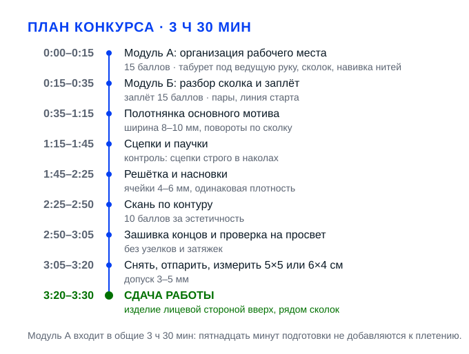
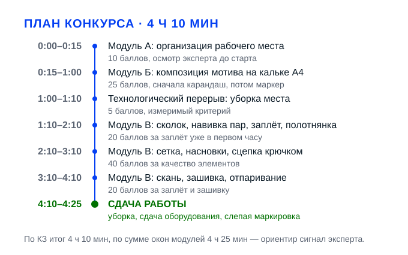
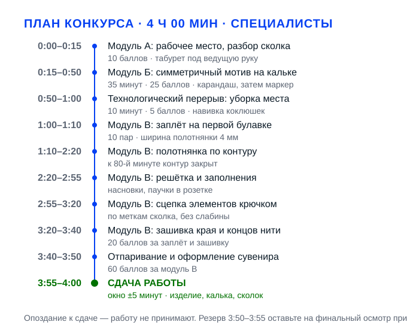

Кружевница (Р)
Задания ниже — официальные файлы «Абилимпикс» (источник: abilympics-russia.ru), разложенные по категориям. Решения написаны по тексту задания, регламенту и критериям оценки; в них указано, что именно проверяет эксперт.
Школьник
14–16 лет, базовый уровень заданияВыдержка из официального конкурсного задания: страницы, относящиеся к категории «Школьник» (стр. 5–7 источника).
Пошаговое решение
Конкурсное задание категории «Школьники» состоит из двух модулей, которые идут строго один за другим, и время на них отмеряется одним отрезком: 15 минут на модуль А и 3 часа 15 минут на модуль Б, всего 3 часа 30 минут. В модуле А вы организуете рабочее место кружевницы: ставите табурет с инструментами с учётом ведущей руки, крепите сколок, навиваете нити на коклюшки, — и это 15 баллов. В модуле Б вы плетёте сувенир сцепной техникой по готовому сколку 5×5 см или 6×4 см из нитей «Канарис» и «Ирис»; здесь 85 баллов: 60 за качество основных элементов, 15 за заплёт и 10 за эстетичность. Количество пар, место заплёта, вид скани и её расположение задание оставляет на ваш выбор, и принять его нужно до первого движения. Ниже задание разложено на четыре задачи: подготовка места, заплёт, плетение элементов и отделка со сдачей. Каждый шаг объясняет, что делать, как проверить и что идёт не так.

Задача 1. Организовать рабочее место и подготовить инструментМодуль А · 15 баллов · 15 минут
Модуль А — единственные пятнадцать минут, которые даются не на плетение, а на подготовку: 8 баллов за организацию места, 3 за рабочий процесс без сбоев, 2 за технику безопасности и 2 за соблюдение правил конкурса. Пятнадцать минут не растягиваются: если задержаться на подготовке, время уйдёт из плетения, а если начать плести на неподготовленном месте, потеряете баллы модуля А и испортите первые сантиметры сувенира. Задача модуля — выйти на старт с ровно закреплённым сколком, навитыми коклюшками и разложенным инструментом.
Действие 1.1. Осмотреть площадку и поставить подушку под ведущую руку
Шаг 1.1.1
Входим на площадку и сначала просто осматриваем место, ничего не переставляя: где стоит подставка с подушкой, где табурет для инструментов, откуда падает свет, не мешает ли что-то справа и слева. Затем садимся на стул и подгоняем посадку под себя: стопы полностью на полу, спина прямая, плечи опущены, корпус в 15–20 см от края подушки. Если стул регулируется, поднимаем сиденье так, чтобы локти лежали чуть ниже уровня сколка, а не висели над ним.
За организацию рабочего места в модуле А дают 8 баллов, и эксперт осматривает место визуально, до начала плетения. Смысл этих баллов практический: при неправильной посадке уже через полчаса начинает болеть спина и деревенеют пальцы, темп падает, а на три часа плетения это критично. Кроме того, посадка с наклоном корпуса вперёд на 20–25 см укорачивает дыхание и заставляет чаще останавливаться.
Проверьте себя тремя признаками: стопы стоят на полу целиком, колени под прямым углом; предплечья лежат на подушке или на её краю без напряжения; голова не наклонена, и вы видите весь сколок, не поворачивая шею. Если приходится тянуться — подушка стоит далеко, если приходится горбиться — низко.
Типичная ошибка — сразу сесть за подушку «как получилось», потому что время уже пошло, и через сорок минут начать ёрзать и переставлять стул. Каждая такая перестановка сдвигает сколок, натяжение пар сбивается, и два-три ряда приходится переплетать заново.
Эксперт обходит площадку в первые минуты и отмечает, подогнано ли место под участника или участник подстроился под то, что было. Отдельно фиксируется, не заслоняет ли участник сам себе свет.
Шаг 1.1.2
Ставим подставку с подушкой так, чтобы центр сколка оказался на уровне глаз или чуть ниже — примерно на 10–15 см ниже подбородка, — и задаём наклон подушки 30–45 градусов от стола. Наклон проверяем ладонью: подушка должна смотреть на вас, а не в потолок, и не лежать плашмя. Если подставка позволяет, сдвигаем подушку чуть в сторону ведущей руки, чтобы рабочая рука с крючком ходила свободно, а вторая не тянулась через центр.
Наклон в 30–45 градусов — это не формальность: на плоской подушке коклюшки падают на сколок и путают нити, а при слишком крутом наклоне они съезжают вниз и тянут пары. Положение сколка на уровне глаз напрямую влияет на критерий «качество выполнения основных элементов» — 60 баллов: когда вы смотрите на сколок сверху вниз, ширина полотнянки уходит, и заметить это можно только на уже испорченном участке.
Присядьте и посмотрите на подушку сбоку: угол между её плоскостью и столом должен быть заметным, а не нулевым. Возьмите две коклюшки и положите их на подушку — они должны остаться на месте, а не скатиться вниз.
Самая частая ошибка — оставить подушку горизонтально, как её поставили организаторы. Вторая — выставить слишком крутой наклон, при котором коклюшки постоянно съезжают и приходится придерживать их мизинцем, теряя темп и натяжение.
Эксперт смотрит на угол подушки и на то, свободно ли ходят руки. Кривой наклон он отмечает как ошибку организации места. Отдельно он отмечает, видит ли участник сколок целиком или заслоняет его корпусом и руками.
Шаг 1.1.3
Ставим табурет с инструментами рядом с подушкой со стороны ведущей руки — у правши справа, у левши слева, — и так, чтобы до любой вещи на нём можно было дотянуться, не вставая и не разворачивая корпус. На табурете раскладываем инструменты в один слой, каждый на своём месте: крючок, накол, ножницы, подушечка с булавками. Проход между вашим местом и соседним оставляем свободным, ничего в него не выдвигая.
Табурет под ведущую руку — прямое требование конкурсного задания, и результат модуля сформулирован так: рабочее место подготовлено с учётом ведущей руки. Одновременно это часть критерия «организация рабочего процесса» на 3 балла: если за булавкой приходится поворачиваться всем корпусом, процесс идёт со сбоями, и эксперт это видит в первые же минуты плетения.
Сядьте и, не вставая, по очереди дотянитесь до каждого предмета на табурете. Если приходится наклоняться в сторону или тянуться за спину — переставьте табурет. Проход шириной не меньше 40–50 см должен оставаться свободным.
Ошибка — поставить табурет со стороны неведущей руки «потому что тут место есть». Тогда каждая булавка берётся через корпус, левая рука работает вслепую, и на сцепке это даёт перекос. Исправить это потом нечем: переставлять табурет в модуле Б уже нельзя, время модуля А закрыто.
Эксперт обходит место и смотрит, с какой стороны стоит табурет и не загромождён ли проход. Это одна из первых отметок в листе модуля А. Проверку он делает до старта плетения, позже место не пересматривают.
Действие 1.2. Закрепить сколок и проверить подушку
Шаг 1.2.1
Берём сколок за края, не сгибая, и укладываем его на подушку так, чтобы весь рисунок поместился в рабочей зоне, а до нижнего края подушки оставалось 5–7 см свободного места под коклюшки. Крепим четырьмя булавками по углам, вкалывая их не вертикально, а с наклоном примерно 45 градусов от центра — так полотно не выгнется пузырём. Затем проверяем диагонали: расстояние от левого верхнего угла до правого нижнего и от правого верхнего до левого нижнего должно совпадать с точностью до 2–3 мм.
Сколок на подушке — это система координат, по которой вы будете плести 3 часа 15 минут. Перекошенный сколок означает, что все сцепки встанут не на свои места, а полотнянка пойдёт с перекосом, и это ударит по 60 баллам за качество основных элементов. Проверка диагоналей занимает полминуты и ловит перекос сразу, пока он ещё не стоит вам ни одного распущенного ряда.
Диагонали равны, сколок лежит без волн, булавки держат плотно. Проведите ладонью по поверхности: под пальцами не должно быть бугров и складок. Под ладонью не должно быть бугров и складок: если бумага пошла волной, булавка вколота слишком близко к краю.
Частая ошибка — приколоть сколок двумя булавками сверху и начать плести, а потом обнаружить, что нижний край поднялся. Вторая — вкалывать булавки строго вертикально: они выходят снизу и цепляют нити. И перекос, и поднятый край обнаруживаются на готовом изделии, когда исправлять уже поздно.
Эксперт осматривает крепление сколка в начале модуля Б: ровно ли лежит, не топорщится ли бумага. Отдельно он отмечает, не сдвинулся ли сколок за первые минуты плетения.
Шаг 1.2.2
Накрываем сколок прозрачной плёнкой или листом кальки, закреплённым по краям, чтобы нити не цеплялись за бумагу и сколок не рвался в местах наколов. Плёнку натягиваем без складок, разглаживая рукой от центра к краям, и повторно прикалываем по углам теми же булавками через край. Точки наколов на сколке должны читаться через плёнку. Края плёнки подворачиваем под сколок, чтобы они не топорщились и не цепляли нить.
Бумажный сколок рвётся по наколам уже через час работы, и булавка перестаёт держаться в нужной точке — сцепка уезжает. Плёнка стоит копейки, а спасает и сколок, и ровность рисунка. Кроме того, через матовую плёнку нити скользят ровнее, и натяжение пар получается однородным.
Приложите ладонь: плёнка не смещается, складок нет, все наколы видны. Попробуйте вколоть булавку в накол через плёнку — она должна войти в отверстие, а не рядом с ним. Булавка должна входить в отверстие, а не рядом с ним: сдвиг плёнки на два миллиметра сбивает весь заплёт.
Ошибка — накрыть сколок так, что наколы не совпадают с отверстиями, и потом колоть булавки наугад рядом с точкой. Рисунок сразу сбивается на 2–3 мм, а на сувенире 5×5 см это заметно глазом. Тогда заплёт приходится перекалывать заново, и это минуты, отнятые у плетения.
Эксперт смотрит, читается ли сколок и не рвётся ли он по ходу работы. Порванный сколок в середине конкурса — это уже нарушение рабочего процесса. Он же проверяет, не порвался ли сколок в местах наколов: по разрывам булавка перестаёт держать точку.
Шаг 1.2.3
Проверяем подушку и пяльца: подушка должна быть плотной, не продавливаться под булавкой, набивка — без комков; если сколок держится в пяльцах, проверяем, что он натянут без перекоса и не провисает. Наколом проходим по всем точкам сколка, которые понадобятся в работе, — это делается до навеса нитей, пока сколок чистый. Заодно проверяем, что подставка стоит устойчиво и не качается от движения коклюшек.
Через час работы подушка, которая продавливается, перестаёт держать булавки кромки, и полотнянка начинает «плясать» по ширине. Пробитые заранее наколы ускоряют работу: вы не ищете точку, а сразу ставите булавку, и темп держится ровным — это и есть рабочий процесс без сбоев на 3 балла.
Надавите большим пальцем на подушку — остаётся едва заметная вмятина, а не ямка. Покачайте подставку: люфта быть не должно. Каждая точка накола должна приниматься булавкой с лёгким усилием, а не с хрустом бумаги.
Ошибка — начать навешивать нити на непробитый сколок, а потом колоть наколы на весу, задевая уже висящие пары. Вторая — плести на подушке, набитой так слабо, что булавка кромки вылетает при натяжении.
Эксперт проверяет готовность оборудования визуальным осмотром и отмечает, подготовлен ли сколок к работе, а не только положен на подушку. Слабая набивка подушки и люфт подставки идут в те же 8 баллов за организацию места.
Действие 1.3. Навить нити на коклюшки
Шаг 1.3.1
Выбираем нить: по конкурсному заданию это хлопчатобумажные «Канарис» и «Ирис». «Канарис» тоньше, «Ирис» заметно толще и с глянцем, поэтому при переходе с одной нити на другую число пар уменьшают на одну-две, иначе полотнянка не уложится в сколок шириной 5 см. Нить проверяем на разрыв: тянем короткий отрезок между пальцами — она должна пружинить, а не рваться от лёгкого усилия и не быть сухой и шершавой. Отмеряем на одну пару примерно 1,5–2 метра — это четыре-пять длин будущего сувенира.
Длина нити — это не мелочь: при короткой навивке вы будете делать зашивку и навес посреди сцепки, и на этом месте почти всегда появляется утолщение, которое снижает оценку за эстетичность (10 баллов). Слишком длинная нить путается, цепляется за соседние пары и образует «бороду», которую потом невозможно распутать без распуска двух-трёх рядов.
Сомкните нить в кольцо и посмотрите на свет: узелков, утолщений и «лохматых» участков быть не должно. Отрезок в 1,5 метра должен свободно проходить между пальцами, не задерживаясь на заусенцах кожи. Нить не должна лосниться: у лежалой пряжи волокна слипаются и дают утолщения в полотне.
Ошибка — взять нить «на глаз», отмотав от клубка первое, что тянется. Вторая — выбрать нить другого номера, чем та, на которую рассчитан сколок: полотнянка получится шире рисунка и наложится на сцепки.
Эксперт обращает внимание на соответствие нити сколку и на чистоту нити: затяжки и узелки видны в готовом изделии и снижают баллы за эстетичность. Нить не по номеру он отмечает как ошибку подбора материала: сколок рассчитан на определённую толщину.
Шаг 1.3.2
Навиваем нить на коклюшку ровно, виток к витку, начиная от шейки и укладывая витки плотно друг к другу без перехлёстов. Наматываем на ведущую руку так, чтобы коклюшка свободно вращалась пальцами, а нить шла с нижней стороны. Навив заканчиваем, оставив свободный конец 15–20 см, и закрепляем его петлёй на шейке коклюшки, а не узлом на самой навивке. После навивки проверяем, что на коклюшке не осталось свободно лежащих витков: они сойдут при первом движении.
Ровная навивка — условие равномерного натяжения. Если нить лежит крест-накрест или с наплывами, при сходе она подтормаживает, пара то натягивается, то провисает, и полотнянка идёт волной. Критерий «качество выполнения основных элементов» — это 60 баллов из 100, и половина брака в нём появляется именно из-за навивки.
Возьмите коклюшку за головку и раскрутите: она вращается свободно, витки не расходятся и не сползают. Нить сходит с навивки без рывков, при лёгком подтягивании не заедает. Витки не должны сползать к головке: если сползли, навивка слабая, перемотайте пару целиком.
Ошибка — намотать нить «восьмёркой», потому что так быстрее: сход получается неравномерным. Вторая — завязать конец узлом на навивке, и потом этот узел выходит в полотнянку, где его видно на просвет. Третья — навивать без натяжения: витки провисают и сходят петлями, а не ровной нитью.
Эксперт при осмотре модуля А проверяет навивку нитей на коклюшки — это прямо названо в критерии организации рабочего места на 8 баллов. Навивка проверяется в модуле А: она названа в критерии организации места прямым текстом.
Шаг 1.3.3
Собираем коклюшки в пары и раскладываем их по порядку работы: пары для полотнянки — слева, пары для решётки и скани — справа, чтобы в нужный момент брать их не глядя. Каждую пару проверяем на равную длину нити: коклюшки одной пары должны висеть на одной высоте, расхождение — не больше 2–3 см. Если нить на одной коклюшке короче, перематываем, а не подтягиваем во время плетения.
Пара с разной длиной нитей — скрытый брак: одна коклюшка тянет сильнее, полотнянка уходит в сторону от сколка, и «поворот» на краю получается разной высоты. При 60 баллах за основные элементы такая мелочь стоит нескольких баллов, а исправлять её приходится распуском.
Поднимите пару за обе коклюшки: головки на одном уровне, нити натянуты одинаково, провиса нет. Разложенные пары не пересекаются между собой и не лежат на сколке. Пары не задевают друг друга и не лежат поперёк сколка, иначе при первом движении они запутаются.
Ошибка — навесить пару из коклюшек с разной навивкой и надеяться, что «выровняется в процессе». Не выровняется: разница длин уйдёт в кромку и останется там до конца. Разная навивка меняет и расход нити: одна коклюшка опустеет на час раньше.
Эксперт смотрит на порядок на подушке: разложены ли пары по назначению или лежат кучей. Куча — это отметка о сбое в организации процесса. Он же смотрит, подписаны ли пары: без пометок участник путает, какая для чего приготовлена.
Действие 1.4. Разложить инструменты и снять риски
Шаг 1.4.1
Раскладываем на табурете всё, что понадобится в работе: крючок для сцепок, накол, ножницы, подушечку с булавками. Крючок кладём остриём от себя, ножницы — кольцами к себе и в закрытом виде, булавки — головками вверх в подушечке, воткнутыми на две трети длины. Накол кладём рядом с булавками, потому что они работают в паре. Ничего лишнего на табурете не оставляем: чашка, телефон и пакет стоят не там.
Порядок на табурете — это скорость и точность. За три часа к сцепке вы потянетесь к крючку не меньше сотни раз, и каждый поиск — это потерянные секунды и сбитое натяжение. Кроме того, разложенный инструмент виден эксперту как часть организации места (8 баллов) и как отсутствие помех в рабочем процессе (3 балла).
Проверьте рукой, не глядя: вы должны находить крючок, ножницы и булавки на ощупь. На табурете нет предметов, не относящихся к работе, и ничего не свисает с края. Если крючок приходится искать глазами, раскладка неудачная — переложите инструмент до старта.
Типичная ошибка — держать булавки россыпью на подушке рядом со сколком: они цепляют нити и выдёргиваются вместе с кромкой. Вторая — класть крючок остриём к себе, что при неловком движении ведёт к травме.
Эксперт фиксирует раскладку инструмента при осмотре модуля А и следит, возвращается ли инструмент на место по ходу работы. Он же отмечает, нет ли на табурете посторонних вещей, не относящихся к работе.
Шаг 1.4.2
Проговариваем и снимаем риски: булавки и крючок никогда не берём в рот, ножницы передаём кольцами вперёд и держим закрытыми, крючок во время перерыва кладём на табурет, а не оставляем в сцепке. Свет направляем так, чтобы он падал на сколок сбоку, а не в глаза, и не давал тени от собственных рук. Через каждые 40–50 минут делаем короткую паузу на 1–2 минуты: разводим плечи, смотрим вдаль, разминаем кисти.
Нормы техники безопасности — 2 балла, и они снимаются мгновенно: достаточно одного случая, когда булавку держат в зубах, чтобы эксперт сделал отметку. Паузы — это не про здоровье в общем смысле: к концу третьего часа кисти деревенеют, движения становятся размашистыми, и именно тогда рвутся нити и распускаются ряды.
Инструмент лежит так, как вы его положили: остриё крючка от вас, ножницы закрыты, булавки в подушечке. Свет не бьёт в глаза, на сколке нет вашей тени. Проверьте это до старта: потом следить за направлением света будет некогда.
Ошибка — оставить крючок воткнутым в сцепку, а потом задеть его локтем и вырвать два-три ряда. Вторая — работать без пауз и к третьему часу потерять точность на сцепках. Третья — держать булавки во рту, чтобы освободить руки: за это снимают баллы по ТБ сразу.
Эксперт наблюдает за соблюдением норм ТБ в течение всего конкурса, а не только на входе. Отдельная отметка — если участник трогает лицо или волосы руками, которыми держал нить.
Шаг 1.4.3
Перед стартом модуля Б докладываем о готовности и называем свой план вслух или про себя по пунктам: с какой точки начинаем заплёт, сколько пар берём, где расположим сканю и каким элементом закончим. План полезно записать на листке рядом с подушкой — три-четыре слова, которые вы будете сверять через час. После этого проверяем, что сколок, нити и инструмент на месте, и переходим к навесу.
Критерий «рабочий процесс без сбоев, выполняется чётко по плану» стоит 3 балла, и эксперт оценивает его наблюдением: видно ли, что участник знает, что делает дальше, или каждый следующий шаг для него сюрприз. Проговорённый план ещё и экономит время: на сувенире 6×4 см смена решения посреди работы означает распуск половины сделанного.
Вы можете, не подглядывая, сказать, где будет первая сцепка и сколько пар в полотнянке. Всё разложено, ничего не ищется, руки свободны. Если план держится только в голове, запишите его на листок рядом с подушкой.
Ошибка — начать плести без плана и на середине понять, что скань некуда поставить: она перекрывает сцепку, и её приходится распускать вместе с участком полотнянки. Скань, снятая вместе с участком полотнянки, — это распуск на полчаса.
Эксперт отмечает, насколько осознанно участник начинает работу: смотрит ли он на сколок целиком или сразу ныряет в первую попавшуюся линию. Осознанное начало он отличает от суетливого по первому движению рук.
Задача 2. Разобрать сколок и выполнить заплётМодуль Б · заплёт 15 баллов
Заплёт вынесен в критериях отдельной строкой на 15 баллов, потому что от него зависит всё остальное: ровная линия старта, одинаковое натяжение пар и правильная ширина полотнянки на первых рядах задают геометрию сувенира 5×5 или 6×4 см. Пока заплёт не выполнен, менять решение дёшево: снять пару или переставить булавку — минута. После десятого ряда любая правка означает распуск и потерю времени, которого на модуль Б отведено 3 часа 15 минут. Поэтому сначала читаем сколок целиком и принимаем решения, оставленные на выбор участника, и только потом навешиваем нити.
Действие 2.1. Прочитать сколок и принять решения
Шаг 2.1.1
Кладём сколок перед собой и разбираем его по элементам, ведя пальцем по линиям: где идёт полотнянка, где решётка (сетка), в каких точках стоят наколы под сцепки, где рисунок поворачивает. Определяем направление хода — от места заплёта по контуру и обратно к началу, без пересечения собственных линий. Отмечаем карандашом на полях сколка те точки, где рисунок меняет направление, — их будет три-четыре, и именно в них чаще всего сбиваются.
Сколок — это чертёж, а не картинка: если читать его целиком, видно, что часть элементов плетётся одной непрерывной полотнянкой, а часть требует отдельных сцепок. Без этого разбора участник плетёт «как получается» и упирается в тупик на середине, когда полотнянка приходит в точку, из которой нет выхода. Качество основных элементов — 60 баллов, и оно напрямую зависит от того, правильно ли прочитан сколок.
Вы можете, не подглядывая, показать пальцем весь путь плетения от старта до конца и назвать, сколько раз рисунок поворачивает. Если путь рвётся или замыкается сам на себя — сколок прочитан неверно. Разбор удобно проверять по копии сколка: обведите путь карандашом — линия не должна пересекать саму себя.
Ошибка — начать с самой красивой части рисунка, не проследив путь до конца. Вторая — считать, что решётка и полотнянка плетутся одинаково: решётка идёт разреженно, и переход на неё без смены натяжения даёт провал по ширине.
Эксперт подходит и слушает, как участник объясняет свой план. Уверенный разбор сколка сразу читается как понимание технологии. Если участник начинает с середины и не объясняет, как придёт к краю, это слышно сразу.
Шаг 2.1.2
Определяем количество пар. Для полотнянки шириной 8–10 мм, которая укладывается в сколок 5×5 см, берут 7 или 9 пар — нечётное число, потому что две крайние пары работают как кромка и в переплетении участвуют иначе. Считаем по наколам: на каждый сантиметр длины заплёта приходится примерно одна пара, а в местах поворота добавляем ещё одну. Для нити «Ирис», которая толще «Канариса», берём на одну-две пары меньше, иначе полотнянка не встанет в рисунок.
Количество пар конкурсное задание оставляет на выбор участника — и это ловушка: слишком мало пар даёт рыхлое кружево, в котором просвечивают промежутки, слишком много — плотный вал, который не укладывается в сколок и наезжает на сцепки. И то и другое снимает баллы в блоке «качество выполнения основных элементов» (60 баллов) и в эстетичности (10 баллов).
Разложите пары на подушке: они должны заполнять линию заплёта без тесноты и без просветов. Прикиньте на глаз: если пары стоят вплотную и задевают друг друга — их много, если между ними виден сколок — мало.
Ошибка — взять «побольше, чтобы плотнее»: полотнянка становится валом и не поворачивает на радиусе. Вторая — взять чётное число пар на полотнянку, из-за чего кромка получается разной с двух сторон. Третья — взять пар больше, чем навито нитей: новые придётся навешивать посреди мотива, и в полотне появится утолщение.
Эксперт смотрит на количество навешенных пар и на то, насколько оно соответствует ширине рисунка. Это одна из проверок при оценке заплёта. Он сравнивает число пар с шириной рисунка и отмечает несоответствие.
Шаг 2.1.3
Принимаем три решения, которые задание оставляет свободными, и фиксируем их на бумаге: место заплёта (обычно нижняя или боковая линия рисунка, откуда удобно идти по контуру), вид скани (тугая витая из двух пар или из трёх) и место её расположения (по внешнему контуру мотива или вокруг центрального элемента). Записываем коротко: «заплёт снизу слева, скань из двух пар по внешнему контуру». Эти три строки экономят часы: через час вы уже не будете помнить, что решили.
Скань — самая заметная часть готового сувенира: витая плотная обводка читается как контур рисунка, и именно по ней эксперт видит, ровно ли сплетено изделие. Решение, принятое заранее, позволяет проложить скань без разрывов, а разрывы и «перескоки» скани сразу снижают эстетичность, за которую дают 10 баллов.
Решение записано, и вы можете назвать его, не заглядывая в сколок. Место заплёта выбрано так, что от него рисунок проходится одним ходом, без возвратов через уже сплетённое. Три решения должны уместиться в три строки: если объяснение занимает полстраницы, вы ещё не решили.
Ошибка — решать про скань в момент, когда до неё осталось два сантиметра: тогда её кладут «как ляжет», и она перекрывает сцепку. Вторая — выбрать место заплёта в середине рисунка, откуда в обе стороны идти неудобно.
Эксперт при оценке эстетичности смотрит именно на скань: её ровность, одинаковую плотность и то, насколько она совпадает с контуром сколка. Скань он оценивает и как элемент техники, и как часть эстетичности.
Действие 2.2. Навесить нити и заплести начало
Шаг 2.2.1
Вкалываем булавки по линии заплёта с шагом 10–15 мм, входя в наколы сколка под небольшим углом. Первую булавку ставим в крайнюю левую точку, последнюю — в крайнюю правую, и натягиваем между ними мысленную прямую: линия должна быть ровной, без ступенек. Проверяем линейкой, что она параллельна краю сколка или идёт точно по рисунку, если заплёт косой.
Линия булавок — это фундамент: кромка первого ряда ляжет точно по ней, и любая ступенька в 2 мм разойдётся веером по всей ширине полотнянки. Оценка заплёта (15 баллов) ставится в том числе за ровную линию старта, а не только за то, что плетение вообще начато.
Приложите линейку к головкам булавок: они стоят на одной линии, шаг одинаковый. Булавки держатся плотно, не качаются, вколоты на две трети длины. Булавки стоят на равном расстоянии от края сколка, иначе первый ряд ляжет косо.
Ошибка — ставить булавки на глаз, с шагом «то 8, то 18 мм»: полотнянка на старте получается волной. Вторая — вкалывать булавку рядом с наколом, а не в него: бумага прокалывается в новом месте и сколок рвётся.
Эксперт осматривает линию заплёта при оценке выполнения заплёта и отмечает ровность стартовой кромки. Ровность стартовой кромки он отмечает как часть оценки заплёта.
Шаг 2.2.2
Навешиваем пары на булавки по порядку слева направо. Каждую пару складываем пополам, получившуюся петлю подводим под булавку и протаскиваем в неё оба конца, после чего подтягиваем за коклюшки до упора. Навесив все пары, проверяем, что ни одна не перекручена: обе нити пары должны лежать параллельно, а не жгутом. Коклюшки свешиваются вниз ровным рядом, не задевая друг друга.
Правильный навес даёт одинаковую длину всех пар и одинаковое натяжение — то, без чего полотнянка не держит ширину. Перекрученная пара при первом же перевиве ложится валиком и создаёт утолщение, которое потом уходит в кромку и остаётся в готовом изделии как брак — а это минус из 60 баллов за основные элементы.
Проведите рукой по ряду коклюшек: головки висят на одной высоте с точностью до 1–2 см, ни одна пара не перекрещена, все петли затянуты на булавках плотно. Потяните пару вверх: она не должна сходить с булавки, петля затянута плотно.
Ошибка — навесить пару петлёй, но не подтянуть её: при первом движении петля съедет с булавки, и пара выпадет из работы посреди ряда. Вторая — оставить перекрут, надеясь, что «уйдёт в плетении»: он не уходит, а всплывает через пять-шесть рядов.
Эксперт проверяет навес визуально: ряд коклюшек должен выглядеть ровным и одинаковым по длине нитей. Он смотрит и на перекрут: валик на паре виден ещё до начала плетения.
Шаг 2.2.3
Заплетаем начало: крайние пары перевиваем между собой и укладываем первую полотнянку, придерживая булавки пальцами левой руки. Проходим 3–5 рядов, пока полотно не ляжет по всей линии заплёта и не начнёт держать форму. Каждый ряд подтягиваем равномерно, без рывков: сначала перевив пары, затем перестановка кромочной булавки, затем подтяжка. Не забываем в конце каждого ряда проверять, что ни одна пара не вышла из строя.
Первые пять рядов определяют, будет ли полотно ровным: если на старте пары натянуты по-разному, разница сохранится до конца работы, и исправить её можно только распуском. Кроме того, заплёт — это ещё и закрепление: пока он не готов, изделие держится на честном слове, и одно неосторожное движение сбрасывает все пары с булавок.
Первые пять рядов лежат ровно, ширина одинаковая по всей длине, кромка не заваливается. Полотно держится на булавках без дополнительных подтяжек, и при лёгком натяжении ни одна пара не выходит из ряда.
Ошибка — сразу плести быстро, «нагоняя темп»: на старте это гарантирует перекос. Вторая — не переставлять кромочные булавки, из-за чего кромка провисает и первый ряд идёт дугой. Третья — придерживать полотно слишком крепко: перевив ложится туго, и ширина уходит.
Эксперт смотрит на заплёт в первую очередь: это отдельные 15 баллов, и они ставятся именно по первым сантиметрам. Заплёт он оценивает как законченный этап, а не как «начали плести».
Шаг 2.2.4
Проверяем заплёт по трём признакам и только потом идём дальше: линия старта ровная и повторяет контур сколка; ширина полотнянки одинаковая по всей длине и равна задуманным 8–10 мм; натяжение всех пар одинаковое — при лёгком подергивании за любую коклюшку полотно отзывается целиком, а не отдельным участком. Если что-то не так, правим сразу: снять пару и навесить заново дешевле, чем распускать десять рядов.
Проверка на этом рубеже — точка, после которой цена ошибки резко растёт. Заплатка на заплёте стоит минуту, а переделка того же участка через полчаса — пятнадцать минут из 3 часов 15 минут, и эти минуты берутся из времени на скань и зашивку, то есть из самых дорогих операций.
Полотно лежит по сколку без смещений, ширина держится, кромка ровная. При взгляде сбоку полотно не «лодочкой» и не волной. Проверьте и изнанку: рисунок на ней должен читаться так же, как на лице, без утолщений и «лодочки».
Ошибка — пропустить эту проверку и заметить перекос на пятнадцатом ряду, когда исправление уже требует распуска половины сплетённого. Вторая — подтянуть пару «чтобы ровнее» и сбить этим общее натяжение.
Эксперт оценивает заплёт как законченный этап: 15 баллов ставятся за готовое, ровное, правильно закреплённое начало, а не за его наличие. Он смотрит именно на первые сантиметры: по ним видно, будет ли ровным всё изделие.
Действие 2.3. Выйти на рабочую ширину
Шаг 2.3.1
Переводим плетение с линии заплёта на рабочий контур: переставляем булавки по кромке сколка, каждую на своё место по рисунку, и выравниваем ширину до задуманных 8–10 мм. Делаем это по одной паре, проверяя после каждой, что полотно не тянет в сторону. Крайние пары разводим на полную ширину, средние распределяем равномерно, без сгущений у одной кромки.
Переход с линии заплёта на рабочий контур — самый частый источник «талии»: полотно на двух-трёх рядах сужается, и в готовом изделии видно перетяжку посередине. При 60 баллах за качество основных элементов такая перетяжка читается как неумение держать ширину.
Ширина на десяти рядах подряд одинаковая — проверьте линейкой в трёх местах. Кромки ровные, полотно не уходит в сторону от линии сколка больше чем на 1 мм. Считайте не ряды, а сантиметры: десять рядов на «Канарисе» и на «Ирисе» дают разную длину.
Ошибка — растянуть полотно сразу на всю ширину, дёрнув за крайние пары: середина провисает, и потом её не подтянуть. Вторая — оставить ширину прежней, и полотно идёт уже сколка. Третья — дёргать за одну крайнюю пару: край вытягивается, и кромка идёт косо.
Эксперт измеряет ширину полотнянки в нескольких местах готового изделия — одинаковость ширины прямо названа в критериях. Он смотрит и на места, где рисунок шире или уже: там ширина чаще всего и уходит.
Шаг 2.3.2
Выравниваем натяжение всех пар и дальше поддерживаем его как постоянную величину: подтягиваем пару только тогда, когда она ослабла, и на столько же, на сколько ослабла. Проверяем натяжение, легко проведя пальцем по нитям: все должны звучать одинаково — как струны одной толщины. Раз в 15–20 минут осматриваем ряд коклюшек и убираем провисшие пары. Если полотно стягивается к одной стороне, сначала проверяем, не перекручена ли пара.
Равномерное натяжение — физическая основа ровного кружева: при разном натяжении пары ложатся с разной плотностью, и на просвет видны полосы. Это одна из главных причин снижения оценки за качество основных элементов, причём исправляется она только распуском.
Нити звучат одинаково, провиса нет, полотно при лёгком нажатии пружинит равномерно по всей ширине. Коклюшки висят ровным рядом без «ступенек». Натяжение проверяйте после каждой сцепки: сцепка подтягивает одну пару сильнее остальных.
Ошибка — подтягивать пару «на всякий случай» каждый ряд: натяжение растёт, полотно стягивается и сужается к концу. Вторая — не замечать, что одна пара постоянно слабее остальных, и мириться с этим. Третья — подтягивать пальцами вместо коклюшек: пальцы растягивают уже сплетённый участок.
Эксперт проверяет натяжение пальцем по ходу работы и по готовому изделию: ровность полотна на просвет видна сразу. Он обращает внимание и на коклюшки: по их положению видно, тянет ли участник пары в сторону.
Задача 3. Сплести основные элементы сцепной техникиМодуль Б · качество элементов 60 баллов
Основная часть работы — три часа плетения на подушке, и она приносит самую большую часть оценки: 60 баллов из 100 за качество выполнения основных элементов. Это полотнянка, которая держит контур, повороты и закидки, которыми рисунок разворачивается, сцепки, соединяющие части мотива в одно целое, и паучки с решёткой в промежутках. Элементы соединяются крючком в точках сколка, и геометрия сувенира зависит от того, точно ли они совпали с рисунком. Гнать не нужно: сувенир 5×5 см спокойно плетётся за три часа, если каждые десять минут сверяться со сколком.
Действие 3.1. Плести полотнянку
Шаг 3.1.1
Полотнянку ведём по рисунку так: крайние пары перевиваем между собой и перекладываем на противоположную сторону, а внутренние переплетаем в шахматном порядке — пара через пару. Полный переплёт (два перевива подряд) даёт плотное полотно, неполный (один перевив) — разреженное, ажурное. Держим полотно четырьмя пальцами левой руки у самой кромки, а правой работаем парами, не поднимая коклюшки высоко: движение идёт по дуге 10–15 см над подушкой, а не размашисто через всю подушку.
Полотнянка — основной элемент, и её качество оценивают и отдельно (внутри 60 баллов), и через эстетичность: именно она видна на просвет как ровная тесьма или как рыхлая дорожка. Плотность переплёта выбирается один раз на весь элемент: если начать плотно, а потом перейти на разреженный, разница видна глазом.
Поднимите полотно на свет: полотнянка выглядит ровной тесьмой с одинаковой плотностью по всей длине, без просветов и без уплотнений. Ширина на десяти сантиметрах не меняется больше чем на 1 мм. Проверку делайте каждые 3–4 см: на длинном участке перетяжка накапливается незаметно.
Ошибка — перевивать средние пары «как получится», из-за чего полотно выходит рыхлым с одного края и плотным с другого. Вторая — работать размашисто, поднимая коклюшки высоко: нити перекручиваются и путаются.
Эксперт подходит и смотрит на текущее полотно: ровность тесьмы и однородность переплёта — первое, что он отмечает. Он смотрит и лицевую, и изнаночную сторону: переплёт должен читаться одинаково.
Шаг 3.1.2
Держим ширину полотнянки постоянной и контролируем её линейкой каждые 3–4 см длины, а не «на глаз». Для сувенира на сколке 5×5 см ширина обычно 8–10 мм; если рисунок задаёт другую ширину, ориентируемся на наколы сколка — полотно должно ложиться между ними, не закрывая соседние линии. Кромку подтягиваем крайней парой, а не пальцами: пальцы растягивают готовый участок.
Ширина полотнянки названа в критериях оценки прямым текстом — за соблюдение одинаковой ширины на протяжении всего рисунка начисляются баллы, и на просвет перетяжка видна ярче всего. Кроме того, при разной ширине сцепки не совпадают с наколами, и мотив расползается.
Замерьте ширину в начале, в середине и в конце сплетённого участка штангенциркулем или линейкой с ценой деления 1 мм. Разница — не больше 1 мм. Кромки ровные, без «зазубрин». Повторите замер через 3–4 см: расхождение больше миллиметра — это уже перетяжка, её надо ослабить.
Ошибка — тянуть кромку пальцами, чтобы «выровнять»: участок вытягивается и потом садится после отпаривания, давая волну. Вторая — не мерить вовсе и обнаружить перетяжку только на готовом изделии. Третья — подтягивать кромку после каждого ряда «для ровности»: полотно стягивается к концу.
Эксперт измеряет ширину полотнянки в трёх-четырёх местах готового сувенира и сравнивает с рисунком сколка. Он сравнивает ширину с рисунком сколка, а не с соседним участком изделия.
Шаг 3.1.3
Переставляем кромочные булавки строго по порядку: вкололи новую булавку в следующий накол, подтянули к ней кромку, вынули предыдущую. Булавку вынимаем только после того, как новая встала и полотно к ней подтянуто, — иначе кромка провиснет и ряд пойдёт дугой. Вынутую булавку сразу возвращаем в подушечку, а не кладём на сколок. Следим, чтобы шляпки булавок стояли ровно и не цепляли нить при перевиве.
Кромочные булавки держат полотно в натяжении и одновременно задают линию контура. Порядок «сначала новая, потом убрать старую» — это единственный способ не потерять натяжение ни на одном ряду. Булавка, брошенная на сколок, цепляет нити и выдёргивает пару из работы.
В каждый момент на кромке стоят булавки на всех точках, кроме одной предыдущей, и полотно натянуто к последней. На сколке не лежит ни одной свободной булавки. Проверяйте кромку после каждого перевива: провисшую булавку видно по дуге на двух-трёх рядах.
Ошибка — вынуть старую булавку до установки новой: кромка провисает, и ряд идёт дугой на 2–3 мм. Вторая — ставить булавку не в накол, а рядом: сколок рвётся, и точка сцепки уезжает. Третья — вкалывать булавку до шляпки: она расклинивает накол, и бумага рвётся по краю.
Эксперт следит за работой с булавками по ходу плетения: аккуратность этой операции видна и в готовом изделии — по ровности кромки. Он отмечает и количество булавок: их должно хватать на всю кромку, а не на часть.
Действие 3.2. Выполнять повороты и закидки
Шаг 3.2.1
На повороте рисунка меняем порядок работы: крайнюю пару перевиваем дважды и перекладываем через все остальные, затем следующую за ней — тоже с двойным перевивом, и так до противоположной кромки. Внешний радиус поворота проходим с ослабленным натяжением, внутренний — с подтянутым, иначе на внутренней стороне полотно соберётся в гармошку. В точку поворота ставим дополнительную булавку, чтобы зафиксировать угол.
Поворот — место, где чаще всего ломается ширина: на внешнем радиусе полотну нужно больше длины, чем на внутреннем, и без разницы в натяжении край либо стягивается, либо выходит волной. Именно повороты эксперт рассматривает при оценке основных элементов, потому что на них видно, понимает ли участник геометрию плетения.
Угол поворота повторяет сколок, полотно не морщит на внутренней стороне и не натянуто как струна на внешней. Ширина на повороте та же, что на прямом участке, с допуском 1 мм. Проверьте угол линейкой: он должен повторять угол сколка, а не быть сглаженным.
Ошибка — пройти поворот тем же натяжением, что и прямой участок: внутренняя сторона собирается в складки. Вторая — забыть про дополнительную булавку, и угол «плывёт» на 3–4 мм. Третья — проходить поворот без перевива крайней пары: угол получается рыхлым, с просветом.
Эксперт осматривает повороты на готовом изделии: их геометрия читается как качество работы мастера. Он смотрит на внешний и внутренний радиус отдельно: именно там видна разница натяжения.
Шаг 3.2.2
Закидку выполняем при переходе с одного элемента на другой: пару перевиваем, перекидываем через линию сколка в нужную точку и закрепляем булавкой, после чего продолжаем плетение уже на новом элементе. Закидку делаем одной плавной дугой, не подтягивая нить через уже сплетённое полотно. Если до точки далеко, нить прокладываем по краю сколка и только потом закрепляем.
Закидка — технический шов между элементами: от неё зависит, будет ли переход незаметным или останется «перемычкой» с провисающей нитью. Провисающая нить на просвет видна как лишняя линия и снимает баллы за эстетичность (10 баллов), а слишком туго затянутая стягивает соседний элемент и ломает его ширину.
Переход не провисает и не стягивает соседний элемент: нить лежит по сколку, длина её ровно такая, чтобы дойти до точки без натяга. Закидка закреплена булавкой и держится. Закидку проверяйте натяжением: при лёгком подёргивании она не должна провисать дугой.
Ошибка — натянуть закидку как струну, и потом соседний элемент перекашивается. Вторая — оставить длинную петлю, которая собирается в узел при первом же перевиве. Третья — прокладывать закидку через уже сплетённое: нить ложится поверх и видна лишней линией.
Эксперт смотрит на переходы между элементами: провисания и «перемычки» фиксируются как дефект плетения. Он проверяет переходы на просвет: лишняя нить в ажуре видна сразу.
Действие 3.3. Соединять элементы сцепками
Шаг 3.3.1
Готовим сцепку: берём крючок в ведущую руку, остриём к себе под углом примерно 45 градусов, левой рукой подтягиваем пару к точке сцепки. Крючок вводим в накол сколка или под нить уже сплетённого элемента — в зависимости от того, что даёт рисунок, — и подхватываем петлю. Петля должна быть одна, ровная, без перехлёста, иначе сцепка получится толстой.
Сцепка — суть сцепной техники, и она соединяет отдельные части мотива в единое целое. Кривая или перехлёстнутая петля даёт утолщение в точке соединения, и на готовом сувенире эти точки видны как бугорки — прямой минус из 60 баллов за качество основных элементов.
Петля снята ровно, без перехлёста, и держится на крючке. Точка сцепки совпадает с наколом сколка. Крючок не рвёт нить и не распускает соседний элемент. Петля должна сниматься одной нитью: две-три нити дают утолщение в точке сцепки.
Ошибка — цеплять крючком сразу две-три нити: петля выходит толстой, и сцепка выглядит как узел. Вторая — цеплять не в накол, а за ближайшую нить: соединение съезжает с рисунка на 2–3 мм. Третья — оставлять крючок в петле во время перерыва: нить растягивается, и сцепка садится косо.
Эксперт рассматривает точки сцепок вблизи: их чистота и попадание в накол — одно из главных наблюдений при оценке основных элементов. Он смотрит сцепки и с лица, и с изнанки: с изнанки утолщение заметнее.
Шаг 3.3.2
Протягиваем пару через петлю и подтягиваем: коклюшки проходят через снятую петлю, после чего пара аккуратно подтягивается до плотного соединения, но без рывка. Подтяжку делаем в два приёма, давая нити лечь, и сразу проверяем, что полотно соединилось без складки. Затем продолжаем плетение по рисунку. Коклюшки при подтяжке держим близко к сцепке, чтобы нить не перекашивалась на крючке.
Плотность сцепки определяет, будет ли соединение незаметным. Недотянутая сцепка оставляет зазор между элементами, перетянутая — стягивает полотно и ломает ширину соседнего участка. И то и другое относится к качеству основных элементов (60 баллов), а перетянутые сцепки ещё и видны на просвет как тёмные точки.
Соединение плотное, без зазора и без складки, полотно соседнего элемента не деформировано. Ширина полотнянки после сцепки не изменилась. Проверьте сцепку пальцем: она должна ощущаться как ровный узелок, а не как комок.
Ошибка — дёрнуть пару одним движением: нить ложится с перекосом, и в сцепке остаётся утолщение. Вторая — оставить зазор в 1–2 мм, который потом раскрывается при отпаривании. Третья — подтягивать сцепку коклюшкой под углом: нить идёт по диагонали и стягивает соседний элемент.
Эксперт проверяет сцепки на просвет: равномерность соединений видна как ровный ритм рисунка. Он смотрит на сцепки в ряду: они должны стоять на одной линии, без «ступенек».
Шаг 3.3.3
Следим за расстоянием между сцепками: оно задаётся сколком, и отступать от него нельзя — сцепки должны стоять строго в наколах. Перед каждой сцепкой сверяемся со сколком, а не с предыдущим рядом: если рисунок ритмичный, легко «поехать» по инерции и поставить сцепку на 3 мм раньше. После каждой третьей сцепки отводим взгляд и смотрим на участок целиком, а не на последнюю точку.
Ритм сцепок — это рисунок: сдвиг на 2–3 мм накапливается к концу мотива, и последняя сцепка приходит не туда, где стоит накол. Тогда либо последний элемент плетётся с перекосом, либо участок распускается. Сверка со сколоком, а не с предыдущей сцепкой, останавливает накопление ошибки.
Каждая сцепка стоит в своём наколе, расстояния между соседними сцепками одинаковые. На участке нет «ступеньки», где сцепки пошли чаще или реже. Отмечайте каждые пять сцепок на копии сколка: так видно, где ритм начал смещаться.
Ошибка — ставить сцепки «по памяти», ориентируясь на предыдущую: ошибка накапливается и вылезает на последнем элементе. Вторая — ставить сцепку в промежуток между наколами, чтобы «было ровнее». Третья — ставить сцепку, не проверив, куда идёт полотно дальше: следующий элемент может не дойти до накола.
Эксперт сверяет готовое изделие со сколком: попадание сцепок в наколы — проверяемый признак качества. Он сверяет ритм сцепок по всему мотиву, а не на одном участке.
Действие 3.4. Заполнять промежутки: паучки, насновки, решётка
Шаг 3.4.1
Паучок выполняем в точке, где сходятся три-пять пар: собираем пары в пучок, перевиваем их между собой поочерёдно — крайнюю с соседней, затем следующую, — пока в точке не образуется плотный кружок диаметром 4–6 мм. Каждый перевив подтягиваем к центру, чтобы кружок получался тугим, а не рыхлым. Последний перевив закрепляем булавкой в наколе и продолжаем плетение.
Паучок — декоративный и одновременно конструктивный элемент: он держит сразу несколько пар в одной точке и не даёт им разъезжаться. Рыхлый паучок выглядит как комок и сразу бросается в глаза на небольшом сувенире 5×5 см, а это эстетичность — 10 баллов и качество элементов — 60.
Кружок плотный, круглый, все пары входят в него равномерно, без «хвостов». Диаметр одинаковый у всех паучков изделия. На просвет не видно просветов внутри кружка. Сравните паучки между собой: они должны быть одного диаметра и одной плотности.
Ошибка — собрать пары и перевить их один раз: паучок расползается при первом натяжении. Вторая — сделать кружок слишком большим, и он наезжает на соседние элементы. Третья — стягивать паучок одной парой: кружок получается с перекосом на одну сторону.
Эксперт рассматривает заполнения вблизи: паучки — самая заметная деталь и один из показателей техники. Он смотрит, входят ли пары в паучок равномерно, без «хвостов» в сторону.
Шаг 3.4.2
Насновку выполняем там, где рисунок требует плотного листика или валика: снуём нить — навиваем её несколькими витками на пальцы или на палец и накол, — затем укладываем получившийся пучок по форме элемента и закрепляем его парой перевивов по краю. Плотность навивки задаём сразу: витки кладём рядом, без зазоров и без нахлёста. Готовую насновку прижимаем пальцем и только потом отпускаем.
Насновка даёт плотное, почти непрозрачное пятно в ажурном кружеве — это художественный акцент, и он должен читаться как чёткая форма, а не как клубок. На конкурсном сувенире небольшого размера насновка часто становится центром композиции, и неровная насновка портит впечатление от всей работы.
Форма насновки повторяет линию сколка, витки лежат ровно, край обведён перевивом. На просвет плотность равномерная, без «окон» и без бугров. Проведите пальцем по насновке: она должна быть плотной, без провалов и бугров.
Ошибка — навить нить слабо, и насновка провисает, теряя форму. Вторая — сделать насновку больше рисунка, и она перекрывает соседнюю полотнянку. Третья — закреплять насновку одним перевивом по краю: край расползается при отпаривании.
Эксперт оценивает форму и плотность насновок как часть качества основных элементов. Он сравнивает насновку с линией сколка: форма должна повторять рисунок.
Шаг 3.4.3
Решётку между элементами плетём разреженно: пары идут не плотной тесьмой, а с промежутками, перевиваясь по одной с соседними, и каждая ячейка закрепляется булавкой в наколе. Размер ячейки держим одинаковым — обычно 4–6 мм, — проверяя каждые несколько ячеек. На переходах от полотнянки к решётке первым делом ослабляем натяжение, а не меняем порядок переплетения.
Решётка заполняет фон и создаёт ажур: если ячейки разного размера, кружево выглядит небрежным, даже когда полотнянка сплетена безупречно. Переход с плотной тесьмы на решётку — вторая по частоте причина перетяжек после поворотов, и стоит она баллов в блоке основных элементов.
Ячейки одинаковые по размеру, сетка ровная, переход от полотнянки к решётке без ступеньки. На просвет рисунок читается как единое полотно. Замерьте три-четыре ячейки подряд: расхождение больше миллиметра — уже небрежность.
Ошибка — плести решётку тем же натяжением, что и полотнянку: сетку стягивает, и она идёт мелкой рябью. Вторая — не закреплять ячейки булавками, и сетка «плывёт» по сколку. Третья — переходить на решётку без перестановки булавок: ячейки получаются разного размера.
Эксперт смотрит на решётку на просвет: равномерность ячеек — прямой признак качества плетения. Он смотрит решётку и на свет, и на тёмном фоне: на фоне видны неровности ячеек.
Действие 3.5. Устранять обрыв и брак по ходу работы
Шаг 3.5.1
Если нить оборвалась, не доводим работу до края: сразу вынимаем пару из плетения, находим концы, навиваем новый отрезок и выводим нить в полотно — конец проводим крючком вдоль уже сплетённого элемента на 1–1,5 см и закрепляем двумя перевивами, после чего продолжаем плести. Место соединения должно попасть в плотный участок, а не в ажур, где его будет видно.
Вывод нити при обрыве — отдельное умение, названное в требованиях к квалификации. Грубое соединение узлом или сдвоенной нитью оставляет в полотне утолщение, которое на просвет выглядит как тёмное пятно, и это прямое снижение оценки за качество элементов (60 баллов) и за эстетичность (10 баллов).
Место соединения не прощупывается и не видно на просвет: нить введена вдоль полотна и перекрыта плетением. Полотно в этом месте не утолщено. Проверьте место соединения ногтем: утолщение чувствуется сразу, даже если его не видно.
Ошибка — связать концы узлом и спрятать его под полотно: узел всё равно проступит. Вторая — вводить нить поперёк полотна, и она ложится «перекладиной». Третья — обрезать концы до закрепления: при натяжении они выходят из полотна.
Эксперт осматривает изделие на просвет, и место вывода нити — одна из точек, куда смотрят в первую очередь. Он проверяет, не осталось ли на месте обрыва узла: узел он считает грубой ошибкой вывода нити.
Шаг 3.5.2
Заметив брак — перекос, неверный переплёт, пропущенную сцепку, — оцениваем цену исправления: если дефект в последних двух-трёх рядах, распускаем их и переплетаем; если дальше, аккуратно вынимаем булавки участка, распускаем до места ошибки, поправляем и плетём заново. Распущенную нить не выбрасываем: она идёт обратно в работу, но обязательно проверяем, не перекрутилась ли.
Умение исправлять дефекты и предупреждать брак названо в требованиях к квалификации школьников. Дефект, оставленный «потому что жалко времени», виден эксперту сразу и стоит дороже, чем десять минут распуска: на сувенире 5×5 см один перекос разрушает всю геометрию рисунка.
После исправления участок не отличается от соседних: та же ширина, то же натяжение, тот же ритм сцепок. Следов распуска в виде «мохнатых» нитей нет. Сравните исправленный участок с соседним на просвет: разницы в плотности быть не должно.
Ошибка — тянуть до конца, надеясь, что «не заметят»: заметят, потому что смотрят именно на геометрию. Вторая — распускать с силой, выдёргивая булавки: сколок рвётся, и точка сцепки теряется. Третья — исправлять дефект, не сверившись со сколком: переплетённый участок снова встанет со сдвигом.
Эксперт фиксирует брак при текущем наблюдении и при итоговом осмотре; своевременное исправление читается как владение техникой. Он отмечает и то, сколько раз участок переделывался: это видно по состоянию нити.
Задача 4. Выполнить скань, зашивку и сдать сувенирМодуль Б · эстетичность 10 баллов и зашивка
Финальная часть решает, как сувенир будет выглядеть на столе эксперта: скань задаёт контур, зашивка убирает концы нитей, отпаривание распрямляет полотно, а аккуратная сдача показывает, что работа доведена до конца. Здесь 10 баллов за эстетичность внешнего вида, и теряются они чаще всего потому, что участник берётся за отделку в последние минуты. На отделку нужно закладывать не меньше 25–30 минут из 3 часов 15 минут: отпаривание, осмотр на просвет и зашивка делаются спокойно, иначе любая из этих операций портит то, что сплетено за три часа.
Действие 4.1. Проложить скань по рисунку
Шаг 4.1.1
Скань прокладываем по заранее выбранному месту — чаще всего по внешнему контуру мотива: берём две пары, туго перевиваем каждую пару отдельно, затем перевиваем пары между собой и ведём получившийся витой шнур по линии сколка. Витки укладываем плотно, один к одному, подтягивая шнур к кромке так, чтобы он не отходил от полотнянки. На поворотах скань прихватываем булавкой в наколе, чтобы она не сползала внутрь.
Скань — самая заметная линия изделия: плотный витой контур читается как рисунок, и по нему эксперт видит, ровно ли сплетён сувенир. Место и вид скани конкурсное задание оставляет на выбор участника, но выбрав, надо держать её одинаковой по всей длине: разная плотность витья сразу видна, и это эстетичность — 10 баллов.
Шнур ровный, одинаковой толщины по всей длине, витки лежат плотно, без просветов. Скань идёт точно по линии сколка и не отходит от полотнянки больше чем на 1 мм. Проведите пальцем вдоль шнура: утолщения и провалы чувствуются на ощупь.
Ошибка — вести скань слабо перевитой: она выглядит рыхлой и расплющивается при отпаривании. Вторая — прокладывать скань не по контуру, а «как удобно», из-за чего контур не совпадает с рисунком. Третья — укладывать скань поверх полотнянки: она ложится второй линией и не держит контур.
Эксперт оценивает скань и как элемент техники, и как часть эстетичности: ровность витья он смотрит вблизи. Он смотрит скань и с изнанки: там видно, прихвачена ли она к полотну.
Шаг 4.1.2
Проверяем скань по всей длине: проходим пальцем вдоль шнура — он должен ощущаться как ровная плотная верёвочка без утолщений и без провалов. Сравниваем толщину в начале, середине и конце, прикладывая шнур к линейке: расхождение не больше половины миллиметра. Если скань где-то «поехала» в сторону, поправляем до зашивки: после закрепления концов исправить её уже нельзя без распуска участка.
Скань держит форму всего изделия после отпаривания: именно она не даёт кружеву свернуться и задаёт ему плоскость. Неровная скань после влажно-тепловой обработки стянет соседние участки, и сувенир пойдёт волной — а это уже не только эстетичность, но и общее впечатление от работы.
Шнур одинаковой толщины, лежит по контуру, не стягивает полотно. При прикладывании к сколку совпадает с линией рисунка по всей длине. Сравните толщину в начале, середине и конце: расхождение больше половины миллиметра видно глазом.
Ошибка — оставить «провал» в скани, где витки разошлись: после отпаривания там образуется вмятина. Вторая — проверять скань только на глаз, не прикладывая к сколку. Третья — прокладывать скань после зашивки: исправить её уже нельзя без распуска.
Эксперт осматривает контур изделия до и после отпаривания: скань — первое, что бросается в глаза на готовом сувенире. Он проверяет, совпадает ли скань с линией сколка на поворотах.
Действие 4.2. Зашить концы нитей
Шаг 4.2.1
Зашиваем концы крючком: конец пары вводим в полотно с изнаночной стороны, протягиваем вдоль полотнянки на 1–1,5 см, затем ещё раз через плотный участок, чтобы нить заклинилась между нитями полотна. Зашивку делаем в плотных элементах, а не в ажуре и не в решётке: в решётке конец виден на просвет. После закрепления концы обрезаем под корень ножницами с острыми концами, не оставляя «усиков».
Зашивка — операция, по которой видно, доведена ли работа до конца: торчащие концы или узлы на изнанке сразу снимают баллы за эстетичность (10 баллов) и читаются как незавершённое изделие. Кроме того, плохо зашитый конец распускается при отпаривании, и тогда полотно теряет целый участок.
На лицевой стороне концов не видно, на изнанке нет узлов и «усиков». Проведите пальцем по изнанке: поверхность ровная, без бугорков. Потяните аккуратно за край — ничего не распускается. Посмотрите на изделие с изнанки: концов и узлов там быть не должно.
Ошибка — обрезать конец, не закрепив его в полотне: при отпаривании он выходит наружу. Вторая — зашивать конец в ажурную решётку, где он виден как лишняя нить. Третья — обрезать конец ножницами с тупыми концами: край полотнянки надрезается вместе с нитью.
Эксперт осматривает изделие с изнанки: зашивка — один из проверяемых элементов завершённости работы. Он проверяет и то, не осталось ли «усиков»: они видны на просвет как волоски.
Шаг 4.2.2
Проверяем изделие на отсутствие узелков и затяжек: медленно ведём пальцем по лицевой стороне, затем смотрим на просвет, поворачивая подушечку к свету. Все найденные узелки и «мохнатые» участки убираем крючком до того, как снимем работу с подушки: на подушке это делается за минуту, а после снятия придётся растягивать уже готовое полотно. Заодно проверяем, что нигде не осталось булавок.
Отсутствие узелков и затяжек прямо перечислено в требованиях к качеству кружевных изделий по этой компетенции. На сувенире 5×5 см каждый узелок заметен, потому что смотреть на него будут с расстояния вытянутой руки, и именно так его рассматривает эксперт.
На просвет полотно однородное, без тёмных точек и без утолщений. На изнанке нет узлов. В подушке не осталось ни одной булавки, кроме кромочных. Проведите по лицу и по изнанке: поверхность должна быть одинаково ровной.
Ошибка — оставить узелок «в незаметном месте»: на ажурном кружеве незаметных мест нет. Вторая — снять работу, не проверив булавки, и погнуть изделие, вынимая их из готового полотна. Третья — убирать узелок растяжением: нить вытягивается и потом садится волной.
Эксперт смотрит изделие на просвет — это стандартный приём проверки кружева, и все дефекты нити видны именно так. Он проверяет и подушечку под изделием: забытая булавка оставляет затяжку в готовом полотне.
Действие 4.3. Снять изделие, отпарить и осмотреть
Шаг 4.3.1
Снимаем работу с подушки аккуратно: сначала вынимаем все кромочные булавки по одной, придерживая полотно пальцами у каждой точки, затем снимаем изделие целиком, держа его двумя руками за края. Не тянем и не поднимаем за один угол: свежее кружево легко деформируется. Сколок освобождаем, не сдвигая его относительно подушки, — он ещё понадобится для сверки.
Снятие — момент, когда можно испортить три часа работы одним движением: если потянуть за угол, полотно растянется по диагонали, и вернуть ему прямоугольную форму будет уже невозможно. Деформация на этом этапе снимает баллы и за качество элементов, и за эстетичность.
Изделие сохранило форму, углы прямые, полотно не растянуто. Все булавки вынуты, на подушке их не осталось. Положите изделие на стол: оно должно лежать плоско, без подъёма углов и без перекоса по диагонали.
Ошибка — сдёрнуть изделие с булавок одним движением: полотно тянется по диагонали. Вторая — оставить в подушке булавку и погнуть ею готовый участок. Третья — снимать изделие, не вынув все кромочные булавки: полотно рвётся в двух-трёх местах.
Эксперт проверяет геометрию изделия: прямоугольник 5×5 см или 6×4 см с прямыми углами — это проверяемый признак. Он проверяет и то, не растянуты ли углы: по ним видно, как снимали работу.
Шаг 4.3.2
Отпариваем изделие с изнанки через влажную хлопчатобумажную ткань: утюг ставим на режим «хлопок» без пара, прикладываем, держим 3–5 секунд и убираем, не водя утюгом по кружеву. Затем, пока полотно тёплое и влажное, расправляем его руками, вытягивая углы и линии по форме сколка. Если утюга на площадке нет, расправляем изделие на ровной поверхности, слегка увлажняем из пульверизатора и прикалываем булавками по углам до высыхания.
Влажно-тепловая обработка распрямляет полотно и проявляет рисунок: без неё кружево выглядит помятым, и никакая техника плетения этого не компенсирует. Именно после отпаривания эксперт оценивает внешний вид, поэтому эстетичность (10 баллов) фактически выставляется по этому состоянию изделия.
Полотно ровное, плоское, рисунок читается целиком, углы прямые. На ткани не осталось следов утюга, кружево не лоснится и не подпалено. Проверьте на ощупь: полотно должно быть сухим, ровным и не липнуть.
Ошибка — водить горячим утюгом по кружеву без ткани: полотно расплющивается, и рельеф плетения пропадает. Вторая — отпаривать с лицевой стороны и оставить на полотне следы. Третья — отпаривать, не расправив углы: они подсохнут в том положении, в каком лежали.
Эксперт осматривает отпаренное изделие при итоговой оценке: плоскость и чёткость рисунка — первое впечатление. Он смотрит изделие и на свет, и на тёмном фоне: так видно и рельеф, и просветы.
Шаг 4.3.3
Осматриваем готовое изделие по чек-листу: сверяем с сколком общий рисунок, проверяем ширину полотнянки в трёх местах, смотрим на просвет однородность, проверяем симметрию (если рисунок симметричный), измеряем габарит — он должен попадать в 5×5 см или 6×4 см с допуском 3–5 мм. Отдельно проверяем скань и зашивку. Всё, что не совпало, лучше назвать самому, чем услышать от эксперта.
Осмотр по чек-листу — это то же, что делает эксперт, только раньше него. Изделие должно соответствовать сколку по геометрии, а размер — попадать в заданные 5×5 или 6×4 см, потому что он назван в задании и проверяется линейкой. Если размер вышел больше, участок придётся подтянуть, и сделать это надо до сдачи.
Рисунок совпадает со сколком, ширина одинаковая, размер в допуске, скани и зашивка без замечаний. Симметричные части одинаковы по размеру и плотности. Проверьте углы угольником: отклонение больше двух миллиметров уже видно глазом.
Ошибка — не мерить габарит и узнать на сдаче, что изделие вышло на 8 мм больше сколка. Вторая — не сверять рисунок целиком и пропустить сдвиг одного элемента. Третья — не проверять симметрию: разница в плотности двух половин видна сразу.
Эксперт прикладывает изделие к сколку и измеряет габарит: это формальная проверка, которая идёт в оценку основных элементов. Он смотрит и на обратную сторону: на изнанке видно, ровно ли легли сцепки.
Действие 4.4. Убрать место и сдать работу
Шаг 4.4.1
Убираем рабочее место до состояния, в котором его не стыдно показать: обрезки нитей собираем в отведённое место, булавки возвращаем в подушечку и пересчитываем, коклюшки сматываем и укладываем ровно, крючок и накол протираем и кладём на табурет, сколок снимаем с подушки и сдаём вместе с работой. Подушку не переворачиваем и не трясём: из неё летит набивка и пыль на готовое изделие.
За рабочим местом и нормами техники в модуле А дают 5 баллов из 15, а беспорядок в конце читается как незавершённая работа. Кроме того, рассыпанные булавки — это прямая опасность: их находят потом в подушке и в обуви, и это нарушение ТБ, которое эксперт обязан отметить.
На столе и на табурете нет обрезков и свободных булавок, инструмент на своих местах, коклюшки смотаны. Все булавки на месте — пересчитайте их до и после работы. Пересчитайте булавки до работы и после уборки: разница означает, что одна осталась в подушке.
Ошибка — смести всё в кучу «на край стола» и считать, что убрано. Вторая — оставить обрезки нитей на подушке: они налипают на готовое изделие и портят внешний вид при сдаче. Третья — оставить коклюшки с навитой нитью разбросанными: их сматывают до сдачи, иначе нить путается.
Эксперт проходит по площадке после сдачи: состояние места входит в оценку организации работы. Он смотрит и на пол под столом: обрезки нитей там остаются чаще всего.
Шаг 4.4.2
Сдаём работу по правилам конкурса: изделие кладём на стол перед экспертами лицевой стороной вверх, рядом — сколок, по которому плели, и подписанный листок с решениями (место заплёта, количество пар, вид и место скани). Не кладём изделие на сколок и не накрываем его нитками и инструментом. Сдаём в пределах отведённого времени, не дожидаясь последней минуты.
Порядок сдачи описан в правилах конкурса, и за их соблюдение в модуле А предусмотрены 2 балла. Аккуратно поданная работа выглядит как готовый сувенир, а не как учебный образец: у эксперта первое впечатление складывается до того, как он возьмёт лупу. Если работу подать аккуратно, эксперт начинает осмотр с доверия, а не с поиска недостатков.
Изделие лежит ровно, лицевой стороной вверх, сколок рядом, ничего не перекрывает кружево. Время сдачи — внутри отведённых 3 часов 30 минут. Проверьте перед сдачей, что листок с решениями подписан и лежит рядом с изделием.
Ошибка — положить изделие поверх сколка и прикрыть коклюшками: работа выглядит брошенной. Вторая — сдавать в последнюю минуту и в спешке смазать уже отпаренное полотно. Третья — положить изделие на сколок: кружево цепляется за бумагу и тянется.
Эксперт принимает работу и фиксирует время сдачи; аккуратность подачи он отмечает отдельно от оценки плетения. Он фиксирует время сдачи по факту и сравнивает его с отведёнными 3 часами 30 минутами.
Шаг 4.4.3
Коротко объясняем эксперту свои решения: почему выбрали это место заплёта, сколько пар взяли и почему именно столько, где прошла скань и почему, какой элемент считаете самым сложным. Говорим по делу, двумя-тремя предложениями на каждый пункт, и не оправдываемся за недочёты, а называем их спокойно: «здесь сцепка на полмиллиметра выше накола». Если эксперт задаёт вопрос по технике, отвечаем тем же порядком: что делали, зачем, как проверяли.
Коммуникация и понимание собственной работы входят в оценку организации рабочего процесса (3 балла) и в общее впечатление от участника. Кроме того, объяснение показывает, что решения были осознанными, а конкурсное задание оставляет количество пар, место заплёта и скань именно на выбор участника — значит, этот выбор нужно уметь обосновать.
Вы называете свои решения без запинки и без подглядывания в листок, а на вопрос о технике отвечаете конкретно, с размерами и приёмами. Эксперт не переспрашивает дважды. Ответы должны быть короткими: по одному предложению на каждый вопрос.
Ошибка — отвечать односложно или, наоборот, рассказывать всё задание целиком вместо ответа на вопрос. Вторая — придумывать объяснение на ходу, если решение принималось иначе: это слышно и стоит доверия.
Эксперт задаёт один-два вопроса по ходу оценки: его интересует, понимает ли участник, что и зачем делал, а не заученный текст. Он задаёт вопрос по сцепке или скани и слушает, как участник объясняет свой выбор.
Студент
учащиеся колледжей и техникумовВыдержка из официального конкурсного задания: страницы, относящиеся к категории «Студент» (стр. 5–8, 16–17 источника).
Пошаговое решение
Студенческая категория в «Кружевнице» состоит из трёх модулей и одного перерыва, и каждый оценивается отдельно: организация рабочего места — 10 баллов, композиция растительного мотива на кальке — 25, уборка в технологический перерыв — 5, плетение сувенира по сколку — 60, где 40 дают за качество основных элементов и 20 за заплёт и зашивку. По конкурсному заданию время распределено так: 15 минут на модуль А, 45 на модуль Б, 10 на перерыв и 3 часа 15 минут на модуль В; в КЗ общая продолжительность указана как 4 часа 10 минут, хотя сумма окон модулей даёт 4 часа 25 минут, поэтому ориентиром служит сигнал главного эксперта, а не собственные часы. Сколок — 5×5 см или 6×4 см, нити хлопчатобумажные «Канарис» и «Ирис», а количество пар, место заплёта, вид скани и её расположение вы выбираете сами. Ниже — вся дистанция по шагам, от расстановки табурета до сдачи готового сувенира.

Задача 1. Организовать рабочее место под свою ведущую рукуМодуль А · 10 баллов · 15 минут
Первые 15 минут — единственный отрезок конкурса, где баллы даются почти без плетения: 10 баллов модуля А складываются из 2 за соблюдение правил конкурса, 3 за организацию рабочего места по визуальному осмотру, 3 за рабочий процесс без сбоев и 2 за выполнение норм охраны труда. Здесь важно не «успеть начать», а выставить подушку, табурет и свет под свою ведущую руку и разложить инструменты так, чтобы в следующие три часа ничего не искать. Учтите ограничение из раздела охраны труда: место разрешено готовить за полчаса до старта, а навивать нити на коклюшки — нет.
Действие 1.1. Осмотреть место, выставить подушку и свет
Шаг 1.1.1
Обходим рабочее место и проверяем три вещи: устойчивость подставки с подушкой, свободный ход коклюшек и свет. Подставка не должна качаться; если стол с неровностью, подкладываем сложенную ткань под ножку, а не бумагу, которая разъедется под весом подушки к середине модуля. Лампу ставим так, чтобы свет падал на сколок спереди или слева, для правши это важно: тогда тень от кистей не ложится на рисунок. Саму лампу придвигаем на 30–40 см от подушки — ближе слепит и греет нить, дальше не читаются проколы на тонкой кальке.
Модуль А даёт 10 баллов, из них 3 — за организацию рабочего места по визуальному осмотру и 3 — за рабочий процесс без сбоев. Качающаяся подставка и свет сзади дают сбой не сразу, а на третьем часу, когда исправлять уже нечем: сколок съезжает относительно проколов, тень закрывает рисунок, и вы теряете минуты из 3 часов 15 минут модуля В, где каждая минута стоит готовых элементов.
Нажимаем на подушку сверху ладонью: подставка не шатается, подушка не проворачивается вокруг оси. Смотрим на сколок при включённой лампе — все проколы видны, тени от рук на рисунок не падают. Коклюшки, подвешенные парой на булавку, качаются свободно и не цепляют край подставки.
Типичная ошибка — оставить подставку на самом краю стола, потому что так ближе тянуться. Вторая — поставить лампу за спиной и смотреть на сколок через плечо: через сорок минут глаза устают, линии плывут, и в модуле Б появляются дрожащие обводки маркером, за которые снимают из 5 баллов за чёткость и аккуратность линий.
Эксперт обходит места до старта и смотрит именно устойчивость, свет и свободную зону рук: это часть тех 3 баллов за организацию места, которые после старта уже не вернуть.
Шаг 1.1.2
Ставим табурет с учётом ведущей руки: правша садится так, чтобы табурет с инструментами был справа от подушки, левша — слева. Расстояние от края подушки до табурета — примерно 30–40 см, чтобы тянуться к крючку или ножницам без разворота корпуса, но и не задевать инструменты локтем во время плетения. Табурет разворачиваем рабочей поверхностью к себе, а не боком: тогда булавки и накол лежат в поле зрения, и их не приходится искать на ощупь.
Критерий «организация рабочего места» проверяется визуальным осмотром и стоит 3 балла, а «рабочий процесс без сбоев» — ещё 3 балла и оценивается наблюдением по ходу всего конкурса. Место, поставленное без учёта ведущей руки, означает постоянные развороты корпуса: через час такой работы появляется усталость в плече, натяжение нити становится неравномерным, и полотнянка уходит в разную ширину — а это уже 40 баллов модуля В за качество элементов.
Сели на стул, положили руки на подушку: обе кисти работают свободно, локоть ведущей руки не поднимается выше плеча. Проверяем расстояния рукой, а не на глаз: от подушки до табурета — примерно полторы ладони. Инструменты видны, не нужно поворачивать голову, чтобы их найти.
Частая ошибка — поставить табурет прямо перед подушкой: он упирается в колени, и работать приходится с отведёнными локтями. Обратная ошибка — убрать табурет за спину «чтобы не мешал»: тогда каждый раз, беря крючок, участник разворачивается и сбивает натяжение уже заправленных пар.
Эксперт смотрит, куда поставлен табурет относительно подушки и ведущей руки, и фиксирует это в первые минуты модуля А — потом место уже не переставляют.
Шаг 1.1.3
Садимся и подгоняем высоту: спина прямая, стопы полностью на полу, колени под прямым углом, локти свободно лежат на подушке или чуть выше её. Подушку на подставке наклоняем к себе примерно на 15–20 градусов — так сколок виден целиком, а нити не сползают к дальнему краю. Проверяем, что пяльца не выше уровня глаз: если смотреть на сколок снизу вверх, шея быстро устаёт и точность сцепки падает.
Посадка напрямую влияет на два критерия сразу: организация рабочего места (3 балла) и качество выполнения основных элементов (40 баллов модуля В). При высоко поднятых локтях кисти теряют опору, движение «перевить — сплести» становится размашистым, и полотнянка получается рыхлой у краёв. При наклоне подушки больше 25 градусов нити с коклюшек начинают сползать вниз и путаются между парами.
Проверка простая: положите ладони на подушку не сгибая спины — вам удобно, плечи не подняты. Посмотрите на дальний край сколка — он виден без наклона головы. Коклюшки, свисающие с подушки, висят вертикально и не касаются колен.
Ошибка — работать «как дома», ссутулившись над подушкой: первые полчаса это удобно, к третьему часу спина устаёт настолько, что ведение пары по сколку становится неровным. Вторая ошибка — наклон подушки «на глаз» без фиксации: к середине плетения она сползает и сколок перекашивается.
Эксперт оценивает посадку в первые минуты и дальше наблюдает, не меняется ли она к концу модуля В: устойчивая поза читается как профессиональная привычка.
Действие 1.2. Разложить инструменты и материалы на табурете
Шаг 1.2.1
Раскладываем инструменты в порядке использования, а не по красоте. Крючок кладём ближе всего к подушке, справа для правши, ручкой к себе: он нужен чаще всего, на каждой сцепке. Накол — сразу за крючком, остриём в подставку или в специальную баночку, но так, чтобы его можно было взять, не перекладывая булавки. Ножницы — дальше всех, сложенные, кольцами к себе: они нужны редко, но именно их ищут вслепую в самый неподходящий момент.
Порядок на табурете — это те 3 балла за организацию места и 3 балла за рабочий процесс без сбоев: эксперт наблюдает, приходится ли участнику прерывать плетение на поиск инструмента. Каждое такое прерывание — это отпущенные пары, потерянное натяжение и риск, что ходовая пара перекрутится, пока вы тянетесь за ножницами через всю подушку.
Проверьте себя движением: не глядя на табурет, протяните руку — крючок должен оказаться под пальцами. Ножницы лежат закрытыми, остриём от вас, кольца свободны. Накол стоит так, что его остриё никуда не направлено, а рукоятка поднята.
Самый частый вариант — сгрести всё в кучу у края: крючок цепляется за булавки, накол падает под стол, ножницы оказываются под сколком. Вторая ошибка — держать ножницы раскрытыми на подушке: случайное движение коклюшкой, и порезана нить уже сплетённого элемента.
Эксперт проходит вдоль мест и оценивает именно порядок и доступность: лежит ли инструмент в рабочей зоне или участник каждый раз ищет его по столу. Это и есть наблюдение за рабочим процессом — 3 балла модуля А, которые ставят по ходу работы.
Шаг 1.2.2
Булавки пересыпаем в подушечку для булавок или в магнитную баночку и ставим её на табурет так, чтобы брать одной рукой. Сразу пересчитываем: для сувенира 5×5 см обычно уходит 25–40 булавок, поэтому в баночке должен быть запас, а не «сколько осталось». Остриё булавок направляем вниз или в магнит, а не в сторону подушки: рука идёт вдоль нитей много раз за час, и случайный укол — это кровь на нити и остановка работы.
Булавки — расходник, без которого не держится ни один элемент: они фиксируют проколы сколка, формируют кромку и удерживают натяжение. Их отсутствие в нужный момент означает, что элемент придётся плести заново, а это прямые потери в 40 баллах за качество основных элементов. Кроме того, порядок с колющими предметами входит в те 2 балла, которые дают за выполнение норм охраны труда.
Булавок в баночке не меньше сорока, все с ровным остриём, без погнутых. Баночка стоит устойчиво, не переворачивается от движения локтя. Проверьте, что булавки не рассыпаны по табурету: их не видно на светлой поверхности, и потом они находятся пяткой или ладонью.
Ошибка — высыпать булавки горкой прямо на столешницу: половина скатится под сколок, а часть погнётся. Вторая — экономить и брать булавки из подушки по одной, выдёргивая уже поставленные: это сбивает натяжение готового участка полотнянки.
Эксперт смотрит на организацию колющих предметов отдельно: булавки в баночке, а не россыпью, — это пункт охраны труда, 2 балла модуля А. Россыпь на табурете в протоколе отмечают как риск травмы.
Шаг 1.2.3
Во вторую зону табурета — подальше от рабочей руки — убираем то, что понадобится позже: сколок в папке или под грузом, чтобы не скрутился, мотки нитей «Канарис» и «Ирис» в отдельных пакетах, кальку и карандаш для модуля Б. Нитки не кладём на подушку и не вешаем на подставку: они цепляются за коклюшки и путаются с рабочими парами. Моток ставим так, чтобы нить разматывалась свободно, не натягиваясь через край табурета.
Здесь решается сразу две задачи: чистота рабочей зоны для модуля В и сохранность материалов для модуля Б. Нить, которая тянется через край, даёт рывками — на готовом кружеве это видно как неровная плотность, а сколок, сложенный пополам, при наколе даёт перекос осей, из-за которого рисунок на кальке потом не совпадает с плетением.
Мотки лежат отдельно, нить сходит с них свободно, концы заправлены под витки и не путаются. Сколок лежит ровно, без заломов, проколы не раздавлены. На подушке нет ничего лишнего — только то, что нужно в ближайшую минуту.
Частая ошибка — положить мотки на подушку рядом со сколком «чтобы были под рукой»: через полчаса они оказываются под коклюшками, и распутывание занимает десять минут модуля В. Вторая — свернуть сколок в трубочку и убрать в карман.
Эксперт отмечает, свободна ли рабочая зона: посторонние предметы на подушке читаются как неорганизованность и снимают баллы за рабочий процесс. Моток, лежащий рядом со сколком, — типичная такая пометка.
Действие 1.3. Принять оборудование и навить коклюшки
Шаг 1.3.1
Принимаем оборудование по перечню конкурсного задания: подушка, пяльца, коклюшки, инструменты — крючок, накол, ножницы, а также булавки. Коклюшки считаем парами и откладываем нужное количество в сторону: подушку, пяльца и нитки предоставляют организаторы, и расхождение лучше обнаружить сейчас, чем на середине элемента. Если чего-то не хватает или коклюшка треснула, сразу говорим эксперту и просим замену — после старта замена идёт только через главного эксперта.
Приёмка — единственный момент, когда недостачу можно закрыть без потери времени. Кроме того, использовать материалы и инструменты на рабочем месте разрешено только после проверки их экспертами, поэтому осмотр всё равно состоится: выгоднее пройти его со своим списком, чем услышать «этого нет» уже в работе. Дороже всего обходится нехватка пары коклюшек: замена и перезаправка съедают 15–20 минут из 195 минут модуля В.
Все позиции перечня на месте, коклюшки пересчитаны и разложены парами, треснувших и обломанных нет. Прокрутите каждую коклюшку в пальцах: она должна вращаться ровно, без заедания, а нить потом будет сходить без рывков.
Ошибка — принять всё «на глаз» и обнаружить нехватку в процессе. Вторая, ещё более частая — начать навивать нить, не проверив коклюшки: заусенец на дереве рвёт нить на каждом обороте, и участник списывает обрывы на качество ниток, теряя время на перевязывание.
Эксперт сверяет комплектность при выдаче и отмечает, был ли участник инициативен в приёмке: вопрос про замену до старта — норма, вопрос в середине модуля — уже потерянные баллы за организацию.
Шаг 1.3.2
Каждую коклюшку осматриваем на свету и проводим ногтем по рабочей части: она должна быть гладкой, без заусенцев, трещин и следов старой краски. Заусенец находят иначе — пряв нить между пальцами по всей длине коклюшки: там, где нить цепляется, останется шероховатость. Треснувшие и с выщербленным концом откладываем в сторону и меняем, пока эксперт не ушёл с площадки.
Коклюшки — рабочий инструмент, который постоянно трется о нить, и любая неровность работает как нож. Обрыв в середине полотнянки означает не только потерю времени: место сращивания нити видно на готовом кружеве как утолщение, а за качество основных элементов дают 40 баллов из 60 в модуле В. Проверка занимает две минуты из пятнадцати, а экономит потом полчаса.
Коклюшки гладкие на ощупь, нить по ним скользит без зацепов, концы не расщеплены. Проверка простая: проведите нитью по коклюшке туда-обратно — на хорошей нить идёт ровно, на плохой слышен сухой щелчок и появляется пух.
Ошибка — взять первые попавшиеся коклюшки, потому что «они все одинаковые»: разница видна только на пятой тысяче движений, когда нить рвётся третий раз за час. Вторая — оставить дефектную коклюшку «для последнего элемента», где она обязательно и понадобится.
Эксперт проверяет инструмент при выдаче и потом смотрит, не рвётся ли у участника нить чаще, чем у соседей: частые обрывы читаются как небрежность в подготовке.
Шаг 1.3.3
Навиваем нить на коклюшки только после сигнала старта: по разделу охраны труда за полчаса до начала разрешено готовить рабочее место, но не навивать коклюшки, и нарушение этого правила фиксируется отдельно. Навиваем ровно, виток к витку, с небольшим натяжением, оставляя свободный конец около 10–12 см на заплёт. Намотку ведём от середины коклюшки к её тонкому концу, чтобы нить не соскакивала через головку.
Навивка входит в критерий «организация рабочего места» и прямо влияет на 20 баллов модуля В за заплёт и зашивку. Кривая намотка с перехлёстами даёт рывки при сходе нити, из-за них полотнянка идёт с разной плотностью. Плотная намотка без натяжения хуже свободной с контролем: нить начинает сходить сама, коклюшки раскручиваются и падают на пол.
Коклюшка намотана ровным слоем, нить не бугрится, свободный конец выведен и закреплён петлёй за головку. Проведите пальцем вдоль намотки: ступенек и перехлёстов нет. Подвесьте коклюшку за нить — она не раскручивается сама.
Две типичные ошибки: намотать нить «на глаз» слишком много, и коклюшка становится тяжёлой, движения теряют точность. Вторая — начать навивку до старта: за это снимают баллы за соблюдение правил конкурса, и оправдание «я только подготовился» не принимается.
Эксперт проверяет намотку в первые минуты модуля В и отдельно фиксирует соблюдение правила «не навивать до старта»: это пункт правил конкурса, 2 балла модуля А.
Действие 1.4. Пройти осмотр эксперта и зафиксировать план
Шаг 1.4.1
Когда место готово, поднимаем руку и показываем его эксперту: он осматривает рабочую зону визуально, по перечню — подушка, пяльца, коклюшки, инструменты, булавки, порядок на табурете, свободная зона рук. В этот момент не нужно ничего объяснять словами, достаточно, чтобы всё было видно: инструмент на своих местах, нитки не разбросаны, подушка устойчива. Если эксперт делает замечание, исправляем при нём, а не после.
Организация рабочего места — 3 балла из 10 в модуле А, и это единственный критерий, который оценивают визуальным осмотром, то есть по состоянию места, а не по вашим намерениям. Осмотр идёт до начала плетения; то, что вы поправите на сороковой минуте, в протокол уже не попадёт. Зато замечание, исправленное сразу и на глазах эксперта, читается как умение реагировать.
Место выглядит так, как его описал бы инспектор: ничего лишнего, всё на своих местах, колющие предметы в безопасности. Прикиньте взглядом от входа — видно ли, где крючок, где ножницы, где булавки. Если видно, значит и эксперт увидит.
Ошибка — прятать инструменты в ящик стола «чтобы не мешали»: тогда на осмотре места нет, а на работу его приходится доставать, нарушая порядок. Вторая — спорить с замечанием: балл за организацию уже снят, а рабочий процесс теперь оценивают внимательнее.
Эксперт фиксирует осмотр до старта и ставит оценку по трём параметрам: наличие и состояние оборудования, порядок в рабочей зоне, безопасность колющих предметов.
Шаг 1.4.2
Отдельно проходим по нормам охраны труда, за которые дают 2 балла: ножницы лежат закрытыми остриём от себя, накол — в подставке или баночке остриём вниз, крючок не в кармане и не в волосах, а на табурете. Булавки не рассыпаны, сумка и личные вещи убраны под стол, чтобы за них не цепляться, провода от лампы не лежат в зоне ног. Коклюшки, свисающие с подушки, не должны доставать до пола.
Нормы техники безопасности — самостоятельный критерий на 2 балла, который наблюдают в течение всего конкурса, а не только на входе. Риск здесь вполне практический: упавшая и подобранная с полу коклюшка тянет за собой нить и разрушает уже сплетённый участок, а раскрытые ножницы под сколком режут нити, которые вы не видите.
Три проверки по кругу: острия никуда не направлены, пол под ногами свободен, свисающие коклюшки не достают до пола и не цепляют край стула. Проверьте ещё, что лампа не греет нить: тёплая нить тянется иначе и даёт неровную плотность.
Ошибка — держать накол остриём вверх в баночке без дна или просто воткнутым в подушку рядом с работой: при движении коклюшек его легко задеть. Вторая — оставить пакет с вещами у ног: за него цепляются провода и свисающие нити.
Эксперт наблюдает за соблюдением норм охраны труда весь конкурс, а не только на старте: 2 балла модуля А снимаются за конкретные нарушения, а не за общее впечатление.
Шаг 1.4.3
Последняя минута модуля А — планирование. Проговариваем про себя раскладку времени: 15 минут на организацию, 45 на композицию мотива на кальке А4 (сначала карандаш, потом чёрный маркер), 10 минут перерыва на уборку и 3 часа 15 минут на плетение. Внутри модуля В полезно сразу наметить опорные точки: к концу первого часа должны быть заправлены пары и выполнен заплёт, к концу второго — основные элементы полотнянки, дальше сетка, сцепка и отделка.
Критерий «организация рабочего процесса» — 3 балла, и его формулировка прямо говорит: рабочий процесс без сбоев, выполняется чётко по плану, оценивается наблюдением. Участник, который к середине модуля В не начал плетение, теряет не баллы, а готовое изделие: 60 баллов модуля В складываются из 40 за элементы и 20 за заплёт и зашивку, и всё это нужно успеть за 195 минут.
План записан или твёрдо запомнен, и в нём есть контрольные точки по времени. Проверьте: назовите вслух, что должно быть готово через час после старта модуля В. Если ответа нет, план пока не план, а надежда.
Частая ошибка — начать плести до сигнала, «пока эксперт идёт», и потом сбиться в нумерации времени: кажется, что впереди ещё много, а половина бюджета уже израсходована. Вторая — не планировать отделку и оставить сцепку и сканю на последние двадцать минут.
Эксперт наблюдает темп и последовательность: ровная работа по этапам читается как организованный процесс, а рывки в конце — как отсутствие плана. План на модуль В он проверяет по тому, начато ли плетение в первые минуты.
Задача 2. Составить симметричный растительный мотив на калькеМодуль Б · 25 баллов · 45 минут
Второй модуль проверяет не руки, а глаз и понимание конструкции: из предложенных элементов растительного орнамента — цветочных розеток, листьев и веточек, прорисованных из полотнянки и сетки, — нужно собрать симметричный мотив и перенести его на кальку А4 сначала карандашом, затем чёрным маркером. Пять критериев по 5 баллов: точность пропорций и уравновешенность частей, расположение мотива на листе, одинаковая ширина полотнянки, чёткость и аккуратность линий, соответствие заполнений форме мотива. Сорок пять минут хватает только при готовой схеме, поэтому первые пять уходят на анализ листа.
Действие 2.1. Прочитать лист с элементами и выбрать схему
Шаг 2.1.1
Кладём альбомный лист с элементами перед собой и разбираем его по типам: цветочные розетки — круглые, с лепестками из полотнянки; листья — вытянутые, чаще с сеткой внутри; веточки — тонкие полосы, которые связывают элементы между собой. Отмечаем карандашом на уголке чернового листа, сколько элементов каждого вида дано: обычно две-три розетки разного размера, четыре-шесть листьев и несколько веточек. Это и есть набор, из которого собирается мотив.
Анализ листа напрямую связан с критерием «соответствие заполнений форме мотива» на 5 баллов: чтобы заполнение соответствовало форме, нужно сначала понять, где в предложенных элементах полотнянка, а где сетка, и не менять эту логику при сборке. Кроме того, счёт элементов задаёт будущую симметрию: если розеток две, они становятся парой, если три — центральной и двумя боковыми.
Вы можете назвать вслух каждый элемент листа и его заполнение: вот розетка из полотнянки с насновкой в сердцевине, вот лист с сеткой, вот веточка-вилюшка. Если на вопрос «чем заполнен этот лист» ответа нет, лист прочитан не до конца.
Частая ошибка — начать обводить первый понравившийся элемент, не посмотрев остальные: потом выясняется, что крупная розетка не вписывается в поле, а мелкие листья остаются неиспользованными. Вторая — считать элементы «на глаз» и потерять один, из-за чего симметрия не складывается.
Эксперт смотрит на лист участника в первые минуты модуля Б: разложены ли элементы, есть ли следы разбора, или человек сразу начал рисовать. Второй признак — порядок на столе: линейка и карандаш под рукой.
Шаг 2.1.2
Выбираем вид симметрии. В задании требуется симметричный мотив, и самый надёжный вариант — зеркальная симметрия относительно одной вертикальной оси: левая половина повторяет правую. Проводим ось мысленно по центру листа, ставим на ней центр будущей композиции и решаем, что будет на оси: обычно это центральная розетка, а листья и веточки расходятся от неё влево и вправо парами. Если элементов нечётное количество, центральный ставится на ось.
Симметрия — основа двух критериев сразу: «точность пропорций и уравновешенность частей мотива» и «расположение мотива на листе», по 5 баллов каждый. Осевая симметрия удобна ещё и тем, что её можно проверить инструментально: сложить кальку по оси или измерить линейкой расстояния от оси до одинаковых точек. Свободная, «художественная» композиция такой проверки не допускает и почти всегда проигрывает по уравновешенности.
На черновом листке нарисована ось и распределены элементы: слева и справа от оси одинаковое число деталей, крупные ближе к центру, мелкие — к краям. Проверьте простое: закройте половину листа ладонью, и оставшаяся половина должна выглядеть как законченный элемент, а не как обрывок.
Ошибка — сделать мотив симметричным «примерно»: сдвиг на 5 мм в центре превращается в 10 мм на краях и читается как перекос. Вторая — поставить на ось мелкий элемент, а крупную розетку сдвинуть в сторону, из-за чего композиция «заваливается».
Эксперт оценивает именно уравновешенность: смотрит на лист целиком с расстояния и отмечает, держится ли композиция без пояснений. Симметрию он проверяет складыванием, а перекос видит и без него.
Шаг 2.1.3
Выбираем главный элемент и подчиняем ему остальные. Главный — самая крупная розетка или розетка с наиболее интересным заполнением; её ставим в центр, на пересечение оси и горизонтали. Вокруг собираем второй уровень: листья, которые как бы поддерживают розетку, и третий уровень — веточки, связывающие всё в одно целое. На черновом листке делаем быстрый эскиз кружками и линиями, без деталей: важно проверить, читается ли конструкция.
Иерархия элементов — это и есть «точность пропорций» на 5 баллов: главное должно быть крупнее, подчинённое — мельче, и соотношение должно сохраняться при зеркальном повторе. Без иерархии мотив распадается на отдельные фигуры, и эксперт видит набор элементов, а не композицию. Эскиз на черновике стоит двух минут и спасает от перерисовки кальки, которую нельзя исправить ластиком так же чисто, как обычную бумагу.
На черновике видно три уровня: центр, окружение, связки. Крупный элемент один, и он не перекрывается мелкими. Если эскиз приходится перечерчивать больше одного раза, значит схема ещё не выбрана — вернитесь к раскладке элементов.
Ошибка — сразу рисовать на кальке без эскиза: калька тонкая, ластик оставляет ворс, и повторная обводка маркером идёт по повреждённой поверхности. Вторая — сделать все элементы одного размера, тогда мотив плоский и невыразительный.
Эксперт видит черновик и оценивает, была ли конструкция продумана: наличие эскиза читается как понимание композиции, а не как случайный набор. Отсутствие эскиза при уверенном рисунке его не смутит, а метания по листу он заметит.
Шаг 2.1.4
Раскладываем 45 минут по операциям, потому что модуль короткий и любая задержка бьёт по следующим шагам: 5 минут на анализ листа и выбор схемы, 10 минут на оси, поле и габарит мотива, 15 минут на прорисовку элементов карандашом, 10 минут на обводку маркером и 5 минут на проверку и сдачу. Время удобно сверять по часам на стене площадки: эксперт предупреждает о середине модуля, но рассчитывать лучше на себя.
Модуль Б стоит 25 баллов, и почти все они теряются не из-за неумения рисовать, а из-за спешки в конце: недосохший маркер размазывается, вторая половина мотива обводится второпях и линии дрожат — а за чёткость и аккуратность линий дают 5 баллов. Пятнадцать минут на карандаш кажутся избыточными только в начале: на практике это ровно то время, за которое можно аккуратно провести все линии по кальке.
К середине модуля на кальке должен быть готов карандашный рисунок целиком, а не половина. Проверьте по часам: если прошло 25 минут, а вторая половина не начата, упрощайте заполнение мелких деталей, но не сокращайте габарит и не бросайте симметрию.
Ошибка — потратить 30 минут на одну розетку, потому что «хочется красиво»: на остальное не остаётся времени, и лист сдаётся недорисованным. Вторая — начать маркером, не закончив карандаш: маркер не стирается, и любая ошибка становится окончательной.
Эксперт наблюдает темп: сдача листа в последние секунды с недосохшим маркером видна сразу. Ещё заметнее обратное — лист, сданный за десять минут до сигнала и без единой линии заполнения.
Действие 2.2. Построить поле листа и оси на кальке
Шаг 2.2.1
Кладём лист кальки формата А4 поверх альбомного листа с элементами и совмещаем углы: калька должна лежать ровно, без перекоса, иначе все пропорции уедут. Закрепляем её по углам узким малярным скотчем или зажимами, но не по всей длине: скотч по краю мешает вести линию и рвёт тонкую бумагу. Проверяем, что калька не тянется: придержите её за угол и отпустите — она должна лечь на место без волны.
Соотношение мотива и плоскости листа — отдельный критерий на 5 баллов, и он считается от краёв листа, а не от краёв кальки: если калька сдвинута или перекошена, поля получаются разной ширины, и вместе с ними рушится вся геометрия. Крепление по углам нужно ещё и потому, что при обводке калька норовит сдвинуться на миллиметр-два, а на зеркальной композиции даже такой сдвиг виден.
Калька лежит без перекоса: углы совпадают с углами альбомного листа, расстояние от края до края одинаковое сверху и снизу. Проведите пальцем по краю — волн и пузырей нет. Калька не съезжает, если слегка потянуть её в сторону.
Ошибка — приклеить кальку на двусторонний скотч по всей площади: снять её потом без разрыва невозможно, а сдавать нужно целый лист. Вторая — работать на небрежно брошенной кальке: она сдвигается при каждом движении руки, и линии уходят вдвое.
Эксперт проверяет, как закреплён лист и совмещены ли углы: аккуратность крепления читается как понимание, что рисунок будет оцениваться по линиям и полям.
Шаг 2.2.2
Проводим построение тонким карандашом, почти без нажима: вертикальную ось симметрии по центру, горизонталь через точку центра, затем рамку поля — по 2–3 см от каждого края листа. Линии ведём по линейке одной длинной чертой, а не штрихами: штриховая линия при обводке маркером даёт утолщения и «ступеньки». Ось и горизонталь потом станут вспомогательными и уйдут под маркер, поэтому их можно не стирать до конца работы.
Поля и оси — это инструмент контроля: по ним проверяют расположение мотива (5 баллов) и уравновешенность (5 баллов). Рамка в 2–3 см гарантирует, что мотив не «прилипнет» к краю, а ось даёт точку отсчёта для зеркального повтора. Кроме того, ровная геометрия построения видна эксперту даже под рисунком — по ней он понимает, что композиция строилась, а не рисовалась наугад.
Ось проходит через середину листа: измерьте линейкой расстояние от оси до левого и правого края — разница не больше 1 мм. Рамка поля одинаковой ширины со всех сторон. Линии тонкие, без вдавленного следа на обратной стороне кальки.
Ошибка — начертить оси жирно и с сильным нажимом: они просвечивают через маркер и читаются как лишние линии, за которые снимают за аккуратность. Вторая — провести ось «по глазомеру», без измерения полей: перекос в 3–4 мм на зеркальной композиции превращается в заметную асимметрию.
Эксперт смотрит на построение до обводки: оси, поле, центр — по ним видно, владеет ли участник графической подготовкой. Следы линейки на кальке он считает скорее плюсом, чем помехой.
Шаг 2.2.3
Определяем габарит мотива и его место на листе. Практическое правило для листа А4: мотив занимает примерно две трети высоты и не больше половины ширины, поля остаются свободными и равными. Отмечаем карандашом крайние точки: верхнюю и нижнюю, левую и правую, соединяем их тонкой прямоугольной разметкой и только внутри начинаем рисовать. Центр мотива ставим чуть выше геометрической середины листа — так композиция выглядит устойчивее.
Это прямой критерий на 5 баллов — «соотношение мотива и плоскости листа»: слишком мелкий мотив теряется в поле, слишком крупный упирается в края и выглядит зажатым. Габаритная разметка нужна и технологически: она не даёт розетке «поехать» в сторону при прорисовке, а в сцепной технике размер мотива на рисунке определяет, сколько элементов и пар пойдёт в плетение модуля В.
Мотив целиком помещается внутри поля, поля со всех сторон примерно равны, крайние точки совпадают с разметкой. Отойдите на шаг: лист должен читаться как композиция с воздухом вокруг, а не как рисунок, упёршийся в рамку.
Ошибка — рисовать от центра «как пойдёт»: к краям мотив вырастает и упирается в поля, приходится поджимать последние элементы, и пропорции ломаются. Вторая — сделать мотив слишком мелким, испугавшись размеров: на листе остаётся много пустого места, и балл за соотношение снижается.
Эксперт оценивает соотношение мотива и плоскости сразу, взглядом на весь лист: это один из пяти критериев модуля Б по 5 баллов. Слишком мелкий мотив он видит по количеству пустого поля вокруг.
Шаг 2.2.4
Размечаем контрольные точки для проверки симметрии: центры розеток, концы веточек, вершины крупных листьев. Каждую точку дублируем зеркально относительно оси и ставим лёгким крестиком. Удобно сразу измерить расстояние от оси для правой половины и отложить такое же влево — тогда симметрия получается по построению, а не на глаз. Эти же крестики потом служат опорой при прорисовке второй половины и при проверке перед сдачей.
Зеркальный повтор по контрольным точкам — самый надёжный способ выполнить требование симметрии и сохранить пропорции: два критерия по 5 баллов оцениваются именно по этому признаку. Механическая разметка точек экономит время: перерисовывать вторую половину «на глаз» дольше и рискованнее, чем отложить четыре-пять расстояний линейкой. Кроме того, по контрольным точкам удобно проверять работу перед сдачей, когда глаз уже «замылился».
По каждой паре точек расстояния от оси равны с точностью до 1 мм, высота точек одинаковая. Проверьте две-три пары линейкой вслух — это быстрее, чем искать перекос взглядом. Крестики нанесены легко, чтобы потом исчезнуть под маркером.
Ошибка — нанести контрольные точки только для крупных элементов, а мелкие рисовать на глаз: именно они и выдают асимметрию. Вторая — поставить крестики слишком жирно, и они останутся на готовом листе как случайные пятна.
Эксперт замечает систему построения по следам разметки и по тому, насколько точно повторена вторая половина мотива. Расхождение в сантиметр он находит складыванием, не придираясь к миллиметрам.
Действие 2.3. Прорисовать элементы, держа одну ширину полотнянки
Шаг 2.3.1
Начинаем с центра: на оси, в отмеченном центре, рисуем окружность розетки — по циркулю или обводя подходящий круг, но карандашом тонко. Внутри размечаем лепестки: обычно шесть или восемь, равномерно, с шагом 45 или 60 градусов, начиная от вертикальной оси. Каждый лепесток — две параллельные линии с закруглением на конце, и расстояние между ними сразу берём одно и то же, 4–5 мм, потому что эта ширина полотнянки пройдёт через весь рисунок.
Одинаковая ширина полотнянки на протяжении всего рисунка — отдельные 5 баллов, и именно она создаёт впечатление настоящего кружева: полотнянка в сколке всегда одной ширины, потому что её плетут определённым числом пар. Если на рисунке центральная розетка сделана полосой 7 мм, а листья — 3 мм, эксперт видит ошибку сразу, даже не измеряя. Начинать с центра нужно потому, что все остальные элементы подстраиваются под его размер и шаг.
Проверьте ширину полосы на трёх участках линейкой: она должна совпадать до миллиметра. Лепестки расположены с равным шагом, число их чётное, окружность не «гуляет» по диаметру. Расстояние между соседними лепестками одинаковое по всему кругу.
Ошибка — рисовать лепестки «на глаз» и получить розетку с разной шириной полос: при обводке маркером это станет ещё заметнее. Вторая — начать не с центра, а с красивого листа на периферии: потом приходится подгонять под него всю композицию.
Эксперт измеряет ширину полотнянки в двух-трёх местах рисунка: это ровно тот критерий, который проверяется инструментально, а не на глаз. Ему достаточно линейки и пары замеров на лепестке, веточке и листе.
Шаг 2.3.2
От розетки ведём листья и веточки. Лист рисуем как вытянутую форму с заострённым концом: две параллельные линии шириной в ту же полотнянку, соединённые на конце, а внутри — заполнение сеткой или насновкой. Веточки-вилюшки ведём плавной волной от розетки к краю мотива, соблюдая одинаковый шаг волны: расстояние между соседними изгибами примерно вдвое больше ширины полосы. Линии тянем от себя длинным движением, поворачивая лист, а не руку.
Критерий «одинаковая ширина полотнянки» сохраняется именно здесь: листья и веточки — продолжение той же полосы, поэтому и ширина, и характер изгиба должны совпадать с розеткой. Ещё один критерий — «чёткость и аккуратность линий» на 5 баллов: длинное движение от себя даёт ровную линию, а штриховка короткими отрезками — «пилу». Шаг волны важен и технологически: по такому рисунку плетут вилюшку, а частые изгибы не выполнить парами.
Ширина листа и веточки совпадает с лепестками розетки. Изгибы веточки равномерные, без сплющенных и растянутых участков. Приложите к линии линейку или край листа бумаги: линия не должна «нырять» под него и выныривать.
Ошибка — вести линию короткими штрихами, поворачивая кисть: получается волнистая линия с утолщениями. Вторая — сделать веточки тоньше лепестков «для изящества»: на сколке это невозможно, полотнянка одной ширины, и эксперт снимает баллы за несоответствие.
Эксперт смотрит на характер линий: ровные длинные линии читаются как уверенная рука, штриховая «пила» — как спешка. Отдельно он проверяет, совпадает ли ширина веточки с шириной лепестка.
Шаг 2.3.3
Прорисовываем вторую половину мотива по контрольным точкам: ставим карандаш в зеркальную точку и повторяем форму в обратную сторону, контролируя расстояние до оси линейкой. Второй способ — сложить кальку по оси рисунком внутрь и слегка продавить линии пальцем, затем обвести полученный след: так получается точная копия, но след слабый, и его нужно вести уверенно. Третий, самый быстрый — перевернуть лист с элементами и обвести их с обратной стороны через кальку.
Симметрия — прямое требование задания и основа двух критериев по 5 баллов: пропорции и уравновешенность частей мотива. Механический перенос второй половины даёт точность, недостижимую на глаз, и экономит время: на 45 минут модуля приходится весь рисунок, и вымерять каждую линию вручную нерационально. Кроме того, при механическом переносе сохраняется одинаковая ширина полотнянки, которую легко нарушить, рисуя вторую половину заново.
Сложите кальку по оси и посмотрите на просвет: линии левой и правой половины должны почти совпадать, расхождение — не больше миллиметра. Расстояния от оси до одинаковых точек равны. Центральная розетка не смещена.
Ошибка — рисовать вторую половину «по памяти»: она получается похожей, но не зеркальной, и при складывании видно расхождение в сантиметр. Вторая — продавливать линии слишком сильно: на кальке остаются борозды, маркер по ним растекается.
Эксперт проверяет симметрию складыванием листа или измерением: это самый быстрый и объективный тест, который он применяет к каждому участнику. Второй способ — перевернуть лист: перекос на нём виден без измерений.
Шаг 2.3.4
Согласовываем заполнения с формой элементов. В округлых розетках уместны насновки — плотные овалы в сердцевине лепестка или в центре; в вытянутых листьях — сетка с ровной ячейкой; в узких веточках — чистая полотнянка без заполнений. Заполнение рисуем не сплошной штриховкой, а условными элементами сколка: сетка — ромбиками с шагом 3–4 мм, насновка — маленьким овалом с двумя-тремя линиями внутри. Так рисунок читается как сколок, а не как орнамент для вышивки.
Соответствие заполнений форме мотива — 5 баллов, и это самый «профессиональный» критерий модуля Б: он проверяет, понимает ли участник, из чего вообще состоит сцепное кружево. Сетка в круглой розетке или насновка в тонкой веточке невозможны технологически: насновку плетут пятью-семью парами, и в полосу шириной 3 мм она просто не встанет. Наблюдение это же переносится в модуль В: рисунок, который нельзя сплести, обесценивает всю работу.
Заполнение каждого элемента можно объяснить: здесь сетка, потому что лист широкий и его нужно облегчить; здесь насновка, потому что форма округлая и плотная. Шаг сетки одинаковый по всему рисунку, насновки одного размера. В узких местах заполнений нет.
Ошибка — заполнить всё сеткой, потому что она рисуется быстрее: листья и розетки становятся одинаковыми, соответствие форме пропадает. Вторая — нарисовать насновку в веточке шириной 3 мм: такой элемент невозможно сплести, и эксперт видит непонимание техники.
Эксперт оценивает именно логику заполнений: смотрит, различаются ли элементы по конструкции или все сделаны одинаково. Умение объяснить, почему здесь сетка, а здесь насновка, он считает признаком профессионального глаза.
Действие 2.4. Обвести маркером и проверить лист
Шаг 2.4.1
Обводим рисунок чёрным маркером с тонким стержнем, 0,5 мм: тонкий маркер даёт линию, сравнимую по ширине с карандашной, и не «съедает» мелкие детали заполнения. Ведём по карандашной линии одной непрерывной чертой, не останавливаясь в углах и на стыках: остановка даёт тёмное пятно. Лист придерживаем второй рукой и поворачиваем под удобный угол, а не тянемся кистью через весь лист. Сначала обводим крупные формы, потом заполнения — так ошибка в мелком не портит общий контур.
Чёткость и аккуратность линий — 5 баллов, и это тот критерий, где маркер либо подтверждает карандашную работу, либо разрушает её. Маркер не стирается, поэтому порядок «сначала крупное, потом мелкое» экономит нервы: если рука дрогнула на заполнении, контур уже готов и видно, что именно испорчено. Тонкий стержень нужен ещё и потому, что линия маркера на кальке немного расползается по волокну, и толстый маркер превращает полосу 4 мм в пятно.
Линия ровная, одной толщины, без разрывов и наплывов в углах. Карандаш полностью перекрыт маркером. Посмотрите на свет: на просвет видно, что маркер лёг ровно, без двойных линий. Мелкие элементы заполнения не слиплись.
Ошибка — обводить маркером с нажимом, от которого стержень проваливается и линия утолщается на поворотах. Вторая — обводить второпях, когда до сдачи пять минут: размазанные линии видны сразу и стоят дороже, чем несделанное заполнение в одном листе.
Эксперт оценивает линии при слепой маркировке, не зная автора: ровная одинаковая линия — это 5 баллов, дрожащая и с наплывами — минус баллы по этому критерию.
Шаг 2.4.2
Даём маркеру высохнуть две-три минуты и только потом убираем карандаш ластиком. Стираем мягким ластиком, короткими движениями вдоль линии, а не поперёк: поперечное движение сдвигает тонкую кальку и рвёт её. Крошки смахиваем мягкой кистью или сдуваем, но не смахиваем ладонью: след от руки на кальке остаётся жирным пятном. Вспомогательные оси, если они не нужны в композиции, стираем в самом конце, когда уверены, что рисунок закончен.
Порядок «сначала высушить, потом стирать» — прямая защита 5 баллов за чёткость линий: свежий маркер размазывается ластиком в серую полосу, и восстановить линию уже нельзя, потому что калька в этом месте растянута. Ластик нужен ещё и для того, чтобы убрать карандашную разметку: эксперты оценивают рисунок на просвет и по линиям, и лишние карандашные штрихи читаются как небрежность, хотя сами по себе баллов не стоят.
Калька чистая, серых разводов нет, карандашных линий не осталось. На просвет видно только маркерный рисунок. Крошек ластика на листе нет, поверхность не растянута и не имеет ворса. Лист берите за края, чтобы не оставить отпечатков.
Ошибка — стирать карандаш сразу, не дав маркеру высохнуть: получается смазанное серое пятно на половине рисунка. Вторая — тереть ластиком сильно, продавливая кальку до альбомного листа и сдвигая его. Повторная обводка по растянутой кальке чёткой линии уже не даст.
Эксперт смотрит лист на просвет: размазанный маркер и серые пятна сразу видны и снижают оценку за аккуратность. Чистая калька без ворса и разводов стоит тех же 5 баллов, что и ровная линия.
Шаг 2.4.3
Финальная проверка рисунка перед сдачей. Отходим на метр и смотрим на лист целиком: читается ли мотив как единая композиция, держится ли центр, не «тяжелее» ли одна сторона. Затем переворачиваем лист на 180 градусов — перевёрнутая композиция сразу показывает перекос, который глаз не замечал. Потом складываем кальку по оси и проверяем симметрию на просвет. И последнее: убеждаемся, что на листе нет фамилии и пометок — работа оценивается анонимно по слепой маркировке.
Проверка с расстояния и в перевёрнутом виде — единственный способ поймать ошибки уравновешенности, за которые дают 5 баллов: когда рисуешь час подряд, глаз адаптируется и перекос не виден. Анонимность — требование конкурса: работа оценивается так, чтобы исключить предвзятость, и подпись на листе может привести к тому, что работу снимут с оценки или аннулируют.
Композиция читается целиком, центр не смещён, обе половины при складывании совпадают. Лист без подписи и посторонних пометок, поля одинаковые, края кальки целые, без заломов. Лист готов к сдаче на слепую маркировку.
Ошибка — подписать лист «чтобы не потерялся»: это нарушение анонимности и риск аннулирования модуля. Вторая — не проверить лист перевёрнутым: перекос в 1 см на глаз в обычном положении почти не читается, а в перевёрнутом заметен сразу.
Эксперт получает лист уже после маркировки и оценивает его по пяти критериям вслепую; проверка симметрии складыванием — стандартный приём. Подпись или бирка с фамилией на листе — повод снять работу с оценки.
Задача 3. Провести технологический перерыв и подготовить место к плетениюТехнологический перерыв · 5 баллов · 10 минут
Перерыв в десять минут стоит 5 баллов и оценивается как измеримый критерий: рабочее место приведено в порядок, инструменты, материалы и готовая работа аккуратно сложены на краю стола. Формально это уборка, фактически — перезагрузка перед главным модулем: за десять минут нужно убрать следы графитной работы, пополнить булавки и выложить сколок модуля В так, чтобы плетение началось с первой же минуты. Навивать коклюшки в перерыве нельзя: навивка входит в конкурсное время модуля В.
Действие 3.1. Убрать место и выложить сколок для модуля В
Шаг 3.1.1
Складываем всё, что осталось от модуля Б: кальку с готовым рисунком кладём на альбомный лист рисунком вверх и убираем на край стола под груз, чтобы она не свернулась и не помялась. Карандаш, ластик и линейку — в пенал или в отведённую зону, маркер закрываем колпачком: открытый маркер засыхает за десять минут и потом мажет. Инструменты для плетения — крючок, накол, ножницы — раскладываем на табурете заново, потому что за время графической работы их сдвинули.
Перерыв оценивается отдельно и стоит 5 баллов, причём критерий измеримый: эксперт смотрит именно на порядок и на то, сложены ли инструменты, материалы и готовая работа на краю стола. Кроме баллов, есть практический смысл: рисунок на кальке — единственное доказательство работы модуля Б, а помятый или залитый лист уже не восстановить. А разложенные заново инструменты дают чистый старт модуля В, где каждая минута из 195 идёт в счёт 60 баллов.
На столе остались только предметы для модуля В. Калька лежит ровно, лицом вверх, не под нитками и не под мотками. Маркер закрыт, крошек ластика нет. Крючок, накол и ножницы на своих местах, как после модуля А.
Ошибка — оставить кальку под мотком ниток «чтобы не улетела»: на ней остаётся вдавленный след, а иногда и затяжка. Вторая — бросить маркер открытым: через десять минут стержень подсохнет, при первом движении маркер мазнёт, и это уже не исправить.
Эксперт проходит по местам во время перерыва и оценивает уборку по факту, а не по словам: 5 баллов ставят за реально приведённое в порядок место. Беспорядок на столе в этот момент виден сразу и запоминается до конца конкурса.
Шаг 3.1.2
Убираем следы работы: смахиваем крошки ластика мягкой кистью или сдуваем с листа и со стола, протираем столешницу влажной, хорошо отжатой тряпкой и сразу вытираем насухо. Подушку не мочим: достаточно пройтись по ней сухой щёткой и убрать обрезки нити, прилипшие к ткани. Если на подушке осталась пыль от графита, она через час работы набьётся в нить и даст грязный оттенок на готовом кружеве — а внешний вид изделия оценивается отдельно.
Порядок в перерыве — часть тех же 5 баллов, и он проверяется визуально. Практическая сторона ещё важнее: графит и резиновая крошка на подушке переносятся на светлую нить «Канарис» и «Ирис», а отстирать готовое кружево нельзя — его не стирают, а только отпаривают. Поэтому подушку вычищают до начала плетения, а не после, когда 60 баллов модуля В уже набраны или потеряны.
Стол сухой и чистый, крошек нет ни на столе, ни на подушке. Проведите ладонью по подушке — на руке не должно остаться ни сора, ни тёмного следа. Тряпка сброшена в отведённое место, а не лежит рядом с нитками.
Ошибка — протереть стол мокрой тряпкой и сразу положить на него нитки: влага впитывается в моток, и нить на коклюшке потом лохматится. Вторая — оставить крошки «они сами упадут»: они падают на подушку и на светлую нить.
Эксперт во время перерыва оценивает именно чистоту рабочей зоны: крошки графита и обрезки нити на подушке видны сразу и снижают оценку. Заляпанная подушка перед модулем В читается как небрежность подготовки.
Шаг 3.1.3
Выкладываем всё для модуля В по порядку: сколок закрепляем на подушке ровно по осям двумя-тремя булавками за поля, рядом кладём накол и крючок, пополняем баночку булавками до полного комплекта. Мотки нитей «Канарис» и «Ирис» ставим в свободную зону так, чтобы нить сходила без натяга. Коклюшки раскладываем парами, но нити на них не навиваем — это запрещено до старта модуля В и входит в конкурсное время.
Здесь экономится самый дорогой ресурс: 195 минут модуля В и 60 его баллов, из которых 20 дают за заплёт и зашивку. Если сколок закреплён, булавки под рукой, а инструменты на местах, плетение начинается с первой минуты сигнала. Навивка в перерыве — прямое нарушение правил: конкурсанты вправе готовить место за полчаса до старта, но не навивать коклюшки, и это правило действует до конца конкурса.
Сколок на подушке, выровнен по осям, не перекошен. Булавок в баночке не меньше сорока, накол и крючок под рукой. Коклюшки разложены парами, нити не навиты, мотки лежат свободно. Всё, что нужно для первой минуты плетения, находится в пределах вытянутой руки.
Ошибка — начать навивать коклюшки в перерыве, чтобы «сэкономить время»: это нарушение правил конкурса, за которое снимают баллы, и повод для замечания от главного эксперта. Вторая — закрепить сколок косо: перекос в 5 мм по осям даёт перекошенное изделие, которое уже не исправить.
Эксперт проверяет готовность места к модулю В и отдельно фиксирует, не начата ли навивка раньше сигнала: это пункт соблюдения правил конкурса. Ранняя навивка стоит баллов и вызывает отдельный разговор.
Задача 4. Сплести кружевной сувенир сцепной техники по сколкуМодуль В · 60 баллов · 3 часа 15 минут
Главный модуль: за 3 часа 15 минут нужно сплести сувенир по сколку 5×5 см или 6×4 см из хлопчатобумажных нитей «Канарис» и «Ирис». Оценка складывается из 40 баллов за качество основных элементов и 20 баллов за выполнение заплёта и зашивки, то есть начало и конец работы стоят ровно треть модуля. Количество пар, место заплёта, вид скани и её расположение задание оставляет на выбор участника, поэтому план плетения — ваша ответственность: сначала разбор сколка, потом заплёт, основные элементы, сетка и насновки, сцепка, скань и зашивка. Пять действий ниже идут в порядке работы за подушкой.
Действие 4.1. Разобрать сколок и наколоть его на подушку
Шаг 4.1.1
Прежде чем брать коклюшки, читаем сколок целиком: он размером 5×5 см или 6×4 см — точный размер указан на выданном листе. Находим все элементы: полотнянку, участки сетки, насновки, места сцепки, отмеченные точками или дужками, и край, который пойдёт под сканю. Определяем порядок работы: сначала элементы, которые держат конструкцию, потом те, что к ним сцепляются, и в самом конце скань по внешнему контуру. План удобно проговорить про себя по часовой стрелке от верхней точки — так он не рассыпается.
Разбор сколка — это половина 40 баллов за качество основных элементов: в сцепной технике последовательность жёсткая, и элемент, сплетённый не в свой черёд, приходится распускать, потому что сцепку некуда крепить. Кроме того, именно на этом шаге видно, где сколок требует больше пар, а где меньше: количество пар, место заплёта, вид и место скани задание оставляет на выбор участника, и выбирать нужно с пониманием конструкции, а не наугад.
Вы можете перечислить элементы сколка по порядку и назвать, что к чему сцепляется. Ни один прокол не остался непонятым: у каждого есть назначение — булавка, сцепка или край. План записан словами или заучен так, что вы называете следующий элемент, не глядя на сколок.
Ошибка — начать с самого заметного элемента, не посмотрев сколок целиком: потом выясняется, что он должен был сцепляться с тем, что ещё не сплетено. Вторая — принять участок сетки за полотнянку и взять для него не то число пар, из-за чего ячейки выходят разного размера.
Эксперт подходит в начале модуля В и смотрит, разобрал ли участник сколок: вопросы по конструкции задают именно в первые десять минут. Уверенные ответы о порядке элементов он отмечает как понимание техники.
Шаг 4.1.2
Кладём сколок на подушку и выравниваем по осям: верхний край параллелен краю подушки, стороны симметричны относительно её середины, центр мотива приходится на удобную для работы зону, а не на край. Закрепляем булавками за поля сколка — по 2–3 булавки с каждой стороны, в свободные места вне рабочих проколов, втыкая их наклонно, под углом около 45 градусов, чтобы они не выходили с обратной стороны подушки. Если сколок из тонкой бумаги, подкладываем под него плотный лист: он предохраняет проколы от разрыва.
Сколок — система координат всей работы: если он закреплён косо, готовая полотнянка получается с перекосом, а сцепки не совпадают с рисунком. Закрепление вне рабочих проколов нужно потому, что булавка в рабочем проколе занимает место, куда потом должна встать булавка переплетения, и элемент в этом месте не сформируется. Плотная подложка — защита от разрыва: порванный сколок приходится склеивать, а склейка сдвигает проколы.
Сколок не сдвигается, если потянуть его за угол. Края параллельны краю подушки с точностью до 2–3 мм. Все крепёжные булавки стоят вне рабочих проколов, их шляпки не мешают движению коклюшек. Под сколок не попали складки.
Ошибка — приколоть сколок одной булавкой по центру: он проворачивается вокруг неё, и рисунок медленно съезжает в течение всего модуля. Вторая — закрепить сколок булавками в рабочие проколы: эти места потом оказываются заняты, и элемент в них не ставится.
Эксперт обращает внимание на ровность наколки сколка: перекос виден по готовому изделию, а исправлять его в конце уже некогда. Проверяет он и то, не закрыты ли рабочие проколы крепёжными булавками.
Шаг 4.1.3
Проходим наколом по всем проколам сколка: вставляем остриё в каждое отверстие и слегка расширяем его до 1–1,5 мм, прокручивая накол между пальцами, а не продавливая бумагу насквозь с усилием. Держим накол почти вертикально, подушку придерживаем второй рукой, чтобы сколок не сдвинулся. Проходим проколы по порядку — сверху вниз и слева направо, чтобы ни один не остался узким: пропущенный прокол обнаруживается в момент, когда туда нужно поставить булавку.
Расширенные проколы — это посадочные места для булавок, которые держат каждое переплетение: узкий прокол не даёт булавке встать на нужную глубину, и кромка элемента получается стянутой. Ровная наколка напрямую работает на 40 баллов за качество основных элементов и на 20 баллов за заплёт и зашивку. Прокручивание вместо продавливания сохраняет сколок целым: разорванный прокол сдвигает рисунок, и все расчёты по ширине полотнянки рушатся.
Все проколы сколка расширены равномерно, бумага вокруг них не разорвана, сколок по-прежнему выровнен по осям. Проверьте два-три прокола булавкой: она входит с небольшим усилием и стоит устойчиво, не наклоняясь сама.
Ошибка — проколоть насквозь с силой, разорвав бумагу: отверстие становится щелью, булавка в нём ходит, и кромка элемента «плывёт». Вторая — расширить только крупные проколы, а мелкие оставить как есть: именно в них потом не встают булавки.
Эксперт смотрит на сколок перед началом плетения: ровные расширенные проколы и целая бумага читаются как аккуратность подготовки. Разорванный прокол он находит по смещённой линии рисунка.
Действие 4.2. Навить коклюшки и выполнить заплёт
Шаг 4.2.1
Считаем пары под каждый элемент сколка. Практическая раскладка для сувенира такого размера: полотнянка — 5–7 пар, сетка — 3–4 пары, насновка — 5–7 пар, скань по краю — 5–6 пар; точное число задание оставляет на выбор участника, но выбранное число должно соответствовать ширине элемента на сколке. Считаем не «сколько есть коклюшек», а сколько нужно на конкретный элемент, и записываем числа на уголке листа. Если нить тоньше, «Канарис», пар берут больше; на «Ирисе» — меньше.
Количество пар — ваше решение, но оно напрямую определяет плотность: полотнянка из пяти пар на нити «Ирис» даёт ширину около 4 мм, из семи — около 5 мм, и на сколке эта ширина уже задана. Ошибка в счёте пар видна на готовом изделии как разная ширина полотнянки, а за качество основных элементов дают 40 баллов из 60 в модуле В. Лишние пары в узком элементе стягивают кромку, недостающие не дают плотности, и то и другое не исправить после плетения.
Для каждого элемента записано число пар, и оно совпадает с шириной элемента на сколке. Общее количество пар и коклюшек сходится: на каждую пару — две коклюшки. Проверьте сложением: сумма пар по элементам плюс запас одна-две пары равна числу навитых коклюшек, делённому на два.
Ошибка — взять одинаковое число пар на всё: узкая веточка и широкая скань получают одну плотность, и конструкция на рисунке не читается. Вторая — не оставить запас: при обрыве нити или ошибке сцепки заменить пару нечем.
Эксперт в модуле В оценивает именно качество элементов, а разная ширина полотнянки — первый признак неверного счёта пар. Спросить, почему пар взято столько, он может в любой момент модуля.
Шаг 4.2.2
Навиваем нить на коклюшки по парам: берём моток, отматываем нужную длину — примерно 70–90 см на пару, — и навиваем на обе коклюшки пары одинаково, виток к витку, с лёгким натяжением. Свободные концы обеих коклюшек складываем вместе и завязываем крепким узлом или соединяем петлёй: пара работает как единое целое, и узел не должен развязываться при натяжении. Навитые коклюшки раскладываем парами на подушке или на краю стола, подписывая назначение, если пар много.
Ровная навивка — условие равномерного натяжения: если на одной коклюшке пары намотано больше и плотнее, пара при работе будет тянуть в сторону, и полотнянка уйдёт вкось. Длина 70–90 см выбрана потому, что на сувенир 5×5 см этого хватает с запасом, а более длинная нить путается и цепляется за соседние пары. Всё это входит в 20 баллов за выполнение заплёта и зашивки: заплёт начинается с правильно навитой пары.
Обе коклюшки пары намотаны ровно, слой одинаковой толщины, нить не бугрится. Концы связаны и держат нагрузку: потяните пару в разные стороны — узел не ползёт. Пар навито ровно столько, сколько записано, свободных коклюшек в работе не осталось.
Ошибка — навить на одну коклюшку больше, чем на другую: пара перекашивается, и элемент уходит в сторону. Вторая — связать концы коротко, без запаса: узел развязывается в середине плетения, и приходится перевязывать на весу, теряя натяжение уже сплетённого участка.
Эксперт проверяет навивку и соединение пар в начале модуля В: неровная намотка и слабый узел видны сразу и читаются как неподготовленность. Отдельно он смотрит, не путаются ли пары между собой.
Шаг 4.2.3
Выполняем заплёт. Вставляем булавку в первый прокол сколка, накидываем на неё петлёй обе коклюшки пары и провязываем плетешок — плотный шнурок из двух коклюшек — нужной длины, 8–12 мм, следя, чтобы он был ровным и не перекручивался. Затем закрепляем плетешок второй булавкой в следующем проколе и переходим к набору остальных пар: каждую пару подвешиваем на плетешок или на булавку в своём проколе, соблюдая порядок, в котором они будут входить в переплетение.
Заплёт — это фундамент элемента: он задаёт место начала, натяжение и ровность всей полотнянки, и за него вместе с зашивкой дают 20 баллов из 60 в модуле В. Кривой заплёт с перекрученным плетешком виден на готовом кружеве как утолщение у края, а слабо затянутый не держит натяжение, и первый же ряд переплетения идёт волной. Место заплёта задание оставляет на выбор участника, но от него должно быть удобно вести элемент по сколку без разворотов.
Плетешок ровный, одной толщины, без перекрутов, плотно затянут. Булавки стоят в проколах до упора, плетешок не провисает между ними. Потяните пару — плетешок не растягивается и не сдвигает булавки. Все пары набраны в том порядке, в котором пойдут в работу.
Ошибка — сделать заплёт «на живую нитку», чтобы быстрее начать: через десять минут плетения становится видно, что край элемента рыхлый, и распускать приходится весь участок. Вторая — перекрутить плетешок: на готовом изделии это читается как дефект, а баллы за заплёт уже поставлены по факту осмотра.
Эксперт осматривает заплёт в первые минуты после его выполнения: это отдельный критерий на 20 баллов вместе с зашивкой, и оценивают его именно в начале работы.
Шаг 4.2.4
Набрав все пары, проверяем натяжение: каждая пара должна висеть с одинаковым усилием, нити не провисать и не быть натянутыми как струна. Провисание убираем, подтягивая нить на коклюшке и перекалывая булавку; слишком сильное натяжение ослабляем, сдвинув булавку на миллиметр. Проверяем, что пары не перекручены между собой: каждая пара должна идти от своей булавки, не пересекаясь с соседними.
Равномерное натяжение — то, что отличает ровное кружево от «гуляющего»: при разном натяжении полотнянка получается с разной шириной, а это прямой минус по 40 баллам за качество основных элементов. Перекрученные пары дают утолщения и петли в переплетении, которые потом невозможно убрать без роспуска. Проверка занимает две минуты перед началом работы и экономит десятки минут в модуле, где на всё отведено 3 часа 15 минут.
Все пары висят с одинаковым провисом — на глаз как одна линия. Ни одна пара не пересекает соседнюю. Потяните любую пару: она идёт свободно, без рывка, и возвращается на место. Коклюшки не касаются друг друга.
Ошибка — начать плести с провисшими парами, рассчитывая подтянуть по ходу: провис переносится в первый ряд, и край элемента получается рыхлым. Вторая — перетянуть пары: нить врезается в булавку, и при переплетении она рвётся у самого прокола.
Эксперт наблюдает, как участник держит натяжение в течение всего плетения: ровный ход коклюшек читается как уверенное владение техникой. Провисшую пару он замечает по волнистому краю элемента.
Действие 4.3. Выполнить основные элементы: полотнянку и вилюшку
Шаг 4.3.1
Начинаем переплетение: берём пару в обе руки, коклюшки держим за головки, и работаем в установленном ритме — перевить, сплести, перевить, сплести, — продвигая полосу по сколку от булавки к булавке. Ширину держим постоянной, ориентируясь на 4–5 мм, выбранные ещё в модуле Б: полоса должна ложиться ровно, без бугров и просветов. Коклюшки не разводим широко, движение идёт от кисти, а не от локтя, иначе через полчаса рука устаёт и ритм сбивается.
Качество выполнения основных элементов — 40 баллов из 60 в модуле В, то есть две трети всей оценки за плетение. Ровный ритм даёт одинаковую плотность: если перевить больше, чем нужно, полоса становится рыхлой и «дырявой», если меньше — стягивается и сужается. Ширина 4–5 мм не случайна: именно на неё рассчитан сколок, и любое отклонение видно на готовом кружеве как волнистый край полосы.
Полоса ложится ровно, одинаковой ширины по всей длине, без просветов и утолщений. Измерьте ширину линейкой в двух-трёх местах: расхождение не больше 1 мм. Нить в переплетении лежит параллельно, не перекашиваясь на одну сторону.
Ошибка — гнать скорость в ущерб ритму: полоса получается разной плотности, и к середине элемента становится видно, что она «гуляет». Вторая — работать от локтя размашистыми движениями: кисть теряет точность, и переплетение идёт с перекосом нити.
Эксперт смотрит элементы в процессе, а не только в конце: ритм и плотность видны по ходу работы, и именно они дают основную часть 40 баллов. Сбитый ритм он замечает по звуку коклюшек и по рыхлой полосе.
Шаг 4.3.2
Ведём рабочую пару по сколку и ставим булавки в проколы по ходу движения: булавку втыкаем наклонно, под углом около 45 градусов к подушке, остриём в сторону, противоположную движению пары, чтобы нить не соскальзывала. Ставим булавку точно в прокол, а не рядом с ним, и никогда не втыкаем её в уже сплетённую нить: попадание в нить рвёт волокно и оставляет затяжку. Вынутые булавки сразу убираем в баночку, а не оставляем на подушке.
Булавки — единственный инструмент, который формирует кромку элемента и удерживает натяжение, и правильный угол их постановки напрямую влияет на 40 баллов за качество элементов. Булавка, воткнутая против движения, работает как упор и не даёт полосе разъехаться; воткнутая в нить — рвёт её, а место разрыва на кружеве не скрыть. Убранные сразу булавки не путаются с рабочими: случайно задетая лишняя булавка разрушает целый участок.
Булавки стоят в проколах, наклон у всех одинаковый, шляпки не мешают движению пар. На подушке нет вынутых булавок, все они в баночке. Нить у булавки не перетёрта: осмотрите место у прокола — волокно целое, без пушистого следа.
Ошибка — ставить булавку вертикально: она не держит нить, и кромка получается волнистой. Вторая — втыкать булавку в натянутую нить с силой: волокно рвётся, и на готовом изделии остаётся узелок, который уже не убрать.
Эксперт следит за постановкой булавок весь модуль: это техническая привычка, по которой видно уровень подготовки участника. Булавка, воткнутая в нить, для него очевидный минус, даже если след незаметен.
Шаг 4.3.3
Формируем кромку элемента: у каждой булавки полосу разворачиваем так, чтобы край был ровным, без петель и стяжек, и плотность у края совпадала с плотностью в середине полосы. Следим за крайними парами: они работают больше остальных и растягиваются, поэтому их подтягиваем по мере надобности. Если полоса идёт по кривой, на повороте ставим булавку чаще — через каждый прокол: на изгибе переплетение норовит «срезать» угол.
Кромка — то, что видно на готовом изделии в первую очередь: неровный край с петлями читается как небрежность даже при хорошей плотности в середине, а качество элементов оценивают в 40 баллов именно по внешнему виду и ровности. На поворотах полотнянка без дополнительных булавок разворачивается рыхло, поэтому там шаг булавок сокращают. Крайние пары растягиваются быстрее, и если их не подтягивать, кромка уходит в сторону от рисунка на сколке.
Край ровный по всей длине, без петель, узлов и стянутых участков. Плотность у края такая же, как в середине. На повороте полоса повторяет линию сколка без срезания угла. Крайние пары висят с тем же натяжением, что и остальные.
Ошибка — не подтягивать крайние пары: край уходит в сторону, и на готовом изделии он волнистый. Вторая — на повороте ставить булавки редко, «как на прямой»: угол срезается, и элемент теряет форму, заданную сколком.
Эксперт осматривает кромку при оценке готового изделия и отмечает ровность края как отдельный признак качества. Петли и стяжки на кромке он видит на расстоянии вытянутой руки.
Шаг 4.3.4
Каждые 2–3 см сплетённого элемента останавливаемся и проверяем три вещи: ширину полосы линейкой, плотность на просвет и совпадение с линией сколка. Если полоса пошла шире — уменьшаем натяжение крайних пар; если уже — добавляем перевивов. Заодно убираем вынутые булавки и проверяем, не перекрутилась ли какая-то пара. Такой контроль занимает минуту и повторяется пять-шесть раз за элемент.
Контроль по ходу работы — единственный способ уложиться в 3 часа 15 минут модуля В без роспуска: разошедшаяся на сантиметр полоса обнаруживается сразу и исправляется за минуту, а та же ошибка, найденная в конце элемента, требует распустить всё до места расхождения. На 40 баллов за качество элементов работают именно эти короткие проверки, а не финальная отделка: исправить плотность готового кружева нельзя.
Ширина в норме во всех проверенных точках, плотность одинаковая, полоса идёт по линии сколка. Все пары на своих местах, ни одна не перекручена. Если нашли расхождение — оно исправлено до продолжения работы, а не отмечено «на потом».
Ошибка — не проверять до конца элемента, чтобы сэкономить время: распуск в конце съедает втрое больше. Вторая — подтягивать ширину только по краю, оставляя середину рыхлой: полоса выглядит ровной по контуру, но просвечивает.
Эксперт наблюдает за работой и видит, контролирует ли участник полотно: остановки с линейкой читаются как профессиональная привычка. Отсутствие контроля он отмечает по разной ширине полосы в одном элементе.
Действие 4.4. Выполнить сетку, насновки и сцепить элементы крючком
Шаг 4.4.1
Плетём сетку на участках, где сколок её задаёт: обычно это внутренние части листьев и фон между элементами. Ячейки должны быть одинаковыми — шаг 3–4 мм по сколку, диагонали ровные, углы прямые. Работаем теми парами, что отвели на сетку, и следим, чтобы натяжение между соседними ячейками было одинаковым: ячейка, вытянутая в одну сторону, сразу выдаёт сбитое натяжение. Булавки в сетке ставят в каждый узел, иначе ячейки «поплывут».
Сетка — разрежённое плетение, которое держится исключительно на равномерном натяжении: в отличие от полотнянки, здесь нет плотного переплетения, которое прощает ошибки. Неровные ячейки видны на готовом изделии как перекошенная решётка и снижают оценку за качество основных элементов, где вместе с полотнянкой заложены все 40 баллов. Шаг 3–4 мм выбран по сколку: изменить его значит нарушить рисунок, который вы сами построили в модуле Б.
Ячейки одинакового размера по всему участку, диагонали прямые, узлы не стянуты. Проверьте линейкой четыре-пять ячеек подряд: разница в шаге не больше 0,5 мм. Сетка лежит на плоскости, не «пузырится» и не провисает между булавками.
Ошибка — плести сетку на глаз без булавок в узлах: ячейки расползаются неравномерно, и участок приходится переделывать. Вторая — ослабить натяжение на сетке «чтобы не тянуло»: ячейки вытягиваются в одном направлении.
Эксперт сравнивает участки сетки между собой и с рисунком: равномерность ячеек — главный признак качества этого элемента. Вытянутые в одну сторону ячейки он замечает сразу, даже без линейки.
Шаг 4.4.2
Плетём насновку — плотный овал, который в сколке соответствует утолщениям, чаще всего в сердцевине розетки или на конце листа. Насновку выполняют пятью-семью парами: пары кладут рядами, плотно прибивая ряд к ряду, пока овал не наберёт нужную длину и толщину. Ряды ведём без просветов, натяжение держим сильным: насновка должна быть плотной, как валик, а не рыхлой, как сетка. Концы пар прячем внутрь овала, а не выводим наружу.
Насновка — самый плотный элемент сцепного кружева, и именно по ней видно, владеет ли участник техникой: она требует больше пар, чем полотнянка, и не прощает слабого натяжения. Просветы между рядами и торчащие концы портят внешний вид изделия, а внешний вид и качество элементов — это всё те же 40 баллов модуля В. Плотная насновка держит форму и не деформируется при снятии с подушки, рыхлая расползается уже при отпаривании.
Овал плотный, без просветов между рядами, форма ровная, без бугров. Концы пар спрятаны внутри, наружу не торчат. При нажатии пальцем насновка не проминается и держит форму. Размер совпадает с рисунком на сколке.
Ошибка — плести насновку в четыре-пять пар, как полотнянку: она получается рыхлой и не держит форму. Вторая — выводить концы пар наружу, чтобы «потом заправить»: на готовом изделии они видны и снимают баллы за аккуратность.
Эксперт обращает внимание именно на насновки: это показатель уровня техники, и его видно с расстояния вытянутой руки. Просветы между рядами он считает ошибкой, а не стилистическим приёмом.
Шаг 4.4.3
Сцепляем элементы крючком: элементы в этой технике плетутся отдельно, а соединяются за дужки — петли из нити, оставленные на краю элемента. Крючок держим в ведущей руке, подводим под дужку готового элемента, захватываем две нити рабочей пары и протягиваем их через дужку, затем затягиваем сцепку до плотного прилегания, но без стягивания края. Сцепку выполняем строго по сколку, в отмеченных точках, и сразу после неё продолжаем плетение присоединяемого элемента.
Сцепка — то, что превращает отдельные элементы в единое кружево, и именно она отличает сцепную технику от многопарной: без сцепок изделие распадается на фрагменты. Плотная, но не стянутая сцепка держит форму и не деформирует край, а перетянутая образует вмятину, которую видно на готовом кружеве. Всё это входит в 40 баллов за качество основных элементов, а аккуратность сцепок эксперт проверяет отдельно, осматривая изделие с изнанки.
Сцепка плотная, край элемента не стянут, дужка не разорвана и не растянута. Точки сцепки совпадают со сколком: расстояние между элементами одинаковое по всей длине стыка. Потяните соединение — оно не расходится и не тянет соседний элемент.
Ошибка — перетянуть сцепку: на краю образуется вмятина, и элемент теряет заданную форму. Вторая — сцепить не за две нити, а за одну: соединение получается слабым и расходится при отпаривании. Усилить такую сцепку потом нельзя без роспуска соседнего элемента.
Эксперт проверяет сцепки, осматривая изделие с обеих сторон: разошедшиеся или стянутые стыки видны сразу. С изнанки он смотрит, не осталось ли длинных протяжек между элементами.
Действие 4.5. Зашить край, снять изделие с подушки и сдать работу
Шаг 4.5.1
Выполняем сканю по внешнему контуру: берём 5–6 пар и плетём плотный шнур, который идёт по краю изделия, соединяя элементы в одно целое. Вид скани и её место задание оставляет на выбор участника, но выбранный вариант должен быть одинаковым по всему контуру: шнур ровной ширины, без переходов толщины, плавно повторяющий изгибы мотива. На поворотах сканю прибиваем булавкой чаще, иначе она срезает угол и контур получается угловатым.
Скань — это край изделия, и вместе с зашивкой она входит в 20 баллов модуля В. Именно по ней видно, доведена ли работа до конца: у сцепного кружева без скани остаются открытые дужки и незакрытые стыки, которые расходятся при первом же отпаривании. Ровная скань одинаковой ширины держит форму всего мотива и читается как законченное изделие, а не как набор фрагментов.
Шнур скани ровный, одной ширины по всему контуру, плотно прилегает к элементам. На изгибах нет срезов и заломов. Контур замкнут, открытых дужек не осталось. Потяните сканю в сторону — она не отходит от элементов.
Ошибка — сплести сканю в 3–4 пары, чтобы уложиться во время: шнур получается тонким и не держит край. Вторая — оставить контур разомкнутым в одном месте, «чтобы потом закрыть»: потом времени не останется, и в 20 баллах за зашивку будет прочерк.
Эксперт осматривает контур изделия целиком: именно край показывает, завершена ли работа, и по нему ставят значительную часть 20 баллов за зашивку. Скань разной ширины он считает ошибкой даже при аккуратном плетении элементов.
Шаг 4.5.2
Зашиваем оставшиеся открытые места: закрываем концы элементов, соединяем сканю со сцепками, закрепляем дужки в тех местах, где они не вошли в контур. Работаем теми же парами, короткими плотными стежками переплетения, и каждый зашитый участок сразу проверяем: край должен быть непрерывным, без ступенек и утолщений. Концы нитей не обрезаем сразу — сначала закрепляем их внутри плетения, а обрезаем уже после отпаривания.
Зашивка закрывает то, что в сцепной технике остаётся «сырым» по определению: открытые дужки, стыки элементов, начало и конец скани. Вместе со заплётом она составляет 20 баллов из 60 в модуле В, и эксперт смотрит именно на непрерывность края. Кроме того, незашитое изделие разваливается при снятии с подушки: булавки держат натяжение, а без них держать его будет только зашивка.
Край непрерывный, утолщений и ступенек нет, все дужки закрыты или введены в сканю. Изделие можно приподнять за край, и оно не разойдётся. Концы нитей закреплены внутри плетения и пока не обрезаны. Прогладьте контур пальцами по кругу: ступеньки чувствуются рукой раньше, чем видны глазом.
Ошибка — обрезать концы до закрепления: плетение распускается на глазах, начиная от края. Вторая — зашивать наспех, оставляя ступеньки: на готовом изделии утолщения видны как бугры на контуре. Незашитый край расползается уже при снятии изделия с подушки.
Эксперт проверяет зашивку при осмотре готового изделия с обеих сторон и оценивает непрерывность и аккуратность края. Разошедшийся стык он находит, слегка оттянув край пальцами в стороны.
Шаг 4.5.3
Снимаем изделие с подушки: аккуратно вынимаем все булавки, придерживая кружево ладонью, чтобы оно не вытянулось под собственным весом. Сколок отделяем, не сдвигая рисунок. Затем отпариваем изделие через влажную хлопчатобумажную ткань или марлю, не касаясь утюгом кружева, и расправляем на ровной поверхности по форме, прикалывая булавками по контуру. Сушим в расправленном виде, только после полного высыхания обрезаем лишние концы нитей и убираем следы.
Отпаривание — операция, которая раскрывает работу: кружево расправляется, ячейки сетки выравниваются, насновки становятся плотными и ровными. Без него изделие выглядит мятым, и эстетичность внешнего вида, за которую дают баллы, теряется. Сушить нужно в расправленном виде, потому что влажное кружево легко деформируется, а высохшее держит форму, которую ему придали. Обрезать концы до высыхания нельзя: мокрое плетение распускается от края.
Изделие ровное, без заломов, контур расправлен по форме мотива, ячейки сетки прямые. Кружево сухое на ощупь, форму держит. Концы нитей обрезаны под самое плетение, без «хвостов». Пятен и следов утюга нет.
Ошибка — гладить утюгом прямо по кружеву: плетение сплющивается и теряет рельеф, а синтетическая нить плавится. Вторая — сушить изделие смятым или под грузом: заломы на кружеве уже не расправятся. Отпаривают только через ткань, чуть касаясь, а не с нажимом.
Эксперт оценивает внешний вид готового изделия после отпаривания: расправленное кружево читается как законченная работа. Заломы и следы утюга он отмечает отдельно, даже если плетение безупречно.
Шаг 4.5.4
Готовим работу к сдаче по правилам конкурса: изделие и сколок кладём в отведённое место, инструменты — крючок, накол, ножницы — сдаём организаторам вместе с подушкой, пяльцами и коклюшками, булавки убираем в баночку. Убираем место: стол протёрт, мотки смотаны, обрезки нити собраны, крошки сметены. На работу не ставим никаких пометок: оценивание анонимное, по слепой маркировке, и подпись может привести к аннулированию.
Сдача и уборка — прямые требования раздела охраны труда: после окончания работ участник обязан привести в порядок рабочее место и сдать предоставленные организаторами оборудование, материалы и инструменты. Кроме того, порядок на месте входит в оценку организации рабочего процесса, а анонимность — обязательное условие конкурса: работа оценивается так, чтобы исключить предвзятость и связь между участником и экспертом.
Место убрано: на столе ничего лишнего, инструменты сданы или лежат по местам, обрезки собраны. Изделие и сколок лежат ровно, без пометок и подписей. Вы можете назвать, что именно сдали и в каком виде: расхождений с перечнем нет.
Ошибка — оставить на изделии бирку с фамилией «для порядка»: это нарушение анонимности, и работу могут не оценить. Вторая — уйти, не сдав инструменты: недостача оформляется на участника, и это фиксируется в протоколе.
Эксперт принимает работу и проверяет комплектность сданного оборудования: порядок и точность сдачи входят в общую оценку организации. Отсутствие подписи на изделии он считает нормой, а бирку — нарушением.
Специалист
работающие профессионалыВыдержка из официального конкурсного задания: страницы, относящиеся к категории «Специалист» (стр. 5–16 источника).
Пошаговое решение
Категория «Специалисты» — три модуля, четыре часа и сто баллов: организация рабочего места и знакомство со схемой узора (модуль А, 15 минут, 10 баллов), композиция растительного мотива на кальке (модуль Б, 35 минут, 25 баллов), технологический перерыв на уборку (10 минут, 5 баллов) и главное — кружевной сувенир сцепной техники плетения по сколку 5×5 или 6×4 сантиметра (модуль В, 3 часа, 60 баллов: 40 за качество основных элементов и 20 за заплёт и зашивку). Здесь участник сам выбирает нитки, число пар, место заплёта, вид скани и место её расположения — и этот выбор оценивается наравне с исполнением. Решение разбито на пять задач: от постановки табурета под ведущую руку до отпаривания сувенира и ответов на вопросы экспертов. Решает не скорость, а плотность полотнянки и аккуратность зашивки: распустить сцепленный элемент, не потеряв плотность, нельзя.

Задача 1. Организовать рабочее место и разобрать схему узораМодуль А · 15 минут · 10 баллов
Первый модуль длится пятнадцать минут, но задаёт всю работу: на нём разыгрываются десять баллов из ста — два за правила конкурса, три за организацию места, три за рабочий процесс без сбоев и два за технику безопасности. Здесь вы ставите табурет под ведущую руку, заправляете подушку и пяльца, раскладываете булавки и разбираете сколок: где заплёт, где полотнянка, где решётка и где элементы сцепляются крючком. Ошибка стоит дорого: табурет не с той стороны отнимает секунды на каждом повороте, а неразобранный сколок приводит к тому, что к третьему часу узор оказывается сплетён не в ту сторону.
Действие 1.1. Осмотреть площадку и поставить табурет под ведущую руку
Шаг 1.1.1
Входим на площадку, кладём сумку в отведённое место и сначала просто обходим своё рабочее место по кругу: площадь под него по регламенту три метра на метр девяносто, проход между рабочими местами — полтора метра, и этот проход должен остаться свободным. Смотрим, где стоит подставка с подушкой, где стул, где табурет для инструментов, куда выходит свет и не падает ли на подушку тень от соседа или от штатива с камерой. Если свет падает сзади или прямо в глаза, подушку лучше развернуть на столе, пока никто не начал работать: позже это сделать уже не дадут.
Организация рабочего места — это три балла из десяти в модуле А, и эксперт осматривает место визуально, до старта плетения. Тень на сколке — не эстетическая придирка: в сцепной технике вы весь модуль смотрите на проколы и на то, ровно ли ложится полотнянка, а при боковом свете линия кажется смещённой на полмиллиметра. Плюс свободный проход в полтора метра — требование регламента, по которому площадку принимают до конкурса.
Проверьте себя тремя вопросами: сколок освещён ровно и без тени от рук, до розетки на потолке или до окна не меньше метра по прямой, проход за спиной свободен на полтора метра. Если хотя бы один ответ нет — разворачивайте подставку сейчас, потом будет поздно.
Частая ошибка — сесть так, что свет ложится сзади: кажется, что так не бьёт в глаза, но тень от собственных рук закрывает именно ту зону, где вы ставите булавки. Вторая — придвинуть табурет вплотную к проходу, перекрыв его: это фиксируется как нарушение организации места и как нарушение требований охраны труда.
Эксперт обходит места в первые пять минут модуля А и отмечает освещённость, свободный проход и устойчивость подставки под подушкой. Если подставка качается или свет бьёт в глаза, это записывают сразу, не дожидаясь, пока вы начнёте работу и попросите переставить стол.
Шаг 1.1.2
Определяем ведущую руку и ставим табурет с инструментами с той стороны, откуда рука работает чаще. Если вы правша, табурет встаёт справа от подушки, на уровне бедра и не дальше вытянутой руки: крючок, ножницы, накол и коробка с булавками должны браться движением кисти, без поворота корпуса. Левше — зеркально, слева. Подушку разворачиваем так, чтобы рабочий край сколка был ближе к вам, а свободные концы коклюшек свисали на колени, а не на пол.
В конкурсном задании отдельно оговорено, что место готовится с учётом «ведущей руки», и это ровно те три балла за организацию места. Разворот корпуса за инструментом — это лишнее движение на каждом сцепе, а сцепов за три часа набирается больше сотни: в пересчёте выходит потерянные пять-семь минут и сбитый ритм, который труднее всего восстановить.
Сядьте и проверьте: не поворачивая головы и корпуса, вы дотягиваетесь до крючка, ножниц и коробки с булавками. Колени свободны, подушка не давит в живот, локти не висят в воздухе, а опираются на стол или на подставку.
Табурет «напротив» или «как удобно соседу»: правше приходится тянуться влево, и на сцепе крючок идёт к работе по диагонали, цепляя соседние пары. Вторая ошибка — поставить табурет слишком далеко: за ножницами приходится вставать, а это потеря времени и сбитая натяжка нити.
Наблюдение в процессе: эксперт смотрит, берёт ли участник инструмент не глядя и не меняет ли расположение табурета в середине работы. Перестановка стола на втором часу читается как промах подготовки, даже если плести вы умеете хорошо.
Шаг 1.1.3
Садимся на стул так, чтобы спина была прямая, а подушка оказалась на уровне солнечного сплетения: подушку обычно ставят на подставку и поднимают до этого уровня, а не наклоняются к ней. Стопы стоят на полу полностью, колени под углом около девяноста градусов. Проверяем, что стол и стул устойчивы, ничего не качается: под подставку при необходимости подкладываем сложенную салфетку, а не книгу.
Поза — часть требований охраны труда, за которые в модуле А дают два балла, и одновременно единственная защита от того, что к третьему часу начнёт ломить шею и спину. За три часа без опоры на прямую спину плотность плетения падает именно на последнем элементе — а качество основных элементов в модуле В стоит сорок баллов, самая крупная ставка конкурса.
Через десять минут после старта проверьте шею и плечи: если появилось напряжение, значит, подушка стоит низко или высоко. Подушка на уровне солнечного сплетения — это когда вы смотрите на сколок сверху вниз чуть-чуть, а не задираете голову.
Сесть боком к подушке и работать вполоборота: одно плечо поднято, второе опущено, полотнянка тянется неравномерно, и правый край выходит плотнее левого. Вторая ошибка — высокая подушка у самого лица, из-за которой коклюшки бьют по сколку.
Эксперт отмечает позу в начале и в конце работы: если участник к финишу согнулся в три погибели, комментарий идёт в протокол. Осанка связана с плотностью: сгорбившись, вы тянете пары к себе и невольно сбиваете натяжку.
Действие 1.2. Разложить инструменты, нити и булавки
Шаг 1.2.1
Выкладываем на табурет ровно тот набор, который указан в задании, и ничего лишнего: коклюшки — все пары, которые планируете пустить в работу, крючок для сцепки, ножницы маленькие с прямыми кончиками, накол, коробку с булавками, катушки «Канарис» и «Ирис». Коклюшки укладываем парами, переплётом в одну сторону и так, чтобы каждая пара лежала отдельно: перепутанные пары распутываются потом по двадцать минут. Ножницы кладём кольцами к себе и остриём от края стола — это не формальность, а прямoe требование инструкции по охране труда.
Организация рабочего места в модуле А — три балла, и экспертный визуальный осмотр идёт именно по этому набору: есть ли все инструменты, лежат ли они в рабочей зоне, нет ли на табурете постороннего. Коклюшки, разложенные парами, экономят время ещё и потому, что в сцепной технике вы то и дело меняете число работающих пар: при полотнянке идут все, при решётке — часть, и брать нужную пару из общей кучи значит терять минуты.
На табурете лежат ровно четыре группы: коклюшки парами, режущий и поддевающий инструмент отдельно, булавки в коробке с открытой крышкой, нитки на катушках. Между группами видно свободное место, и ничего не свисает с края.
Свалить коклюшки с нитками в один ворох: пары перепутываются, и первый же сцеп идёт с распутыванием. Вторая ошибка — оставить ножницы остриём к себе или открытыми: это нарушение техники безопасности, минус два балла и реальный риск пореза на скорости.
Визуальный осмотр проводят до старта: эксперт сверяет набор с перечнем и смотрит, лежит ли инструмент в рабочей зоне. Отдельно фиксируется, закрыты ли ножницы и не лежат ли булавки остриём вверх — это идёт в зачёт по технике безопасности.
Шаг 1.2.2
Готовим булавки: они должны быть тонкими, длиной около трёх сантиметров, с головкой, которую удобно брать пальцами, — обычно это портновские булавки. Высыпаем их в неглубокую коробку или на магнитную подушечку так, чтобы головки торчали вверх, и убираем подальше те, что погнуты или с заусенцем: такая булавка рвёт нить и оставляет затяжку на полотнянке. Одновременно проверяем, что накол исправен — остриё не погнуто, ручка сидит плотно.
Булавки — это каркас сколка: каждая стоит в проколе и держит точку поворота, по которой выкладывается вилюшка. Погнутая булавка разворачивает точку на полмиллиметра, и на полотнянке это видно как ступенька — а ровная ширина полотнянки и качество элементов несут сорок баллов в модуле В. Заусенец на острие цепляет нить и делает петлю-затяжку, которую потом уже не исправить.
Возьмите три булавки подряд и проведите между пальцами: они должны быть гладкими и прямыми, без ступеньки на острие. Коробка стоит так, что до любой булавки вы дотягиваетесь одним движением, не задевая коклюшки, и при этом она не на самом краю стола, иначе первое же неловкое движение сбросит её на пол.
Держать булавки россыпью на столе: они раскатываются, часть падает на пол, и вы теряете время на поиск в самый неподходящий момент. Вторая ошибка — использовать погнутые булавки «пока есть»: каждая такая булавка портит участок полотнянки, и переделывать его придётся уже после сцепки, когда разобрать элемент почти невозможно.
Эксперт смотрит, как организованы мелкие предметы: булавки с головками вверх, коробка не на краю стола, накол на месте и не закатился под подушку. Этот осмотр идёт вместе с проверкой инструментов и относится к тем же трём баллам за организацию места.
Шаг 1.2.3
Раскладываем нити: «Канарис» и «Ирис» — это два разных номера толщины, и до старта надо решить, какими вы работаете. «Канарис» — тонкая мерсеризованная хлопчатобумажная нить, она даёт прозрачное, звонкое кружево; «Ирис» толще и мягче, полотно получается плотнее и быстрее набирается объём. Катушки ставим на табурет рядом с коклюшками, концы нитей не сматываем заранее в клубки и не путаем между собой: каждая катушка лежит отдельно, конец вытянут на десять-пятнадцать сантиметров.
В категории «Специалисты» вид ниток участник выбирает сам из перечня организаторов, и этот выбор — уже часть оценки: он должен быть осознанным и совпадать с тем сколком, который вы получили. Тонкая нить на крупном узоре выглядит пусто, толстая на мелкой решётке забивает просветы и превращает ажур в плотное пятно. Ошибка выбора обнаруживается в середине модуля В, когда перевязать работу уже нельзя.
Сравните две нити на просвет: у «Канариса» видна отдельная ниточка кручения, у «Ириса» она толще в полтора-два раза. Прикиньте по сколку: если полотнянка на рисунке шириной четыре миллиметра, тонкая нить ляжет ровно, толстая сделает её на треть шире и съест просветы.
Начать навивать нить на коклюшки, не решив, какая нить нужна: перематывать полтора десятка пар в середине работы — это двадцать минут из трёх часов и сбитая натяжка. Вторая ошибка — взять «Ирис» только потому, что он быстрее заполняет плоскость: на просвет кружево перестаёт читаться.
Эксперт смотрит на выбор материала уже в модуле А: нить должна соответствовать сколку и быть одной толщины во всех парах. Если катушки разные по номеру, а вы этого не заметили, разница проявится на просвете уже в готовом изделии.
Действие 1.3. Прочитать сколок и спланировать часы работы
Шаг 1.3.1
Берём сколок и разбираем его по зонам. Сколок — это рисунок на плотной бумаге с проколами: каждая точка прокола означает место, куда встанет булавка, а линии между точками показывают, как пойдёт пара. Сначала находим контур изделия, потом отмечаем простым карандашом на полях, где идёт полотнянка, где решётка и где будут сцепы. Отдельно находим место заплёта — от него зависит, в какую сторону пойдёт работа, и переиграть это потом нельзя.
Ознакомление со схемой узора прямо вписано в модуль А, а рабочий процесс без сбоев, выполняемый чётко по плану, — это ещё три балла. Практический смысл простой: сколок читается один раз в начале, и дальше вы работаете по нему, не останавливаясь. Если разбираться по ходу, каждая новая зона будет стоить паузы в две-три минуты, а зон в сувенире пять-семь.
На сколке карандашом помечены все зоны, и вы можете, не заглядывая в задание, показать пальцем, где заплёт и в каком месте пойдёт сцепка. Проколы на вашем участке не залиты и не заклеены, бумага не промята.
Начать сразу плести с первого попавшегося края: элемент уходит в сторону, и возвращаться к заплёту приходится через полчаса, когда часть полотнянки уже сплетена. Вторая ошибка — не заметить, что сколок надо перевернуть: у сцепного кружева лицевая сторона определяется по заплёту, и вся работа, сделанная не с той стороны, уходит в минус по эстетике.
Эксперт может подойти и попросить показать на сколке порядок работы: это входит в оценку организации процесса. Ответ «я разберусь по ходу» здесь звучит хуже, чем уверенный показ двух-трёх зон, потому что оценивается именно готовность работать по плану.
Шаг 1.3.2
Прикидываем хронометраж по трём часам модуля В и записываем его на полях черновика: заплёт — десять минут, полотнянка по контуру — семьдесят, решётка и заполнения — тридцать пять, сцепка элементов — двадцать пять, зашивка и отделка края — двадцать, снятие с подушки, отпаривание и оформление — десять, и последние десять минут оставляем как резерв на сдачу. Тут же решаем, сколько пар пускаем в работу и какой вид скани ставим по краю: полотнянку, верёвочку или косичку.
Количество пар, место заплёта, вид скани и место её расположения задание оставляет на выбор участника — и это ловушка: выбор надо сделать до начала, а не по ходу. Часы расписаны потому, что заплёт и зашивка в модуле В стоят двадцать баллов, и они теряются не от неумения, а от спешки в последние двадцать минут. Резервные десять минут — это разница между сданной и недоделанной работой.
В черновике семь строк с временем, и сумма не превышает ста семидесяти минут. Проверьте по часам на площадке: сколько сейчас и через сколько минут вы должны закончить полотнянку. Если разница больше десяти минут, план надо упрощать — например, отказаться от сложной решётки.
Расписать всё «на глазок» и обнаружить в два часа дня, что сплетена половина: спешка в конце рвёт натяжку, полотнянка идёт волной, и минус двадцать баллов за заплёт и зашивку. Вторая ошибка — заложить в план декоративные элементы, которых нет в сколке.
Эксперт наблюдает, идёт ли работа по плану: резкие рывки и переделки в середине модуля читаются как сбой процесса. Отдельно отмечают, сколько времени ушло на заплёт: если он занял двадцать минут вместо десяти, дальше работа пойдёт под таймер.
Шаг 1.3.3
Отдельно репетируем самый сложный участок — обычно это сцепка розетки с веточкой или поворот вилюшки на остром угле. Берём короткий отрезок нити, ставим три-четыре булавки в проколы и провязываем этот участок на черновой паре, не трогая основную навивку. Так вы руками чувствуете, где пары меняются местами, а где надо перекинуть одну пару через другую.
Пробный участок — самый дешёвый способ найти свою ошибку: три минуты на черновике стоят дешевле, чем разбор сплетённого элемента, который в сцепной технике почти невозможно распустить без потери плотности. Плюс это даёт уверенность в первых минутах модуля В, когда руки ещё не разогреты.
Пробный участок сплетён, пары не перепутаны, рисунок совпал со сколком: полотнянка той же ширины, что и на соседних участках, просветы решётки не забиты. Если на черновике пришлось три раза переставлять булавку, значит, в работе на этом месте нужен запас времени и его надо вычесть из другой зоны.
Пропустить репетицию и учиться на основном изделии: каждая ошибка потом остаётся в работе, потому что распустить сцепной элемент, не потеряв плотность, нельзя. Вторая ошибка — репетировать на тех же коклюшках, что пойдут в работу, и сбить навивку.
Наблюдает за подготовкой и за тем, насколько уверенно участник работает на сложном участке сколка: смотрит на пробный отрезок и на то, сколько времени ушло на первые булавки. Уверенное начало модуля В подтверждает, что ознакомление со схемой было настоящим, а не формальным.
Задача 2. Составить симметричный растительный мотив на калькеМодуль Б · 35 минут · 25 баллов
Второй модуль — не плетение, а композиция: из готовых графических элементов (цветочных розеток, листьев и веточек, прорисованных полотнянкой и сеткой) нужно собрать на листе А4 симметричный растительный мотив и перевести его на кальку — сначала карандашом, потом чёрным маркером. На это даётся тридцать пять минут и двадцать пять баллов, по пять на критерий: пропорции и уравновешенность, расположение мотива на листе, одинаковая ширина полотнянки, чёткость линий и соответствие заполнений форме мотива. Рисунок сдаётся до плетения, поэтому калька должна быть чистой: маркер не стирается.
Действие 2.1. Разложить элементы мотива на альбомном листе
Шаг 2.1.1
Кладём перед собой альбомный лист А4 и подписываем его в правом нижнем углу карандашом — фамилию и категорию, чтобы лист не потерялся при сдаче. Дальше размечаем плоскость: откладываем поля по двадцать миллиметров с каждой стороны, лёгкой линией проводим вертикальную ось симметрии ровно по середине — на 105 миллиметрах от края, и горизонтальную ось на 148 миллиметрах. Линии ведём карандашом почти без нажима, чтобы потом стереть без следа.
Расположение мотива на листе — отдельные пять баллов, и разметка тут решает всё: без осей симметрию не удержать, а симметричность прямо названа в критерии точности пропорций и уравновешенности. Поля в двадцать миллиметров нужны ещё и технологически — по краю листа мотив обрезается или сминается, а эксперт оценивает именно соотношение мотива и плоскости листа.
Проверьте разметку линейкой в двух местах: расстояние от левого и правого края до оси одинаковое с точностью до миллиметра, и так же по горизонтали. Если ось ушла на три миллиметра, симметрия уже не сойдётся, и вы это увидите только на последнем шаге.
Чертить оси на глаз: кажется, что центр виден, но лист А4 не квадрат, и глаз ошибается как раз на три-четыре миллиметра. Вторая ошибка — разметить на самом альбомном листе жирно и перенести эту же жирную линию на кальку: она проступит под маркером и уйдёт в минус за чёткость линий.
Эксперт смотрит на альбомный лист как на черновик композиции: по нему видно, размечал участник плоскость или сразу начал обводить первый попавшийся элемент.
Шаг 2.1.2
Выкладываем элементы из выданного листа: одну крупную цветочную розетку диаметром около шестидесяти миллиметров ставим в центр или чуть выше центра, от неё в две стороны симметрично отводим веточки, а по краям кладём листья размером примерно сорок на восемнадцать миллиметров. Расстояние между соседними элементами оставляем восемь-десять миллиметров: это те просветы, через которые кружево будет читаться. Крупные элементы не ставим вплотную к полям, мелкие не загоняем в угол.
Уравновешенность частей мотива и точность пропорций — пять баллов, и они снимаются именно за скученность: если розетка и два листа сбились в левый верхний угол, правая часть листа остаётся пустой и композиция «падает». Просветы в восемь-десять миллиметров — не красота ради красоты: при переводе в кружево элементы почти смыкаются, и сцепы становятся нечитаемыми.
Отойдите на шаг и посмотрите на лист прищуренным глазом: тёмные пятна элементов должны распределяться по плоскости равномерно, без пустого угла и без сгустка в центре. Проверьте, что ни один элемент не выходит за линию полей.
Собрать мотив «букетом» в центре: снизу и по краям остаётся пустота, и три-четыре балла уходят только за расположение. Вторая ошибка — поставить элементы вплотную друг к другу: в кружеве они срастутся в плотное пятно, а заполнения внутри розетки перестанут читаться.
Эксперт оценивает композицию до перевода на кальку и смотрит именно на распределение массы по листу и на величину просветов. Если розетка стоит не в центре, а сбоку, эксперт просит участника объяснить замысел — и здесь выручает только осознанная композиция, а не случайная раскладка.
Шаг 2.1.3
Добиваемся симметрии: если мотив симметричный, каждый элемент справа должен иметь пару слева — либо зеркальную, либо повёрнутую, но того же размера и на том же расстоянии от оси. Проверяем циркулем или линейкой: расстояние от оси до центра правой розетки и до центра левой должно совпадать, угол наклона веточек — быть одинаковым по величине. Допуск по рисунку — один-два миллиметра, больше уже видно глазом.
Симметричность прямо стоит в формулировке задания и в первом критерии модуля Б. Проверка линейкой нужна потому, что на глаз асимметрия до пяти миллиметров не читается, а на кальке, где линии тонкие и контрастные, она бросается в глаза сразу. Именно на этом критерии чаще всего теряют баллы те, кто хорошо плетёт, но композицию собирает по интуиции.
Измерьте три пары расстояний: до центров боковых розеток, до кончиков веточек и до крайних листьев. Все три пары должны совпасть в пределах двух миллиметров, а оси элементов — стоять на одной горизонтали.
Сделать мотив «почти симметричным», сдвинув один лист на пять миллиметров: этого достаточно, чтобы потерять два-три балла из пяти за пропорции. Вторая ошибка — зеркалить элемент, поворачивая лист бумаги на глаз, без промера: наклон уходит на десять градусов.
Эксперт прикладывает линейку к оси и сравнивает пары элементов — это самая быстрая проверка симметрии, и она делается при участнике. Расхождение больше двух миллиметров эксперт отмечает в протоколе как нарушение симметрии, и это уже минус балл без обсуждений.
Действие 2.2. Перевести мотив на кальку карандашом
Шаг 2.2.1
Накладываем лист кальки А4 на альбомный лист и фиксируем его малярным скотчем или двумя грузиками по верхним углам, чтобы калька не съехала в процессе. Совмещаем края: калька должна лечь ровно, без перекоса, иначе весь рисунок уедет в сторону. Центр кальки отмечаем наколом или точкой карандаша — одну точку в пересечении осей, больше пока ничего не нужно.
Калька — это будущий сколок: по ней потом будут ставить булавки, и смещение на два миллиметра означает, что проколы не совпадут с рисунком. Пять баллов за чёткость и аккуратность линий ставятся по кальке, а не по альбомному листу, поэтому важно, чтобы она легла ровно и не сдвинулась ни на одном элементе.
Проверьте фиксацию: потяните кальку за нижний угол — она не должна съезжать. Края кальки совпадают с краями альбомного листа по всей длине, перекоса нет. Отдельно проверьте, не попала ли под кальку крошка или ворс: на просвет они дают тёмные точки, которые потом читаются как лишние проколы.
Приколоть кальку одной булавкой в центре и работать вокруг неё: лист поворачивается, и нижние элементы уезжают на несколько миллиметров. Вторая ошибка — взять кальку меньшего формата или мятую: складка не даст провести прямую линию.
Эксперт проверяет, зафиксирована ли калька и совпадают ли её края с краями подложки: это первый признак аккуратной работы. Смещённая калька — самая частая причина того, что рисунок на сдаче выглядит скошенным: эксперт видит это по несовпадению полей.
Шаг 2.2.2
Обводим элементы простым карандашом средней твёрдости — ТМ или Т, заточенным тонко, без нажима. Сначала обводим крупные формы: контур розетки, затем лепестки внутри неё, затем листья и в последнюю очередь веточки. Каждую линию ведём одним движением от начала до конца, а не «дорисовываем» короткими штрихами: короткие штрихи дают дрожащий контур, и на кальке это видно под маркером.
Карандашный слой нужен как проверочный: он позволяет стереть и поправить до того, как вы возьмёте маркер, который уже не стирается. Пять баллов за чёткость и аккуратность линий набираются именно здесь, потому что маркер только обводит то, что вы нарисовали карандашом, и все его неровности повторяет один к одному.
Обведите контур пальцем: линия должна быть одна, без двойного следа и без «хвостиков» на стыках. Ластиком уберите вспомогательные линии осей, оставив только контуры элементов. Проверьте также, что линия не просвечивает с обратной стороны кальки: сильный нажим продавливает бумагу и портит следующую страницу.
Вести карандаш по контуру с сильным нажимом: на кальке продавливается бороздка, и потом маркер идёт по ней рывками. Вторая ошибка — обводить мелкие детали первыми и запутаться в пересечениях, потому что крупная форма ещё не задана.
Эксперт смотрит на карандашный слой, если подойдёт в эти минуты: ровные, уверенные линии читаются как поставленная рука. Эксперт смотрит на характер линии: уверенная, ровная, без подтирок — признак того, что участник рисовал сколки раньше.
Шаг 2.2.3
Прорисовываем внутренние заполнения — то, что в кружеве станет решёткой и насновками. Внутри розетки намечаем центр и от него расходящиеся лучи, внутри листа — жилку по оси и две-три поперечные перемычки, между элементами — короткие соединительные линии, по которым пойдёт сцепка. Заполнения рисуем так, чтобы они повторяли форму элемента, а не были одинаковыми везде: в круглой розетке — радиально, в вытянутом листе — вдоль.
Соответствие заполнений форме мотива — пять баллов, и это самый недооценённый критерий: участники рисуют красивые контуры и забывают, что внутри кружево должно быть технически исполнимым. Радиальные лучи внутри розетки — это реальные пары, которые можно провести; сетка «клеткой» поперёк листа в сцепной технике потребует лишних сцепов и времени, которого в модуле В нет.
Проверьте, что внутри каждого элемента есть хотя бы одна линия заполнения и что она не выходит за контур. Между соседними элементами намечены места сцепов — по две-три короткие метки на каждую пару элементов.
Нарисовать внутри всех элементов одинаковую сетку: круг и лист получают одну и ту же клетку, соответствие форме теряется, и три балла уходят. Вторая ошибка — не наметить сцепы: при плетении придётся придумывать их на ходу.
Эксперт смотрит, читаются ли внутри контуров будущие полотнянка и решётка: рисунок должен быть технологичным, а не только красивым. Если заполнения нарисованы в отрыве от формы, он спрашивает, как участник собирается это плести: ответ показывает, работал ли он когда-нибудь по своему сколку.
Действие 2.3. Обвести рисунок чёрным маркером
Шаг 2.3.1
Берём чёрный маркер с тонким стержнем — 0,3–0,5 миллиметра, не толще: линия маркера в этом масштабе равна ширине полотнянки на сколке. Перед работой проверяем маркер на уголке кальки: линия должна быть ровной, без пропусков и без кляксы на старте. Обводим в той же последовательности, что и карандашом: сначала крупные контуры, потом мелкие, и ведём линию с одинаковым нажимом, не отрывая руку на середине дуги.
Ширина линии — это будущая ширина полотнянки, и критерий «одинаковая ширина полотнянки на протяжении всего рисунка» стоит пять баллов. Толстый маркер съедает просветы решётки, тонкий даёт линии, которые плохо видны под булавками. Проверка на уголке нужна потому, что новый маркер часто даёт кляксу именно на первом касании — и она останется на сдаваемом листе.
Посмотрите на рисунок на просвет: линии одинаковой толщины по всему листу, нет утолщений на стыках и пропусков. Края линий не расплылись и не дали «бороды» от волокон кальки. Пройдите вдоль каждой линии пальцем через лист: прерывистый след чувствуется как ступенька, и такой участок надо обвести заново.
Обводить толстым маркером «чтобы виднее было»: полотнянка на рисунке становится вдвое шире задуманной, и потом её не сопоставить со сколком. Вторая ошибка — обводить сразу, не дав просохнуть первой линии: на сгибах маркер размазывается рукой.
Эксперт оценивает именно маркерный слой: чёткость, аккуратность и одинаковую толщину линии он видит без линейки. Отдельно он смотрит на стартовые точки линий: клякса в начале обводки — типичный след непроверенного маркера.
Шаг 2.3.2
Прорисовываем полотнянку как две параллельные линии, идущие по контуру на расстоянии около четырёх миллиметров друг от друга — это и есть ширина будущей полотнянки. Ведём обе линии одновременно, следя за одинаковым просветом на прямых участках, на поворотах и на сужениях. В местах сцепов полотнянку не разрываем, а продолжаем линию до соседнего элемента: в сцепной технике край остаётся непрерывным.
Одинаковая ширина полотнянки — пять баллов, и это единственный критерий, который проверяется измерением: эксперт берёт линейку и смотрит просвет в трёх-четырёх местах. Если на прямом участке четыре миллиметра, а на повороте шесть, работа теряет балл независимо от красоты. Непрерывность линии на сцепах показывает, что участник понимает технику, а не просто срисовывает картинку.
Измерьте просвет в четырёх точках: на самом длинном прямом участке, на двух поворотах и на сужении у листа. Разброс больше одного миллиметра — переделайте участок, пока калька позволяет. Разброс в один миллиметр допустим, потому что калька сама по себе даёт небольшую погрешность печати и натяжения.
Рисовать полотнянку одной линией, а ширину показывать «на глаз» при плетении: на рисунке нельзя проверить, где полотнянка сузилась, и эксперт снимает балл за отсутствие технической проработки. Вторая ошибка — прерывать полотнянку в местах сцепов, и тогда непонятно, как элементы соединяются.
Эксперт измеряет ширину полотнянки линейкой в нескольких местах и отмечает расхождения больше миллиметра. Эксперт смотрит не только на цифры, но и на то, одинаково ли выглядит полотнянка на глаз: на поворотах она часто «толстеет», и это видно без линейки.
Шаг 2.3.3
Дорисовываем решётку и декоративные дополнения — насновки, паучки, мелкие точки в просветах. Решётку рисуем редкими линиями, чтобы в готовом кружеве остались просветы: линии на рисунке не должны сходиться ближе двух-трёх миллиметров. Центры розеток и места сцепов отмечаем точками — это будущие проколы, и по ним потом ставятся булавки. Точки ставьте кончиком маркера, не нажимая, чтобы прокол потом попал ровно в центр отметки.
Заполнения и точки проколов — рабочий язык сколка: по точкам ставят булавки, и если их нет, плетение пойдёт «по памяти» и разъедется на пятом элементе. Кроме того, разреженная решётка сохраняет ажурность — из-за плотно нарисованных линий кружево получается тяжёлым, и эстетика уходит вниз.
Отойдите и посмотрите на кальку с расстояния вытянутой руки: просветы читаются, точки проколов видны в центрах и на сцепах, нигде линии не слиплись в чёрное пятно. Проверьте пальцем: точки проколов должны быть наколоты или нарисованы в каждом центре, иначе при плетении вы будете ставить булавку по догадке.
Заштриховать решётку часто и густо «чтобы было видно»: полотно теряет воздух, и плетение по такому рисунку идёт с лишними сцепами. Вторая ошибка — забыть точки в центрах розеток, и тогда первый же поворот делается по догадке.
Эксперт смотрит на технологичность: по кальке должно быть понятно, где ставить булавки и где сцепами соединяются элементы. Хороший рисунок эксперт может узнать по одному признаку: по нему можно плести, не заглядывая в задание.
Действие 2.4. Проверить рисунок и сдать лист
Шаг 2.4.1
Проверяем рисунок по всем пяти критериям подряд, с линейкой в руках: пропорции и уравновешенность, расположение на листе, ширину полотнянки, чёткость линий, соответствие заполнений форме. Каждую проверку делаем отдельным проходом, а не всё сразу: при сплошном осмотре глаз цепляется за одно и пропускает остальное. Замеченное помечаем на обратной стороне кальки карандашом, чтобы не забыть.
Модуль Б — двадцать пять баллов, и они разложены по пять на каждый критерий: удобно идти по списку, как по чек-листу, и на каждый пункт тратить не больше минуты. Пять минут проверки из тридцати пяти — самая выгодная инвестиция времени во всём модуле, потому что исправление одного съехавшего элемента стоит двух баллов, а обнаруживается оно на сдаче, когда уже ничего не изменить.
По каждому из пяти пунктов у вас есть ответ «да» или «нет» с конкретной цифрой: расстояние до оси, ширина просвета, количество элементов слева и справа. Если хотя бы один ответ «нет» — правьте сейчас.
Проверять рисунок «в целом, глазами»: кажется, что всё ровно, а линейка показывает разницу в четыре миллиметра. Вторая ошибка — проверять только что нарисованное, не отойдя: с расстояния тридцать сантиметров асимметрия не видна.
Эксперт при сдаче проходит по тем же пяти пунктам, поэтому проверка по списку заранее — это фактически репетиция оценки. Если участник сам называет слабое место рисунка и объясняет, как его исправил, это читается как зрелая работа.
Шаг 2.4.2
Убираем лишнее: стираем карандашные оси, если они остались видны, смахиваем крошки ластика мягкой кистью или сухой тряпкой, не касаясь маркерных линий. Проверяем, что на кальке нет отпечатков пальцев и пятен от маркера, а лист не помят. Подписываем кальку с обратной стороны — фамилия, компетенция, категория. Кисть держите сухой и мягкой: влажная салфетка оставит на кальке волнистый след, который под лампой выглядит как залом.
Чёткость и аккуратность линий — пять баллов, и они снимаются за грязь на листе так же, как за дрожащий контур: эксперт смотрит на лист целиком. Крошки ластика, размазанные по кальке, выглядят как серые полосы, а стёртая ось оставляет вдавленный след, который под маркером читается как вторая линия. Подпись с обратной стороны нужна, чтобы лист не перепутали при раскладке.
Калька чистая на просвет, без серых разводов, уголки целые, надпись с обратной стороны читается. Лист лежит на столе ровно, не завёрнут по краю. Подпишите лист до того, как уберёте карандаш: потом его не найти в общей коробке инструментов.
Стирать ластиком прямо по маркеру: линия тускнеет и расплывается. Вторая ошибка — сдавать лист с карандашными осями: они читаются как лишние линии, и балл за чёткость снижается. Третья частая ошибка — подписать лист маркером с лицевой стороны: подпись попадает в поле рисунка и перекрывает контур.
Эксперт осматривает лист на просвет и под углом: пятна и вдавленные следы видны именно так. Эксперт сравнивает лист с исходными элементами: если контуры сдвинуты или искажены, это видно при наложении, и балл за аккуратность снижается.
Шаг 2.4.3
Складываем на краю стола всё использованное: альбомный лист снизу, калька сверху, рядом линейка, карандаш, ластик и закрытый маркер. Рисунок не сдаём сразу — по регламенту он остаётся на месте до конца модуля Б, потому что эксперты обходят рабочие места и оценивают композицию на месте. За минуту до конца модуля проверяем время по часам площадки и ждём сигнала.
Уборка на краю стола — часть организационного критерия, и это же подготовка к технологическому перерыву, который идёт сразу после модуля Б и оценивается отдельно в пять баллов. Если инструменты разбросаны, перерыв уйдёт на поиск, а не на подготовку к модулю В, и вы потеряете первые минуты трёхчасового плетения.
На столе три предмета: подложка с рисунком, инструменты для рисования и больше ничего. Калька лежит ровно, не свисает с края, время до конца модуля вам известно. Убедитесь, что калька не приклеилась к альбомному листу от тепла лампы: потяните за угол, лист должен отделяться свободно.
Убрать рисунок в сумку «чтобы не помяли»: эксперты не найдут работу при обходе, и модуль Б оценивать будет нечего. Вторая ошибка — начать уборку за десять минут до сигнала и не успеть доработать последний элемент.
Эксперт обходит места сразу после сигнала и оценивает рисунок на месте: лежит ли он ровно и виден ли целиком. Эксперт обходит места один раз, поэтому рисунок должен лежать так, чтобы его было видно целиком, без наклона и без посторонних предметов сверху.
Задача 3. Провести технологический перерыв и подготовить модуль ВТехнологический перерыв · 10 минут · 5 баллов
Между рисованием мотива и плетением стоит технологический перерыв — десять минут, за которые рабочее место приводится в порядок и готовится к модулю В. Эти пять баллов входят в сотню и снимаются за формальность: участник, оставивший на столе крошки ластика, разбросанные булавки и неубранный лист, перерыв не засчитывает. Одновременно это единственная пауза, когда можно спокойно навить нити на коклюшки, проверить сколок и повесить пары на булавки — то, что в три часа модуля В уже негде взять. Перерыв короткий, поэтому действия идут строго по порядку: сначала уборка, потом навивка.
Действие 3.1. Убрать рабочее место после модуля Б
Шаг 3.1.1
Складываем всё, что относится к рисованию, на краю стола в одну стопку: альбомный лист снизу, калька с рисунком сверху, рядом линейка, карандаш, ластик и закрытый маркер. Крошки ластика смахиваем мягкой кистью или сухой тряпкой со стола и с подставки, а не сдуваем: дыханием они разлетаются по всей площадке и потом попадают на сколок. Рисунок не убираем в сумку — он остаётся на месте до конца конкурса.
Технологический перерыв оценивается отдельно, пять баллов, и критерий описан дословно: рабочее место убрано и готово к следующему модулю. Кроме формальной оценки здесь есть прямая выгода: крошки и обрезки на подушке попадают под полотнянку, и нить идёт с узелками. Убрать рисунок в сумку нельзя — по нему эксперты оценивают модуль Б при обходе.
На столе нет ни одной крошки, инструменты лежат одной стопкой на краю и не мешают подушке, рисунок виден целиком. Проведите ладонью по подставке: если чувствуется песок, протрите влажной, а потом сухой тряпкой.
Смести крошки на пол «потом подмету»: на площадке это фиксируется, а крошки с пола поднимаются в воздух и оседают на подушке. Вторая ошибка — убрать рисунок, чтобы «не мешал»: модуль Б останется без оценки, и двадцать пять баллов уйдут в ноль.
Эксперт проходит по местам в перерыве и смотрит именно на стол: чистота и наличие рисунка на месте фиксируются в протоколе. Он же смотрит, убраны ли обрезки нити с подставки: они мешают ставить булавки при заплёте.
Шаг 3.1.2
Приводим в порядок подушку и подставку: снимаем лишние булавки, оставшиеся от примерки, снимаем с подушки наколотые обрезки нити, проверяем, что пяльца и подставка стоят устойчиво и не качаются. Если подушка набита неплотно и проваливается под булавкой, подтягиваем чехол или подкладываем сложенную ткань под него. Накол, ножницы и крючок выкладываем на табурет с ведущей стороны.
Устойчивая подушка — это точность прокола: на мягкой подушке булавка уходит на два-три миллиметра и наклоняется, и точка поворота съезжает. Пять баллов за перерыв дают в том числе за готовность места, а три балла за организацию места уже отработаны в модуле А — здесь их можно только потерять, если вернуть беспорядок.
Подушка не проминается под нажатием пальца, подставка стоит на всех четырёх точках, инструменты лежат на табурете в зоне вытянутой руки. Булавок на подушке нет ни одной. Отдельно взвесьте на руке пару коклюшек до и после навивки: тяжесть чувствуется сразу, и по ней потом легко держать натяжение.
Оставить на подушке старые булавки от примерки: при заплёте они попадают под новые проколы, и первые пары идут с перекосом. Вторая ошибка — работать на продавленной подушке «как есть», потому что каждая булавка встаёт под углом.
Эксперт проверяет устойчивость подставки и плотность подушки в перерыве, пока место свободно. Продавленная подушка — частая причина перекошенных проколов, и эксперт отмечает её до старта плетения, пока исправить ещё легко.
Действие 3.2. Навить нити на коклюшки
Шаг 3.2.1
Считаем пары: для сувенира пять на пять сантиметров по сколку с полотнянкой и решёткой нужно десять-двенадцать пар «Канариса» или восемь-десять пар «Ириса», потому что толстая нить заполняет плоскость быстрее. Раскладываем коклюшки попарно на столе и проверяем, что в каждой паре они одинаковые по весу и длине — от этого зависит натяжение. Гнутые и с заусенцем коклюшки откладываем в сторону.
Количество пар задание оставляет на выбор участника, но этот выбор прямо влияет на плотность: не хватит пар — полотнянка пойдёт рыхлой, лишние пары — нить будет путаться в решётке. Одинаковый вес коклюшек в паре даёт ровное натяжение, а на нём держится качество основных элементов — сорок баллов, самая крупная позиция в модуле В.
Пары разложены отдельно друг от друга, коклюшки в паре совпадают по длине и весу, общее число пар записано на черновике. Проверьте руками: подвешенная пара должна висеть ровно, без перекоса в одну сторону.
Набрать пары «сколько получится» и обнаружить нехватку в середине плетения: добавлять пару в уже начатый элемент почти невозможно, придётся перевязывать участок. Вторая ошибка — взять гнутые коклюшки: они дают разное натяжение и «тянут» полотнянку в сторону.
Эксперт смотрит на подготовку пар в перерыве: ровные, одинаковые по весу коклюшки читаются как профессиональная привычка. Отдельно он спрашивает, почему пар столько: точный ответ показывает, что участник считал плотность, а не брал наугад.
Шаг 3.2.2
Навиваем нить: берём катушку, оставляем свободный конец пятнадцать-двадцать сантиметров и наматываем нить на коклюшку плотно, виток к витку, от середины к краю, не допуская перехлёстов. Намотав на одну коклюшку нужную длину, перематываем нить на вторую коклюшку той же пары, оставляя между ними отрезок тридцать-сорок сантиметров — это рабочая часть пары. На сувенир хватает двух-трёх метров на пару, но лучше навить с запасом: доматывать в процессе придётся с узлом.
Плотная навивка без перехлёстов — это ровная подача нити: перехлёстнутая нить при вытягивании идёт рывками, и полотнянка получается с наплывами. Узел на рабочей нити в сцепной технике недопустим, потому что он не проходит под сцеп и рвёт соседнюю петлю, а намётка с запасом стоит двух минут в перерыве и спасает весь элемент.
Проверьте навивку пальцем: витки лежат ровно, без бугров, нить не проваливается между витками. Потяните за свободный конец — пара разматывается плавно, без рывков и без петель. Посмотрите на пару сбоку: витки должны лежать ровным цилиндром, без конуса и без пропусков у края.
Навить «на глаз» коротко и доматывать в работе: узел остаётся на лицевой стороне, и в готовом кружеве он виден как утолщение. Вторая ошибка — намотать с перехлёстом у края: нить застревает, и пару приходится перематывать, теряя навитое.
Эксперт может взять пару в руки и посмотреть навивку: ровные витки без узлов — прямой признак подготовки. Узел на рабочей нити он считает грубым нарушением технологии и говорит об этом сразу, до начала плетения.
Действие 3.3. Закрепить сколок и проверить готовность к модулю В
Шаг 3.3.1
Закрепляем сколок на подушке: кладём его на подушку лицевой стороной вверх, выравниваем по краю и прикалываем четырьмя булавками по углам, слегка под углом от центра, чтобы бумага не сморщилась. Под сколок подкладываем лист плотной бумаги или клеёнки, чтобы подушка не пачкалась. Проверяем, что все проколы видны и ни один не залит и не заклеен. Проверьте, что сколок не закрывает обзор прохода и не выходит за край подушки: за него будут цепляться локти.
Сколок — это карта работы: сместившаяся бумага уводит весь рисунок, а замокрые проколы не дают поставить булавку в нужную точку. Четыре булавки по углам держат лист от сдвига при натяжении нити: одна булавка проворачивает бумагу вокруг себя на несколько миллиметров, и к концу модуля накапливается перекос.
Сколок не двигается при нажатии пальцем, углы не загнуты, все проколы читаются на просвет. Расстояние от края сколка до края подушки не меньше трёх сантиметров, чтобы было куда ставить булавки. Потяните лист за угол: он должен пружинить, а не отходить от подушки целой стороной.
Приколоть сколок одной булавкой или прижать грузиком: он проворачивается, и к середине работы полотнянка идёт по диагонали относительно рисунка. Вторая ошибка — приколоть так, что бумага натянулась и пошла волной: проколы уходят из плоскости.
Эксперт проверяет закрепление сколка перед началом модуля В: ровно ли лежит бумага и видны ли проколы. Он же проверяет, видит ли участник все проколы: если лист приколот неудачно, часть точек остаётся в тени и работать по ним нельзя.
Шаг 3.3.2
Делаем последнюю проверку готовности к трём часам плетения: смотрим на часы площадки и запоминаем время старта модуля В, проверяем, что пары висят свободно и ни одна не перекручена, что инструменты на табурете лежат в прежнем порядке, а сколок не сдвинут. Отдельно проверяем свет: лампа должна освещать рабочую зону без тени от рук, а тень от коклюшек не должна закрывать проколы. Если что-то сдвинулось за перерыв, поправляем сейчас, пока не началось плетение.
Проверка перед стартом — это те же пять баллов за перерыв и три балла за организацию процесса: работа начинается без остановок на поиск инструмента и поправку света. Тень на проколах особенно мешает в сцепной технике: булавку ставят в точку, которую нужно видеть, а при косом свете она уходит на полмиллиметра. Три часа подряд без остановок — это ровно то, что даёт одинаковую плотность полотнянки от начала до конца.
Все пары на месте и не перепутаны, инструменты под рукой, свет ложится ровно, время старта записано. Если вы можете, не вставая, назвать, где лежит крючок и где коробка с булавками, место готово и работа пойдёт без поиска.
Начать модуль В, не проверив пары: одна перекрученная пара обнаруживается через десять минут, и распутывание съедает время у самого дорогого участка — заплёта. Вторая ошибка — не заметить, что лампа сдвинута и даёт тень: весь элемент плетётся по смещённым точкам, и кромка выходит косой.
Эксперт в начале модуля В окидывает место одним взглядом: свободные пары, ровный свет и подготовленный сколок отмечаются как готовность к работе. Он же сверяет время старта модуля с часами площадки.
Задача 4. Выполнить кружевной сувенир сцепной техники плетенияМодуль В · 3 часа · 60 баллов
Основной модуль: по сколку 5×5 или 6×4 сантиметра нужно сплести сувенир в сцепной технике — сорок баллов за качество основных элементов и двадцать за заплёт и зашивку. Работа идёт в порядке сколка: заплёт на первой булавке, полотнянка по контуру, решётка и заполнения внутри, затем сцепка крючком и зашивка края. Сто восемьдесят минут расписаны: заплёт до десятой минуты, полотнянка до восьмидесятой, решётка до сто пятнадцатой, сцепка до сто сороковой, зашивка до сто шестидесятой, оформление — в остаток. Сцепная техника не прощает спешки: распустить элемент, не потеряв плотность, невозможно.
Действие 4.1. Выполнить заплёт
Шаг 4.1.1
Ставим первую булавку в точку заплёта, отмеченную на сколке, — обычно это начало длинной полотнянки по контуру, а не угол. Вешаем первую пару на булавку так, чтобы обе коклюшки свисали с одной стороны, и делаем четыре-шесть переплетений полотнянкой: коклюшки перевиваются между собой, нить ложится плотно, виток к витку. Первые переплетения делаем без натяга, придерживая булавку пальцем, чтобы она не вывернулась из подушки.
Заплёт — начало работы, и в модуле В он вместе с зашивкой стоит двадцать баллов. Именно здесь задаётся плотность всего изделия: если первые сантиметры сплетены слабо, дальше нить будет «гулять», и исправить это можно только перевязкой. Первая булавка в точке заплёта, а не в углу, потому что с угла кромка идёт в две стороны и пары сразу раздваиваются.
Первые четыре-шесть переплетений лежат ровно, без просветов, булавка держится вертикально и не качается. Потяните пару вниз: она должна идти туго, но без рывка. Проверьте и наклон булавки: она должна стоять в подушке строго вертикально, иначе точка поворота уходит в сторону.
Начать заплёт с угла сколка: пары разъезжаются в две стороны, и кромка получается косой, а исправить её можно только полной перевязкой элемента. Вторая ошибка — слабо натянуть первые переплетения: полотнянка потом идёт волной, и это видно на готовом изделии.
Эксперт подходит к участникам в первые десять минут модуля и смотрит именно на заплёт: ровная кромка в начале — залог того, что дальше работа пойдёт. Ему видно и то, придерживает ли участник первую булавку пальцем: без этого она выворачивается на первых же переплетениях.
Шаг 4.1.2
Формируем кромку заплёта: ставим вторую булавку на расстоянии четырёх миллиметров от первой — это ширина полотнянки, — и проплетаем от края к краю, перекидывая пару. Дальше ставим третью и четвёртую булавки по контуру с шагом четыре-пять миллиметров и закрываем первые пять-шесть точек. Кромка должна получиться ровной полоской, без стянутых и без растопыренных участков.
Кромка заплёта — лицо изделия: по ней видно, аккуратно ли начата работа, и она входит в двадцать баллов за заплёт и зашивку. Шаг булавок в четыре-пять миллиметров не случаен: при большем шаге полотнянка провисает между точками, при меньшем булавки не дают нити ложиться ровно и кромка становится зубчатой.
Пять-шесть закрытых точек образуют ровную полоску одинаковой ширины: измерьте её линейкой в двух местах — должно быть четыре миллиметра плюс-минус полмиллиметра. Кромка не закручивается в трубочку. Посмотрите на кромку сбоку: булавки стоят в одну линию, а не зигзагом, и полотно между ними не топорщится.
Гнать булавки часто, «чтобы крепче держалось»: кромка выходит зубчатой, и полотнянка теряет ритм. Вторая ошибка — ставить булавки по одной линии с наклоном в разные стороны: точки поворота съезжают, и полоска идёт волной.
Эксперт смотрит на кромку с расстояния вытянутой руки: ровная полоска читается сразу, а зубцы и волны видны без линейки. Отдельно он смотрит, в какую сторону участник перекидывает пару: перекид в одну сторону на всём протяжении даёт ровную кромку.
Шаг 4.1.3
Вводим в работу остальные пары: раскладываем их по кромке заплёта так, чтобы на каждые четыре-пять миллиметров приходилась одна пара, и вешаем на булавки в порядке, обратном движению работы. Пары, которые пойдут в решётку, отводим в сторону и подвешиваем отдельно, чтобы не мешали. Проверяем, что ни одна пара не перекручена и все нити лежат в одном направлении.
Порядок пар на кромке — это будущая структура полотнянки: пары, повешенные в обратном порядке, дают правильное переплетение при движении от заплёта. Отведённые в сторону пары для решётки не путаются под руками, а на трёхчасовой работе путаница пар — главная причина потери времени: распутывание одной пары занимает пять-семь минут.
Все пары висят свободно, ни одна не перехлёстнута с соседней, и при лёгком подёргивании каждая идёт отдельно. Число висящих пар совпадает с тем, что вы записали в перерыве. Проверьте и натяжение: подвешенные пары должны висеть свободно, но не касаться друг друга и не ложиться на подушку.
Повесить все пары сразу в один пучок: через полчаса они образуют узел, и вы потратите время на распутывание вместо плетения. Вторая ошибка — вводить пары по одной по ходу работы, из-за чего кромка получается разной плотности на разных участках.
Эксперт смотрит на порядок на подушке: свободно висящие, не перепутанные пары — признак того, что участник работал с большим объёмом кружева. Он смотрит на подушку как на рабочий стол: если пары разложены веером и каждая на своём месте, работать участник будет без остановок.
Действие 4.2. Сплести полотнянку по контуру
Шаг 4.2.1
Идём по контуру сколка полотнянкой: ставим булавку в очередной прокол, проплетаем пару до края, перекидываем её через булавку и возвращаемся. Движение одинаковое на всём протяжении: перевить — проплести — перекинуть. Проколы на сколке идут с шагом четыре-шесть миллиметров, и именно в них ставится булавка, а не между ними. Работаем от заплёта в одну сторону, не перескакивая через участки.
Ровная полотнянка по контуру — это и есть качество основных элементов, сорок баллов из шестидесяти в модуле В. Одинаковое движение на всём протяжении даёт одинаковую плотность: как только вы начинаете «подгонять» переплетения под рисунок, плотность меняется, и на просвет это видно полосами. Последовательное движение от заплёта исключает перекос, который появляется при работе с разных концов.
Полотнянка лежит ровной лентой, просветы между нитями одинаковые, кромки параллельны. Проверьте на просвет у лампы: полоса должна выглядеть однородной, без утолщений и без решётчатых просветов внутри.
Ставить булавки между проколами «где удобно»: полотнянка стягивается и идёт по диагонали, а кромка перестаёт совпадать со сколком. Вторая ошибка — идти от двух концов к середине: на стыке получается утолщение, которое невозможно убрать.
Эксперт проходит по ряду в середине модуля и смотрит на полотнянку на просвет: однородность видна сразу, без измерения. Отдельно он смотрит на первые сантиметры после заплёта: именно там чаще всего теряется ритм переплетений.
Шаг 4.2.2
Держим ширину полотнянки постоянной: она задана расстоянием между двумя соседними точками прокола и равна четырём миллиметрам. Через каждые десять-пятнадцать сантиметров контролируем линейкой: прикладываем её поперёк ленты в трёх местах и сравниваем. Если полоса начала сужаться, значит, вы подтягиваете пары к себе, — ослабьте натяжение и проверьте, не намоталась ли нить на коклюшку с перехлёстом.
Одинаковая ширина полотнянки — отдельный критерий и в модуле Б, и в оценке качества элементов модуля В. Причина сужения почти всегда одна: натяжение растёт по мере работы, потому что нить на коклюшке убывает и пара становится легче. Контроль линейкой раз в десять-пятнадцать сантиметров — это тридцать секунд, которые сохраняют баллы по всему изделию.
Три измерения поперёк ленты дают одинаковый результат в пределах полумиллиметра. Полоса не «заваливается» набок: обе кромки лежат в плоскости сколка. Проверьте и одинаковость кромок: одна кромка не должна быть плотнее другой, иначе полоса идёт с наклоном.
Проверять ширину только в начале и в конце: к середине полоса сужается на миллиметр, и на готовом изделии это читается как перетянутый участок. Вторая ошибка — вытягивать полосу пальцами после плетения: нить растягивается и потом садится после стирки.
Эксперт измеряет ширину полотнянки в нескольких местах изделия — это одна из немногих проверок с линейкой в руках. Если ширина гуляет, он просит участника объяснить, как он контролирует натяжение: правильный ответ — линейкой и весом коклюшек.
Шаг 4.2.3
На поворотах и закруглениях работаем веером: на закруглении ставим три-пять булавок по дуге с шагом три-четыре миллиметра и распределяем пары так, чтобы внутренняя сторона поворота не собиралась в складку. Внутренние пары перекидываем чаще, наружные — реже. На остром угле ставим одну булавку в вершину и разворачиваем пару вокруг неё, не пропуская переплетений.
Поворот — самое уязвимое место полотнянки: именно здесь она либо собирается в гармошку, либо расходится веером с просветами. Веер из трёх-пяти булавок распределяет лишнюю длину нити по дуге, и кромка остаётся ровной. На качестве элементов это видно сразу: угол — первое, что смотрит эксперт, когда берёт изделие в руки.
На повороте кромка не топорщится и не собрана в складки, просветы между нитями такие же, как на прямом участке. Проведите пальцем по внутренней стороне дуги: складки чувствуются как бугры. Проверьте и наклон булавок на дуге: они должны стоять по радиусу, а не все вертикально, иначе внутренняя сторона стянется.
Развернуть пару на одной булавке без веера: внутренняя сторона стягивается, и на повороте появляется утолщение, которое невозможно исправить. Вторая ошибка — пропустить переплетение на угле, чтобы быстрее пройти: в полотнянке сразу видна дыра.
Эксперт осматривает углы и закругления в первую очередь: по ним определяют уровень владения сцепной техникой. На угле он смотрит, не пропущено ли переплетение: дыра в полотнянке на повороте — самый заметный дефект.
Шаг 4.2.4
Держим темп по часам: к восьмидесятой минуте модуля контур должен быть сплетён полностью, включая все веточки. Раз в двадцать минут отрываем глаза от сколка и смотрим на изделие с расстояния вытянутой руки — так видно общий ход полотнянки, а не отдельные нити. Если отставание больше десяти минут, упрощаем решётку, но не сокращаем полотнянку: контур важнее заполнений.
Тайминг — это двадцать баллов за заплёт и зашивку: если полотнянка съест лишние полчаса, зашивка пойдёт в спешке и кромка выйдет неровной. Взгляд с расстояния вытянутой руки нужен потому, что вблизи глаз адаптируется к мелкому масштабу и перестаёт замечать общий перекос. Упрощение решётки — осознанный компромисс: она стоит меньше, чем недоделанный контур.
Сравните фактическое время с планом: если сейчас на десять минут раньше графика, можно позволить себе более плотную решётку. Изделие на весу читается как цельная форма, без перекосов в одну сторону. Проверьте и остаток нити на коклюшках: если на паре осталось меньше полуметра, планируйте её замену до конца элемента.
Увлечься одним элементом и потерять счёт времени: красивый лист сделан за сорок минут, а на остальное не осталось. Вторая ошибка — смотреть только в сколок: общий перекос вблизи не виден, и обнаруживается он уже на сдаче.
Эксперт отмечает, идёт ли работа равномерно по элементам: изделие, где один элемент идеален, а остальные брошены, оценивается ниже ровного. Он отмечает и то, делает ли участник паузы для глаз: без них к третьему часу точность прокола падает.
Действие 4.3. Выполнить решётку и заполнения
Шаг 4.3.1
Переходим на решётку: из работающих пар оставляем в заполнении четыре-шесть, остальные подвешиваем в стороне. Решётку плетём разреженно — через одну-две нити, с перекидом пары через булавку через каждые два-три переплетения. Плотность решётки задаём по сколку: линии на рисунке нарисованы с просветами, и в кружеве эти просветы должны остаться. Следите, чтобы лишние пары не лежали на подушке: они цепляются за рабочие и сбивают переплетение.
Решётка — это воздух изделия, и она входит в качество основных элементов на сорок баллов. Разреженное плетение требует меньшего числа пар: если оставить в работе все, решётка превращается в плотную полотнянку, и сувенир теряет ажурность. Просветы в решётке должны совпадать с рисунком, иначе заполнение не соответствует форме мотива.
Просветы в решётке одинаковые, нити не лежат пучками, край заполнения ровно примыкает к полотнянке. На просвет видно равномерную сетку, а не пятна. Проверьте решётку и поперёк: нити должны идти с одинаковым шагом, без сгущения к краю элемента.
Плести решётку всеми парами: она выходит плотной, и вся работа читается как одно тёмное пятно — минус по качеству элементов. Вторая ошибка — сделать решётку слишком редкой, «чтобы было воздушно»: заполнение распадается, и форма мотива теряется.
Эксперт оценивает решётку на просвет: равномерность просветов — главный признак качества заполнения. Он сравнивает решётку с рисунком на кальке: расхождение в плотности читается как несоответствие заполнения форме мотива.
Шаг 4.3.2
Выполняем насновки и паучки внутри розетки: в центре ставим булавку и от неё расходимся лучами, каждый луч — два-три переплетения, затем поворот на следующую булавку. Паучок делаем на трёх-четырёх парах, собирая их в одну точку и проплетая два-три круга. Число лучей зависит от размера розетки: на розетку шестьдесят миллиметров приходится восемь-десять лучей.
Насновки и паучки — декоративные элементы, по которым видно мастерство: они входят в качество основных элементов. Радиальное расположение лучей повторяет форму розетки, и это ровно тот критерий соответствия заполнений форме мотива, который вы заложили в рисунок на кальке. Слишком частое расположение лучей забивает центр, слишком редкое оставляет пустоту.
Лучи расходятся из одной точки равномерно, расстояния между ними одинаковые, паучок собран плотно, без просвета в центре. Центр розетки не проваливается и не топорщится. Проверьте и количество лучей: их должно быть столько, сколько намечено на кальке, иначе центр розетки выйдет пустым или перегруженным.
Собирать паучок, стягивая пары в узел: центр получается комком, и нить ложится не в плоскость. Вторая ошибка — делать лучи одинаковой длины на розетке разного диаметра: заполнение перестаёт соответствовать форме.
Эксперт смотрит на центр розетки через лупу или на просвет: именно там видно, умеет ли участник собирать паучок. Он смотрит и на то, как затянут центр: слишком тугой паучок стягивает розетку и она теряет круглую форму.
Шаг 4.3.3
Соединяем заполнение с полотнянкой: в местах, отмеченных на сколке, проплетаем пару до края решётки и перекидываем её через булавку, стоящую на кромке полотнянки. Переход делаем без узла и без обрыва нити — просто меняем направление переплетения. Следим, чтобы в месте перехода не оставалось свободной длины нити: слабина здесь потом пойдёт волной. Проверьте, что булавка на кромке стоит в проколе, а не между проколами: иначе переход уведёт полотнянку в сторону.
Стык решётки и полотнянки — точка, где чаще всего рвётся ритм: если переход сделан с узлом или с обрывом, на лицевой стороне остаётся утолщение, и оно видно в готовом изделии. Плавный переход без слабины держит плоскость и сохраняет качество элементов, а это сорок баллов.
На стыке нет утолщений и провисающих нитей, полотнянка и решётка лежат в одной плоскости. Потяните изделие в стороны: переход не должен «дышать». Проверьте и толщину стыка на ощупь с изнанки: она должна быть такой же, как толщина полотнянки, без бугра.
Обрывать нить при переходе и закреплять её узлом: узел не проходит под сцеп и виден на лице. Вторая ошибка — оставлять слабину «на всякий случай»: она собирается в петлю после отпаривания. Третья ошибка — делать переход в стороне от метки: заполнение сдвигается, и форма мотива искажается.
Эксперт проверяет стыки пальцем: утолщения чувствуются сразу, даже если их не видно. Он проверяет стыки на просвет и с изнанки: именно там видно, умеет ли участник соединять разные виды плетения в одной работе.
Действие 4.4. Сцепить элементы крючком
Шаг 4.4.1
Берём крючок для сцепки — тонкий, 0,75–1 миллиметр, с гладкой головкой — и проверяем, что он не цепляет нить. Техника сцепа одна: крючок вводим под крайнюю петлю уже сплетённого элемента, захватываем рабочую пару, вытягиваем её через петлю и сразу переплетаем с соседней парой. Вытягиваем ровно столько нити, сколько нужно на одно переплетение, не больше: лишняя длина потом пойдёт петлёй.
Сцеп — это соединение элементов, и в сцепной технике он заменяет цельное полотно: от качества сцепа зависит, держится ли форма сувенира. Вытянутая с запасом нить после отпаривания садится и образует петельку, которая видна на лице. Одно переплетение на сцеп — это плотное соединение без утолщения, и именно оно держит качество основных элементов.
После сцепа соединение не разъезжается при лёгком потягивании в стороны, петля не вытянута и не деформирована. На лицевой стороне в месте сцепа не видно утолщения больше толщины нити. Проверьте и саму петлю: она не должна быть вытянутой овалом, в сцепе она остаётся круглой.
Вытягивать пару целиком через петлю: соединение получается рыхлым, и элементы «гуляют» друг относительно друга. Вторая ошибка — цеплять крючком не крайнюю петлю, а середину полотнянки: там образуется стяжка, которую уже не расправить.
Эксперт проверяет сцепы, потягивая элементы в стороны: рыхлый сцеп расходится, и это сразу видно. Отдельно он смотрит, как участник держит крючок: уверенный захват без нажима на нить говорит о наработанной практике сцепной техники.
Шаг 4.4.2
Сцепляем по меткам, нанесённым на сколок: сначала соединяем веточки с розеткой, потом листья между собой, в последнюю очередь замыкаем внешний контур. Метки на сколке стоят парами — одна на краю одного элемента, вторая на краю соседнего, — и сцеп делается точно между ними. Если метки не совпадают, элемент сплетён с отклонением, и лучше проверить, чем тянуть силой.
Порядок сцепов задан технологией: сначала внутренние соединения, потом внешний контур, потому что внешний сцеп закрывает доступ к внутренним. Сцеп по меткам сохраняет симметрию, заложенную в рисунке, а несовпадение меток — сигнал, что где-то нарушена ширина полотнянки. Тянуть силой нельзя: нить растянется, и после отпаривания элемент поведёт.
Все метки на сколке закрыты сцепами, элементов без соединения не осталось. Расстояние между элементами одинаковое по всему изделию — проверьте две-три пары на глаз и линейкой. Проверьте и порядок: сначала закрыты внутренние метки, потом внешний контур, иначе часть сцепов окажется недоступной.
Сцеплять «по рисунку на глаз», пропустив метки: элементы встают несимметрично, и композиция расползается — минус по качеству элементов. Вторая ошибка — сначала замкнуть внешний контур, а потом пытаться добраться до внутренних сцепов: крючок уже не подлезет.
Эксперт сравнивает готовое изделие со сколком: смещение сцепов на два-три миллиметра видно при наложении. Он обращает внимание и на натяжение между элементами: при равных просветах изделие читается как единая форма, а не как набор деталей.
Шаг 4.4.3
После каждого сцепа подтягиваем слабину: берём пару за обе коклюшки и аккуратно выбираем лишнюю нить, пока соединение не станет плотным, но без натяга, который стянет полотнянку. Слабину убираем сразу, а не в конце: накопленная слабина по всему изделию потом не выбирается, потому что нить уже распределена. Выбирайте слабину короткими движениями по одному-два миллиметра: одно сильное потягивание вытягивает нить из сцепа и делает петлю.
Слабина — главная причина того, что кружево после отпаривания идёт волной: лишняя нить садится при влажно-тепловой обработке, и плоское изделие превращается в волнистое. Плотный, но не перетянутый сцеп сохраняет и форму, и просветы решётки, а это прямые баллы за качество элементов.
Изделие лежит на сколке плоско, без провисающих нитей между элементами. Положите ладонь на работу: она не должна пружинить и собираться в складки. Проверьте и сцеп на просвет: плотное соединение даёт ровный просвет без тёмного сгустка нити в точке соединения.
Подтягивать сцеп «до звона»: полотнянка стягивается, просветы решётки закрываются, и элемент теряет рисунок. Вторая ошибка — оставить слабину «расправится при глажке»: она не расправится, а сядет петлёй.
Эксперт осматривает изделие на сколке до снятия с подушки — именно там видно плоскостность и натяжение. Он потягивает изделие за крайние элементы: при правильном натяжении форма возвращается на место, при перетянутом — остаётся волнистой.
Действие 4.5. Зашить край, убрать концы нитей и отпарить изделие
Шаг 4.5.1
Закрываем внешний край отвивкой: двумя парами идём по кромке «верёвочкой», перевивая пары между собой и перекидывая их через булавки, поставленные с шагом три-четыре миллиметра. Отвивка идёт по всему контуру без разрыва, в том же ритме, что и полотнянка. На закруглениях шаг булавок уменьшаем до двух-трёх миллиметров, чтобы край не пошёл фестонами. Булавки на отвивке ставьте с наклоном от центра, чтобы пара ложилась под кромку, а не над ней.
Отвивка — это зашивка края, и вместе с заплётом она стоит двадцать баллов. Ровная отвивка держит форму изделия: без неё край распускается при первой же носке или стирке. Единый ритм нужен потому, что кромка читается как линия, и любой сбой в ритме выглядит как вмятина на контуре.
Отвивка идёт ровной линией одинаковой толщины, без пропусков и без утолщений. Проведите пальцем по краю: он должен быть плотным и одинаковым на всём протяжении. Проверьте и ширину отвивки: она должна быть одинаковой на всём контуре, без утолщений на углах.
Делать отвивку одной парой: край получается тонким и рыхлым, при отпаривании он растягивается. Вторая ошибка — пропускать булавки на закруглениях, из-за чего кромка идёт волной и фестонами. Третья ошибка — заканчивать отвивку, не сведя её с началом: на стыке остаётся ступенька.
Эксперт смотрит на край изделия в первую очередь: именно по нему судят о зашивке, и он виден даже на фотографии работы. Он смотрит и на стык начала и конца отвивки: ровное сведение без ступеньки — признак аккуратной зашивки.
Шаг 4.5.2
Закрываем концы нитей: снимаем пару с булавки, оставляем конец пятнадцать-двадцать сантиметров, вдеваем его в тонкую иглу и протягиваем внутрь полотнянки на два-три сантиметра, повторяя ход нити. Выводим конец в толщу плетения и обрезаем ножницами заподлицо, не оставляя хвоста. Так же поступаем со всеми парами по очереди, не обрывая нити. Иглу вводите между нитями полотнянки, а не сквозь них: прокол оставляет на лице заметную дырочку.
Обрезанный у края конец через несколько минут вылезет наружу и будет торчать на лицевой стороне — это самый заметный дефект в готовом кружеве. Протяжка внутрь полотнянки на два-три сантиметра закрепляет нить без узла: узел в кружеве виден и утяжеляет элемент. Зашивка концов входит в те двадцать баллов, которые дают за заплёт и зашивку.
На лицевой стороне не видно ни одного обрезанного конца, на изнанке тоже нет хвостов. Потяните за соседнюю пару: зашитый конец не выходит из полотнянки. Проверьте изделие на просвет: концы нитей не должны читаться как тёмные штрихи внутри полотнянки.
Обрезать нить под корень у самой кромки: она вылезает, и вернуть её внутрь уже невозможно. Вторая ошибка — завязывать узел и прятать его под полотнянку: после отпаривания узел проступает бугорком. Третья ошибка — прятать конец в решётку: там он держится слабо и выходит после первой же обработки паром.
Эксперт переворачивает изделие и смотрит изнанку: аккуратная изнанка без узлов и хвостов — признак высокой квалификации. Он смотрит и на то, обрезаны ли концы под углом: косой срез легче уходит в толщу полотнянки и не выходит наружу.
Шаг 4.5.3
Снимаем булавки: сначала те, что держат сколок по углам, потом рабочие по контуру, вынимая их строго вертикально вверх, чтобы не зацепить нить. Снимаем изделие с подушки, держа его двумя руками за края, и кладём на чистый лист бумаги лицевой стороной вверх. Сразу проверяем кромку и считаем элементы — все ли на месте. Считайте вынутые булавки: их число должно совпасть с тем, сколько вы поставили за работу, иначе одна останется в изделии.
Снятие с подушки — момент, когда работа впервые выглядит целиком: до этого вы видели фрагменты, и общий перекос мог остаться незамеченным. Вынимать булавки под углом нельзя: острие цепляет петлю и вытягивает её, оставляя затяжку. Подсчёт элементов нужен, чтобы не обнаружить пропуск уже после отпаривания, когда исправлять поздно.
Все булавки вынуты и лежат в коробке, изделие лежит плоско, кромка не задрана. Число элементов совпадает с рисунком на кальке. Проверьте и изнанку: на ней не должно быть протяжек длиннее сантиметра, они видны на просвет.
Сдёрнуть изделие с подушки одним движением: петли растягиваются, и кромка идёт волной. Вторая ошибка — оставить в подушке две-три булавки, которые потом найдутся при глажке. Третья ошибка — складывать изделие пополам сразу после снятия: на сгибе остаётся залом, который не убирается утюгом.
Эксперт присутствует при снятии или смотрит работу сразу после: целостность кромки проверяется до влажно-тепловой обработки. Он смотрит, как участник берёт изделие: за края, а не за середину, иначе сцепы растягиваются на глазах.
Шаг 4.5.4
Отпариваем изделие с изнанки: кладём его на мягкую подложку лицевой стороной вниз, накрываем влажной хлопчатобумажной тканью и прижимаем утюгом, нагретым до режима «хлопок» — примерно 150–180 градусов, — не водя им по кружеву, а ставя и снимая. Пар подаём коротко, по три-четыре секунды, и не держим утюг на одном месте: пико и решётка расплющиваются моментально.
Влажно-тепловая обработка расправляет кружево и снимает остаточную деформацию: полотнянка выпрямляется, сцепы садятся на место. Гладить с лица нельзя, потому что утюг заминает рельеф и делает полотнянку плоской. Движение утюгом, а не прижим, растягивает ажурные участки — именно из-за этого на соревнованиях теряют балл за эстетику.
Изделие лежит ровно, кромка не задрана, решётка не замята, пико расправлены. С изнанки видно, что нити не перекошены и просветы сохранились. Проверьте и цвет: после обработки на хлопке не должно быть лоснящихся пятен и заломов на полотнянке.
Гладить с лицевой стороны без ткани: полотнянка заминается, а на хлопке остаются лоснящиеся пятна. Вторая ошибка — долго держать утюг на одном участке: пико сплющиваются и уже не восстанавливаются. Третья ошибка — отпаривать изделие, не сняв булавки: они оставляют следы проколов, которые уже не расправить.
Эксперт оценивает эстетичность после обработки: расправленное кружево и замятое выглядят как работы разного уровня. Он сравнивает изделие до и после обработки: расправленная работа выглядит объёмнее, и это заметно даже на фотографии.
Шаг 4.5.5
Придаём форму: если по заданию сувенир оформляется как подвеска или закладка, пришиваем петельку из той же нити в двух-трёх стежках, подбирая место по центру верхнего элемента. При необходимости обрабатываем изделие слабым раствором крахмала или желатина и сушим на ровной поверхности под грузом. Готовую работу укладываем на альбомный лист рядом с калькой — так удобнее сдавать.
Оформление — последний шаг, и он влияет на эстетичность внешнего вида: кривая петелька или перекошенная подвеска портят впечатление от хорошо сплетённого кружева. Крахмал или желатин дают форму и предохраняют от загрязнения при транспортировке. Рядом с калькой работу сдавать удобно и вам, и экспертам: сразу видно соответствие рисунку и изделию.
Петелька пришита по центру, стежки не видны с лица, изделие держит форму и не липнет к рукам. Калька и изделие лежат вместе, ничего не смято. Проверьте и симметрию подвески: петелька должна стоять по центру верхнего элемента, иначе изделие висит косо.
Пришивать петельку толстой нитью в два сложения: узел виден, и эстетика падает. Вторая ошибка — сушить изделие на весу: оно вытянется под собственным весом и потеряет форму. Третья ошибка — сушить обработанное изделие на батарее: кружево становится жёстким и теряет вид.
Эксперт оценивает оформление вместе с эстетикой: аккуратная петелька и ровная форма добавляют завершённости. Он смотрит и на то, не потемнело ли кружево от раствора: избыток крахмала даёт белый налёт в углублениях плетения.
Задача 5. Сдать работу и объяснить её экспертамСдача работы · до 5 минут · финальная проверка
Финальная часть — сдача. По регламенту работа принимается в определённое окно времени, и опоздание к сдаче означает, что её не принимают вовсе, сколько бы баллов она ни стоила. За пять минут до конца модуля работа должна быть уже разложена: изделие на альбомном листе, калька с рисунком рядом, инструменты сложены на краю стола. Здесь же эксперты задают два-три вопроса о технологии — и по ответам видно, понимаете ли вы, что и зачем сделали. Спорить и оправдываться не нужно: достаточно коротко и точно объяснить свои решения.
Действие 5.1. Проверить работу и разложить её к сдаче
Шаг 5.1.1
За десять минут до сигнала останавливаем плетение — даже если недоделан последний элемент, — и делаем финальный осмотр по критериям: полотнянка одинаковой ширины, сцепы плотные, край зашит, концы нитей убраны, изделие отпарено и лежит плоско. Смотрим на работу при боковом свете: так видны перекосы и провисания, которые не заметны при верхнем освещении.
Двадцать баллов за заплёт и зашивку снимаются именно на финальном осмотре: недоделанный край или торчащий конец нити видны сразу и обесценивают даже хорошую полотнянку. Боковой свет — приём контролёра: он выявляет рельеф, и под ним сразу видно, где сцеп слаб, а где полотнянка пошла волной. Остановить работу вовремя важнее, чем доплести два сантиметра.
Пройдите по пяти пунктам и дайте себе ответ по каждому: ширина полотнянки, плотность сцепов, ровность края, отсутствие концов, плоскостность изделия. Если какой-то пункт не проходит — исправляйте, пока есть время, а не после сигнала.
Продолжать плести до последней секунды: изделие остаётся неотпаренным, с булавками, и сдавать его придётся в том виде, в каком есть, — минус по эстетике и по зашивке. Вторая ошибка — осматривать работу при верхнем свете, где перекос не виден.
Эксперт подходит к концу модуля и оценивает работу на месте, пока она ещё лежит на подушке или уже разложена на листе. Он отмечает, успел ли участник снять изделие с подушки до сигнала: работа, снятая в спешке, часто идёт волной.
Шаг 5.1.2
Раскладываем сдачу: альбомный лист, на нём калька с рисунком, рядом готовое изделие лицевой стороной вверх. Инструменты — коклюшки, крючок, ножницы, накол — складываем на краю стола компактной группой, булавки в коробку, обрезки нити в мусор. Сколок оставляем рядом с работой, если организаторы не просили его сдать отдельно. Проверьте, что на листе нет ничего лишнего: посторонний предмет рядом с работой эксперт воспринимает как часть сдачи.
Комплектность сдачи входит в оценку организации: эксперту нужно сопоставить рисунок и изделие, и когда они лежат рядом, это занимает секунды. Сколок рядом нужен, чтобы сразу видно было, совпадает ли плетение с заданием. Убранные инструменты — это ещё и требование охраны труда: булавки и ножницы не должны оставаться рассыпанными на столе.
На листе лежат три предмета в правильном порядке, инструменты убраны, на столе нет обрезков нити. Убедитесь, что изделие не свешивается с края листа — его могут задеть. Проверьте и подпись: изделие и калька должны быть подписаны с изнанки, иначе работы перепутаются при раскладке.
Сдать изделие отдельно от рисунка: эксперт не сможет быстро сопоставить работу с мотивом, и оценка затянется. Вторая ошибка — оставить на столе обрезки и булавки: это фиксируется как нарушение организации рабочего места.
Эксперт оценивает порядок на столе в момент сдачи: аккуратно разложенная работа читается как завершённая. Он смотрит на расстояние между изделием и калькой: если они лежат вплотную, сопоставить рисунок и плетение труднее.
Действие 5.2. Ответить на вопросы экспертов
Шаг 5.2.1
Когда эксперт подходит с вопросами, отвечаем коротко и по делу: сколько пар в работе и почему столько, какой вид скани выбран для края, где сделаны сцепы и как выполнен заплёт. Формулировки простые: «десять пар, потому что полотнянка четыре миллиметра и решётка разреженная», «край закрыт отвивкой в две пары». Не начинаем рассказ с самого начала и не оправдываемся за недоделанное.
Понимание собственной работы — часть профессиональной оценки: эксперт видит, работает участник осознанно или повторяет заученную последовательность. Точный ответ на вопрос о числе пар показывает, что технология усвоена: нехватка или избыток пар меняет плотность, и это осознанный выбор, а не случайность. Короткие ответы экономят время — его у экспертов мало.
Ответы содержат цифры и термины: число пар, ширину полотнянки, вид скани, вид зашивки. Если на вопрос о сцепах вы показываете место на изделии и называете элемент, с которым соединено, ответ засчитан.
Отвечать общими словами «старался, как лучше»: это читается как непонимание технологии. Вторая ошибка — спорить с замечанием эксперта: оценку это не изменит, а впечатление испортит. Третья ошибка — называть число пар наугад: эксперт может попросить пересчитать, и расхождение будет заметно.
Эксперт задаёт два-три вопроса именно по технологии и по выбору материала: это самая быстрая проверка понимания. Он задаёт вопрос о виде скани именно потому, что этот выбор участник делал сам: ответ показывает, осознанный он или случайный.
Шаг 5.2.2
Если эксперт указывает на недостаток, спокойно соглашаемся, называем причину и говорим, что сделали бы иначе: например, «на закруглении надо было поставить веер из пяти булавок, я поставил три, поэтому кромка собралась». После осмотра работу не трогаем: изделие остаётся лежать на листе до команды организаторов о завершении. Держите руки на коленях, а не на изделии: это читается как готовность слушать, а не защищаться.
Спокойная реакция на замечание — часть оценки коммуникации и профессионального поведения. Эксперт фиксирует не только дефект, но и то, понимает ли участник его причину: осознанный разбор часто читается в пользу работы. Трогать изделие после осмотра нельзя, потому что оценка уже зафиксирована, а любые изменения вызовут вопросы.
Замечание принято, причина названа, изделие лежит на прежнем месте. Убедитесь, что после осмотра на столе не появилось новых предметов. Проверьте, что после разговора работа лежит так же ровно: сдвинутое изделие вызывает вопросы при повторном осмотре.
Возражать и доказывать, что дефекта нет: эксперт видит то, что видит, а спор фиксируется в протоколе как нарушение дисциплины. Вторая ошибка — начать поправлять работу после осмотра: это воспринимается как попытка изменить уже оцененное.
Эксперт делает пометку в протоколе сразу после разговора, и ваша реакция на замечание идёт в ту же строку. Он отмечает и формулировку: точное название ошибки своими словами говорит о понимании технологии больше, чем извинения.